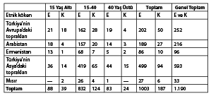

BÖLÜM 9 / AMERİKA’YA GÖÇ EDEN OSMANLILAR 1860-1914313
Nüfus hareketleri, İslamiyette ve özellikle Ortadoğu’da daima önemli bir rol oynamıştır. 19. yüzyılda çok sayıda insanın yer değiştirmesi Osmanlı devletinin -Ortadoğu’nun ve Balkanların- toplumsal, etnik ve dini yapısını kökten değiştirmişti. Ekonomik ve toplumsal olaylar Doğu Anadolu, Suriye, Irak ve Arap Yarımadası’nın başıboş kabilelerini, daha önceden eşi benzeri görülmemiş bir şekilde harekete geçirmiş ve Osmanlı idaresi, iskânla ilgili yaygın sonuçları olan önlemler almak zorunda kalmıştı. 1806 yılında başlayan ve yüzyıl boyunca aralıklı olarak süren Osmanlı-Rus savaşları, büyük insan topluluklarını, ağırlıklı olarak da Kırım, Kafkaslar, Balkanlar ve Akdeniz adalarında yaşayan Müslümanları yerlerinden yurtlarından etti. Atalarının topraklarından sürülen bu insanlar sonunda Anadolu, Suriye (günümüzdeki Suriye’nin yanı sıra Ürdün, Lübnan ve İsrail topraklarını da kapsamaktadır) ve Kuzey Irak’a yerleştiler. Bu göçler Birinci Dünya Savaşı’na dek sürdü.314 Ayrıca, 1830 yılından sonra buna, Abdel Kader’in Fransızlara karşı direnişe son vermesinden sonra Cezayir ve Tunus’tan göç edenler de eklendi. Bu insanlar da Suriye’de Şam’a yerleştiler.315
19. yüzyıldaki nüfus hareketlerinin öne çıkan özelliği, göçün (başta çeşitli Müslüman topluluklarınınki olmakla birlikte bazı gayrimüslimlerin ve özellikle de Yahudilerinkinin) Osmanlı topraklarına yönelmiş olmasıydı. Ancak, buna koşut olarak Osmanlı devletinden Amerika kıtasına yönelen bir hareket de oldu. (Aynı zamanda Rumlar, Ermeniler ve Bulgarların Rus topraklarına daha küçük çaplı bir göçü oldu; ancak kuzeye yönelik bu göç, hiçbir zaman batıya yönelen hareketin düzeyine ulaşmadı.) Ayrıca Bulgarların çoğu daha sonra Osmanlı topraklarına geri döndüler. Yeni Dünya’ya göçenlerin çıkış noktası Suriye ve daha küçük bir ölçekte Güneydoğu Anadolu idi.
Bu makalede, “Suriyelilerin” göçünü şimdiye değin yapıldığı gibi bağımsız bir olgu olarak değil, Amerika kıtasına yönelen bütün Osmanlı göçünün bir parçası olarak ve Osmanlı idaresinin kendi toprakları dışındaki insanların hareketlerini düzenleyen politikalarıyla bağlantılı olarak ele almayı amaçlıyorum.316 Her ne kadar Suriyelilerin göçü, büyüklüğü ve kendine özgü özellikleri bakımından ayrı bir sınıfta değerlendiriliyorsa da, bu göçü Osmanlı demografisini toptan etkilemiş olan hükümet politikalarından, toplumsal ve ekonomik güçlerin bileşkesinden ayrı olarak ele almak doğru olmayabilir.
Suriyelilerin göçüyle ilgili mevcut çalışmalar, Osmanlı döneminde Arapça konuşulan toprakların tarihini ele alan yazıların çoğu gibi, nicelik ve kapsam olarak sınırlıdır. Türk kaynaklarından hiç yararlanılmamıştır. Türk arşivlerinde, özellikle de Başbakanlık ve Dışişleri Bakanlığı arşivlerinde, valilerin ve diğer devlet görevlilerinin, çoktan göç etmiş olan, ülkeden ayrılmayı tasarlayan veya vatanına geri dönmüş olan insanların çeşitli sorunlarına ilişkin bilgi veren çok sayıda yazışması bulunmaktadır. Fransa, İspanya, İtalya, İngiltere, Amerika Birleşik Devletleri, Kanada, Karayipler ve Güney Amerika’daki Osmanlı elçilikleri, temsilcilikleri ve konsoloslukları da, göçmenlerin nakledilmesi, yerleştikleri ülkelerdeki yasal ve toplumsal konumları, kültürel ve siyasal etkinlikleri, Osmanlı hükümetiyle ilişkileri ve ilgili diğer konularda bilgi sağlamaktaydılar.
Bu çalışmada, Osmanlı belgelerinde yer alan bu bilgileri bir araya getirerek genel bir tarihsel çerçeve içinde çözümlemeye çalışacağım. Bunun Suriyelilerin göçüne yol açan Osmanlı toplumsal tarihine duyulan ilgiyi artırmasını ümit ediyorum. Kolaylık açısından “Suriyelilerin göçü” terimini kullanıyor olmama karşın bunun iki bakımdan yanlış bir adlandırma olduğunu belirtmem gerekiyor; bu terim önceleri, hiçbir toplumsal gruba ait olmayanlar ve kendilerini daha çok dini aidiyete ya da köy ve kasaba gibi daha küçük bir bölgeye ya da aşirete göre tanımlayan göçmenler tarafından kullanılıyordu; ayrıca, mevcut verilerin de gösterdiği gibi, Osmanlı göçmenlerinin hepsi Suriye topraklarından gelmiyordu. Bu göç, ileride de değinileceği gibi, bir “Hristiyan” göçü de değildi; Osmanlı Hristiyanlarını kısmetlerini Yeni Dünya’da aramaya iten çoğu neden, önemli sayıda Osmanlı Müslümanlarının da ülkesini terk ederek batıya, Atlantik’in öte yakasına gitmesine yol açmıştı.
Göçün Nedenleri
Suriye’de ve Anadolu’nun kıyı kesimlerinde yaşayan halklar binlerce yıl boyunca, uzak diyarlara yerleşerek, ticaret yapmak üzere deniz yolundan batıya göç etme eğiliminde olmuşlardır. Ulaşımı kolay ve güvenli hinterlandlardan yoksun olan bu eski halklar, yaşamlarını sürdürebilmek için denize güveniyorlardı ve bu nedenle son derece devingenlerdi. Denizcilik ve uzak yerlerle yapılan ticaret nedeniyle göç bir gelenek halini almış ve göç etme usulleri oluşmuştu; koşullar gerektirdiğinde bunlara uyuluyordu. 19. yüzyılın ikinci yarısında, Osmanlı toplumunun ekonomik ve etnokültürel yapısındaki değişiklikler, Kuzey Amerika’daki sanayileşmeyle ve Güney Amerika’da büyük tarım işletmelerinin çoğalmasıyla birleştiğinde -yani, Osmanlı İmparatorluğu’ndaki “itici” etkenlerin ortaya çıkmasına, Amerika kıtasındaki “çekici” etkenler eklendiğinde- uykuda olan dış göç geleneği canlanmış ve Suriye halklarıyla Anadolu’nun bazı kesimlerinde yaşayan insanlar, bir kez daha yüzlerini Batı’ya çevirmişlerdi.
Osmanlı devletinde bu dönemde köklü yapısal değişiklikler oldu. Geleneksel ekonomi, neredeyse tümüyle tarıma dayanan ilkel bir bağımlı kapitalizm biçimine doğru kayıyordu. Bu geçiş, salgın hastalıkların, savaşların, ekonomik durgunluğun ve demografik düşüşün Osmanlı dünyasında öne çıktığı görece uzun bir dönemden (1792-1853) sonra gerçekleşti. Nüfus, özellikle de Anadolu’nun ve Rumeli’nin nüfusu o denli azalmıştı ki, Osmanlı idaresi Avrupa’dan göçmen çekmek için vergi muafiyeti gibi teşviklere başvurma yoluna gitmişti. 1857 yılında göçmenleri davet eden ilanlar çeşitli Avrupa başkentlerinin gazetelerinde çıkmış ve olası yerleşimcilerin merakını uyandırmıştı.317 Ancak, 1862 yılından sonra Kırım’dan, Balkanlar’dan ve Kafkaslar’dan milyonlarca Müslüman mülteci Osmanlı topraklarına akmaya başladığında Avrupalı göçmenlere yönelik liberal politikadan vazgeçildi.318 Osmanlı İmparatorluğu’nun geriye kalan toprakları, büyük sayıda mülteci akınıyla birlikte ağırlıklı olarak Müslümanların yaşadığı bir bölgeye dönüştü. Bu nedenle Suriyelilerin göçünün hemen öncesinde, Osmanlı devletinin hem dini ve kültürel yapısı hem de ekonomik koşulları, halklarının pek çoğunu derinden etkileyen ciddi bir dönüşüm geçirmekteydi.
Müslüman mültecilerin, çoğu zaman devlet malı olan işlenmemiş topraklara yerleştirilmesi bile başlı başına bir toplumsal devrim sayılabilirdi, çünkü yeni gelenlerin çoğuna topraklarında tasarruf hakkı verilirken, yerleşik yetiştiricilerin çoğu, devletin denetimindeki topraklarda (miri) düpedüz kiracı olarak (yetiştirici olarak hakları 1867’de ve daha sonra genişletilmiş olmakla birlikte) çalışmaya devam etmişti. Üstelik Avrupa’da tarımsal ürünlere duyulan talep, peşin parayla satılan ürünlerin yetiştirilmesini teşvik ederek ve bazı çiftçilik sektörlerini pazar ekonomisine yönelterek Osmanlı tarım ekonomisinde küçük bir devrim yaratmıştı. Sonuçta, Anadolu ve Suriye’deki büyük toprak parçaları işlenmeye başlamış ve tarımsal ürünlerin üretimi büyük ölçüde artmıştı.
Yine de tarım devrimi, Osmanlı toplumunun her kesimine zenginlik getirmedi. Tarımsal açıdan görece zengin hinterlandları olan kıyı bölgeleri ve/veya elverişli liman kentleri (İzmir, Mersin, Beyrut, Hayfa gibi) hızla geliştiler; iç kesimler, nakliyat yapılamamasından ve başka nedenlerden ötürü ayrıcalıklı kıyı kesimlerinde yaşanan toplumsal ve ekonomik yeniden doğuşun nimetlerinden hemen yararlanamadılar. Gerçekte, iç kesimlerde üretilen tarımsal ürünlerin (bunlar eski kuru tarım yöntemleriyle yetiştirilen geleneksel ekinlerden oluşuyordu) miktarının ve fiyatlarının değişmediği, hatta düştüğü anlaşılmaktadır. Anadolu ve Suriye’nin bazı bölgelerindeki göçmen Boşnaklar, Çerkezler, Giritliler ve Türkler giderek zenginleşirken eski toprak düzenine bağlı kalan ve yenilikçi yöntemleri kabul edemeyen yerli halk başka nedenlerin de eklenmesiyle, ekonomik durgunluktan, toplumsal ve kültürel tutuculuktan yakasını kurtaramadı. Diğer yandan, yeni yurtlarına uyum sağlayamayan göçmenler de vardı ve değişen ekonomik ortam onlara zenginlik getirmemişti.
Liman kentlerindeki ticari etkinliğin artması, ülkenin yoksul kesimlerinden pek çok hırslı insana cazip gelen yeni iş alanları yarattı. Aynı zamanda, kentler işsizlerin ve işsiz kalabilecek olanların toplandıkları yerler haline geldi.319 Kentsel bölgelere kalabalık gelen ve bu nedenle kimi zaman ciddi sorunlara yol açan (Beyrut’ta Çerkezlerle ve İzmir’de Giritlilerle olduğu gibi) göçmen toplulukları ve bazı topraksız köylüler de bu kişiler arasındaydı. Ayrıca kentlerdeki meslek yapısının hızlı bir dönüşümden geçmesi sonucunda pek çok geleneksel zanaatkâr ve meslek erbabı, becerileri yeni toplumsal düzende işlevini yitirdiği için işsiz kaldı. Osmanlı idaresi tarafından 1880-1900 yılları arasında basılan çeşitli meslek listelerinde ilginç bir ikilik görülmektedir. Bir yanda, uygulayıcıları sayıca azalan eski zanaatlar ve meslekler sıralanıyor, diğer yanda ulaşım, bankacılık, sigorta ve benzeri alanlarda pek çok yeni meslek belirtiliyordu; üstelik bu alanlardaki insanların sayısı hızla artmaktaydı.320 Dolayısıyla, başta Osmanlı’nın ekonomik, toplumsal ve kültürel ortamındaki genel değişim olmak üzere, artık kendi kentlerinde iş bulamayan geleneksel zanaatkârlar ve meslek erbabı gibi halkın bazı kesimlerini etkileyen belirli nedenler, Suriye ve Doğu Anadolu’dan göçü harekete geçirmişti.
Belli toplulukların ekonomik konumlarındaki altüst oluşa neden olan diğer özel etkenlerden bazıları şunlardı: Üzüm bağlarının büyük bir bölümünün fidan bitleri yüzünden harap olması; Süveyş Kanalı’nın açılmasıyla birlikte ticaret yollarının güneye kayması; 1875-1885 yılları arasında yerli ipek böceklerinin bir hastalık yüzünden ölmesi sonucunda ipek sanayisinin çökmesi ve ipekböceği yumurtalarının Fransa’dan alınmasının ve kozaların oraya gönderilmesinin zorunlu bir hale gelmesi. Ayrıca, 1861 yılında Lübnan dağlarına özel bir idari konum tanınmış olması, halkın zengin Biga vadisi ve Tripoli ile bağının kopmasına ve görece sınırlı olan kendi kaynaklarıyla baş başa kalmalarına neden olmuştu; böylece çoğu Hristiyan olan dağ halkı, ekonomik güvenceyi göçte aradı.
Bu arada, eski dini toplulukların çözülmesi ve yeni kiliselerin çoğalmasıyla birlikte toplumsal ve ekonomik değişimin neden olduğu alt üst oluşa dini bir kargaşa da eklenmiş oldu.321 Suriyeli Hristiyanların, başta Müslüman nüfusun tehdidi karşısında göç ettiklerini ve zenginleşmeye çalıştıklarını iddia edenler olmuştur.322 Bu görüş, her ne kadar çok sayıda Müslüman göçmenin Suriye’nin demografik dengesini değiştirebileceğinden gerçekten endişe duyulmuş olsa da (bu makalenin ilerideki bölümünde bu konu ele alınmaktadır) bu ifadeyle kabul edilemez. Yoksulluktan kaçma ya da kişinin kötüleşen ekonomik durumuna düzelme şansı sunan bir yere giderek çare arama isteği güçlü bir etkendir. Amerika kıtasına giden ilk Suriyeli göçmenler, çoğunlukla alt toplumsal ve ekonomik sınıflardan geliyorlardı;323bazıları sırf yolculuk masraflarını karşılayabilmek için varını yoğunu satmak zorunda kalmıştı.
Suriyelilerin göçüyle ilgili mevcut araştırmalarda Dürzi isyanları, denetlenemeyen eşkıyalık, Osmanlı devlet adamlarının yozlaşması (gerek tüccarlara gerekse köylülere zorbalık uygulanması) ve bütün bu nedenlerden kaynaklanan güvensizlik duyguları gibi etkenler üzerinde abartılarak durulur.324 Aslında, büyük Dürzi ayaklanmaları (Hristiyanlar hedef aldığı ve onların göç etmelerinde payının olduğu varsayılmaktadır) 1896 ve 1909 yıllarında, göçün başlamasından çok sonra gerçekleşmişti. Üstelik kargaşaların bütün suçunu Dürzilere yükleyen ve Hristiyanları saldırılar karşısında savunmasız kurbanlar olarak resmeden Avrupalıların bu olaylarla ilgili basmakalıp yorumları gerçeklerle desteklenmemektedir.325 Osmanlı idarelerinin (en azından Jön Türkler dönemine dek) uyguladığı sözde baskılar hakkında anlatılan hikâyelerin doğru olmadığını, yalnızca güvenilir çeşitli çalışmalar değil, göçmenlerin kendi eylemleri de göstermektedir; çoğu, biraz para biriktirdikten sonra Suriye’ye dönmeye kararlıydı ve nitekim daha sonra üçte biri geri döndü. Osmanlı idaresinin ve Müslüman vatandaşlarının uyguladığı baskı, haksızlık ve kötü muameleye dair sonu gelmez hikâyeler, öncelikle Avrupa’da ve Amerika kıtasındaki Hristiyanların desteğini ve anlayışını kazanmayı amaçlıyordu. Bu hikâyeler, Amerika Birleşik Devletleri basınında ve başka yerlerde yayımlandı. Bunlar çoğu zaman Osmanlı idaresinin otoritesini gösteren her hareketi “baskı” ve yasal vergilerin ödenmesi talebini “zorbalık” olarak değerlendirme eğiliminde olan yerel rahiplerin ve misyonerlerin raporlarına dayanmaktaydı.326
Amerika’daki Hristiyanların duygudaşlığına başvurma çabası, entelektüel göçmenlerin 20. yüzyılın başından itibaren milliyetçiliğin çeşitli biçimlerini benimseyerek ve kendilerini yurtlarında kalanların siyasal sözcüsü görerek gazete yayımlamaya ve kitap yazmaya başlamalarıyla birlikte daha şiddetli bir Osmanlı ve Müslüman karşıtı yaklaşıma dönüştü.327 Hristiyan duygudaşlığını uyandırmanın yöntemlerinden biri de, göçmenlerin, aslında Suriye’ye ya da Anadolu’ya Kudüs’e uzak herhangi bir yerden geldikleri halde fanatik Müslümanlar tarafından Kudüs’ten sürüldüklerini iddia etmeleriydi.
O halde Suriyelilerin göçündeki başlıca “itici” etkenin, 1860 yılından itibaren Osmanlı devletinin toplumsal ve ekonomik koşullarındaki bozulma olduğu vurgulanmalıdır. İster Müslüman ister Hristiyan olsun, nüfusun bütün unsurları bu bozulmadan etkilenmekteydi. Suriye’nin bazı bölgelerindeki huzursuzluk kadar Müslümanlara zorunlu askerlik uygulamasının getirilmesi ve ordu görevleri yerine getirilirken kimi zaman ayrımcılık yapılması da Müslümanları özellikle göçe yönelten nedenler arasındaydı.328Bu nedenle, Suriyelilerin göçü, Hristiyan göçmenlerin sayısının daha çok olmasına karşın tümüyle Hristiyanlara özgü bir olgu değildi.
Amerika kıtasında çok güçlü ve belki de göç hareketinde yukarıda değinilen “itici” etkenlerden daha önemli olan “çekici” etkenler vardı. Kuzey ve Güney Amerika’daki iş imkânları ve görece yüksek ücretler, göçmenleri çeken güçlü unsurlardı. Kuzey Amerika’daki fabrikalarda, Arjantin’de ve Brezilya’daki tarlalarda insan gücüne gerek duyuluyordu; bu ülkelerin hızla büyümekte olan kentlerinde, zanaatkârlar ve sanayi işçileri için de fırsatlar vardı.
Osmanlı Hariciye Nezareti’ne hitaben yazılmış göçmen talepleri değerlendirildiğinde, bu bölgelerde insan gücüne had safhada ihtiyaç duyulduğu anlaşılıyordu. Örneğin, Brezilya São Paulo’da bir toprak sahibi olan Paulo Duval, topraklarında çalışacak çok sayıda göçmen getirtmek için izin istemişti. “Doğulu işçilerin kolaylıkla uyum sağlamalarından, aklı başında ve çalışkan olmalarından” özellikle etkilendiğini yazıyordu. Ayrıca “Bana kalırsa bunlar arasında Ermenilerin tarım işi için gerekli niteliklere sahip oldukları belli oluyor.” diyordu.329
Başarılı olan göçmenlerin Amerika kıtasından ülkelerine döndüklerinde toprak satın alacak ve büyük evler yaptıracak kadar para sahibi olmaları ve kırsal kesimde üst sınıfı temsil etmeleri, Osmanlı yurttaşlarının gözünde girişimcilikleri ve çalışkanlıkları lehine güçlü bir sav oluşturmaktaydı. Dönenlerin Amerika kıtasındaki bolluk hakkında anlattıkları, durumu hiç de fena olmayanlarda bile zenginlik arzusu uyandırmıştı ve sonradan göç edenler daha çok, belli bir varlık düzeyinde oldukları halde zenginliklerine zenginlik katma umuduyla Yeni Dünya’nın çekimine kapılmış olanlardı.
Deniz aşırı ülkelerdeki göçmen kolonileri, yerlerini sağlamlaştırdıktan ve zenginleştikten sonra kendileri de birer “çekici” etken haline geldiler ve belki de daha az maceracı olan ya da kendi yurdundaki durumu çok da umarsız olmayan kişileri de cezbettiler. Kendi yurttaşlarından oluşan toplulukların yabancı Batı’da daha önceden yerleşmiş olması, bu kişiler için terazinin göç yanının ağır basmasının bir koşuluydu. (Kuşkusuz, iyice yerleşmiş olan kolonicilerin akrabaları da Amerika kıtasına gittiler.) Ayrıca, yüzyılın sonunda diğerlerinden epeyce farklı bir topluluk da Amerika’ya gitmeye başlamıştı; kültürel ve siyasal nedenlerden ötürü göç eden meslek sahipleri, yazarlar ve gazeteciler. Örneğin, Papaz Henry H. Jessup, 1906 yılında Beyrut’taki Süryani Protestan Okulu mezunu olan 58 kişinin Amerika Birleşik Devletleri’nde bulunduğunu yazıyordu.330Ayrıca, ABD Göç Komisyonu’nun verileri, 1911 yılında ülkeye giriş yapan Suriyeli göçmenlerin diğer işçilere göre çok daha fazla beceri sahibi olduklarını göstermektedir; % 22.7’si ustalık gerektiren mesleklere sahipti, % 20.3’ü ticaretle uğraşıyordu. Diğer göçmeler için bu oranlar sırasıyla % 20.2 ve % 19.1 idi. Suriyeli göçmenlerin yarısından biraz fazlası vasıfsız tarım ve fabrika işçisi (% 50.8) iken, diğer tüm göçmenlerin (% 59.2) yaklaşık % 60’ı bu tip işlerde çalışıyordu.331
Amerika kıtasına, Afrika’ya ve Avustralya’ya giden Osmanlı göçmenlerinin büyük çoğunluğu kentlere yerleşti. Pek çoğu zanaatla uğraştı ya da seyyar satıcılık yaptı. Birçoğu sonunda küçük iş sahibi oldu. Aslında bir kısmı ülkelerinden gelirken New York’un ya da diğer kentlerin sokaklarında satmak üzere halı veya diğer el sanatı ürünleri de getirmişti. Böylelikle yeni ülkelerinin halklarına pek çok Şark ürününü tanıtmış oldular.
Suriye ve Anadolu’nun farklı bölgelerinden daha sonra başka göçmenler de geldi. Osmanlı topraklarından gelen göçmenler hakkında genel bir fikir veren 1907 tarihli bir Fransız elçilik raporuna göre, iç kesimlere uzanan demiryollarının yapımı sayesinde Şam, Halep ve tüm Mezopotamya’da yaşayan insanların Amerika kıtasına giden gemilere binmek üzere kıyılardaki liman kentlerine ulaşmaları kolaylaşmıştı.332 Raporda, Filistin’den göç edenlerin sayısının diğer bazı bölgelere göre daha az olduğundan söz edilmektedir; 10 yılda 4.000 kişi göç etmişti. Bununla birlikte, Filistinlilerin neredeyse yarısı ailelerini beraberlerinde götürdüler. Aslında, 1900 yılından sonra Amerika Birleşik Devletleri’ne giren Suriyeli göçmenlerin büyük bir oranını, eşleri ve babalarıyla birlikte gelmiş olan kadınlar ve çocuklar oluşturmaktaydı. Böylelikle önceki yıllarda % 67.9 olan göçmen erkeklerin oranı dengelenmiş oluyordu. (Daha önce toplam 38.635 erkeğe karşılık yalnızca 18.274 kadın gelmişti.)333Bu oranın erkeklerden yana ağırlıklı olmasına karşın aslında, Amerika Birleşik Devletleri’ne göç eden diğer Osmanlı toplulukları arasındaki kadın-erkek oranından çok daha iyi olduğu söylenebilir. Dürzi 1.000 göçmen arasında yalnızca bir düzine kadın bulunurken, yaklaşık 8.000 Müslüman göçmen içinde sadece yaklaşık iki düzine kadın vardı.334Bu rakamların, Müslüman göçmenlerin ikinci vatanlarında neden güçlü cemaatler kurmayı başaramadıklarını açıklamada önemli olduğunu sanıyorum.
Göçün Kapsamı: Toplam Sayılar, Kökenler, Dinler
Osmanlı topraklarından özellikle de Suriye’den Amerika kıtasına göç, 1860’lı yıllarda başladı ve kesintisiz olarak azar azar sürdü. (Bazı kaynaklar Osmanlıların Amerika Birleşik Devletleri’ne daha 1820’lerde göç ettiğine işaret etmektedir.) İlk yıllarda Amerika’ya giden gemilerin sayısı hayli düşüktü. Bununla birlikte, dış göç oranı 1878-1879 tarihinden itibaren artmaya başladı. Ayrıca ilk kez Güney Amerika ve Karayipler’e yönelen bir hareket oldu. 1891 yılından sonra İspanya’nın, Osmanlıların Küba’ya (ve Filipinler’e) göçünü yasaklama kararı üzerine göç seli Kuzey Amerika’ya yöneldi ve hacmi artarak 1896-1897’de, Osmanlı hükümetinin göç yasağını kaldırmasından sonra, doruk noktasına ulaştı. Göç oranı, kaynaklandığı yerde yeni kısıtlamalar getirilmiş olmasına karşın yüzyılın başından itibaren tekrar arttı ve 1908-1914 yılları arasında son kez doruk noktasına ulaştı. Bu dönemde öncelikle İttihat ve Terakki hükümetinin ilk iş olarak görece bir özgürlük ortamı getirmesi ve ardından 1912 yılında Balkan Savaşı’nın bir alt üst oluşa neden olması göçü canlandırmıştı. Balkan Savaşı, başta Balkanlar ve Anadolu olmak üzere bütün Osmanlı vilayetlerinden Amerika kıtasına ve aynı zamanda Rusya’ya olan göçü tetikledi.
İyi tutulmuş ve kesin istatistikler olmadığından Amerika Birleşik Devletlerine göç eden Suriyelilerin toplam sayısını, doğru olarak saptamak olanaksızdır. Amerikan hükümetinin 1798 yılı gibi erken bir tarihte göç istatistikleri tutmaya başlamış olmasına ve 1819’dan sonra bu işlemi, gemi yolcu listelerinin (manifestolar) yerel gümrük memurlarına sunulması zorunluluğunu getiren bir kanun doğrultusunda desteklemiş olmasına karşın, genelde bu istatistikler ancak 1880 yılından sonra sistemli bir hale getirilmiş ve görece güvenilir olmaya başlamıştır.335Türkiye’nin Asya topraklarından gelen göçlerle ilgili istatistikler, ancak 1869 yılından sonra (akının başlamasından epeyce sonra) tutulmaya başlandı. Kaydedilen göçmen sayısının aşırı ölçüde düşük olmasından da bunların güvenli istatistikler olmadıkları bellidir. 1867-1881 yılları arasında yalnızca 74 Asyalı Osmanlının ülkeye giriş yaptığı kaydedilmiştir; 1881-1885 döneminde ise Amerika Birleşik Devletleri’ne hiçbir giriş kaydedilmemiştir. Resmi istatistiklere göre 1895 yılında “Türkiye’nin Asya topraklarından” çok sayıda göçmen gelmeye başlamıştı. (1885-1894 yılları arasındaki dönem için hiçbir bilgi bulunmamaktadır). Yine de 1910 yılına kadar gelen göçmenlerin toplam sayısı 59.729 olarak verilmişti ve bu, Asya’da doğmuş olan Amerikalıların toplam nüfusunun üçte birini oluşturmaktaydı. Dolayısıyla, 1880 yılında, göçle ilgili bilgi toplama yöntemlerinin düzeltilmesinden sonra bile Asyalı Osmanlılarla ilgili olarak tutulan kayıtların yetersiz olduğu açıktır. Göçmenlerin pek çoğu yasadışı yollardan giriş yapmış ya da Kanada üzerinden gelmişti veya Osmanlı belgelerini kullanmamıştı ve bu yüzden de ya hiç kaydedilmemiş ya da yanlış kaydedilmişti. Osmanlılar dış göçe (resmi olarak yasaktı) ilişkin olarak resmi düzeyde çok az rakam tutmuşlardır, ama bazı tahminler daha önce de değinilen elçilik raporları gibi çeşitli kaynaklardan sağlanmaktadır. Mevcut istatistik malzemesinin bir bölümü bu makalenin sonundaki Ek I-IX’ da verilmektedir.
Amerika Birleşik Devletleri’ne giriş yapan Suriyelilerin sayısının kesin olarak saptanmasının önündeki bir başka zorluk da, kayıtların çoğunda farklı bölgelerden gelen Osmanlı göçmenlerinin ayırt edilmemiş olmasıdır. Osmanlı kayıtları, ister Asya ister Avrupa topraklarından olsun bütün göçmenleri bir arada topluyordu.336Amerikan istatistiklerinde, “Türkiye Avrupa’sındaki” ve “Türkiye Asya’sındaki” ayrımı yapılıyor olmasına karşın, ancak 1895 yılında göçmenlerin kökenleri belirtilmeye başlanmıştı; 1920 yılına dek Filistin’den (3.202), Suriye’den (51.900) ve “Türkiye Asyası’ndan” yani Anadolu’dan (11.014) gelen göçmenler genel bir “Türkiye Asyası” sınıflandırması altında verilmişti. (Ermenistan da 1920’de “Türkiye Asyası” sınıfında sıralanmış, ancak gelen göçmenlere ilişkin hiçbir rakam verilmemişti; başlangıçta Ermeniler “Diğer Asyalılar” sınıfına dahil edilmişti. Ermenilerin sayısı ancak sonraki yıllarda, sınıflandırma ölçütleri değiştiğinde ayrı olarak kaydedilmeye başlandı.)
Kesin veriler olmamasına karşın Osmanlı devletinden Amerika kıtasına giden göçmenlerin, yurtlarındaki baskıdan kaçan Suriyeliler, özellikle Lübnanlılar ve Maruniler ya da Ortodoks Hristiyanlar olduğu çoğu kez kesin bir ifadeyle belirtilmiştir. Mevcut Osmanlı belgeleri aslında önemli bir sayıda Müslümanın göç ettiğine işaret etmektedir. Örneğin bir Osmanlı elçisi, 1904 yılında Malta’ya gelen bir gemide, Amerika kıtasına gitmek üzere Tripoli’den gemiye binmiş olan 201 “Suriyeli”nin bulunduğunu ve bunların yarısının ülkelerinden izinsiz olarak ayrılmış Müslümanlar olduğunu kaydediyordu; ardından Marsilya’daki Osmanlı elçiliği, Suriye kadar Anadolu’dan, Mamuretulaziz (Elazığ), Aydın ve Trabzon’dan gelen “18-35 yaşları arasında çok sayıda kaçak Müslüman göçmenin” olduğunu ve bu genç Müslümanların askerlikten ve yoksulluktan kaçtıklarını kaydediyordu.337
Bu yolcu trafiğiyle ilgili bütün yazışmalarda, Müslüman göçmenlerden söz ediliyordu. Örneğin, gerekli belgeleri olmadığı ve/veya geçimlerini temin etme koşullarından yoksun oldukları için Amerika Birleşik Devletleri’ne girmesi yasaklanan bir grup Osmanlının yaklaşık 200 Suriyeli, 200 Ermeni ve 60 Türkten (yani Müslüman) oluştuğu bildiriliyordu. Arjantin’deki bir istatistik kaydında (bkz. Ek VI), 1909 yılında ülkeye kabul edilen 11.765 Suriyeli göçmenden 5.111’in (yaklaşık % 45’i) Müslüman, geri kalanının Katolik (6.428) ve Yahudi (226) olduğu görülmektedir.338
Müslümanların ancak 1900 yılından sonra göç etmiş olabileceklerinin ileri sürülmesine karşın, Washington’daki Osmanlı temsilciliği, daha 1892’de Amerika’ya gelen Suriyeli göçmenler arasında “önemli bir sayıda” Müslüman olduğunu kaydetmişti. Rapora göre bunlar toplam 200 kişi kadarlardı ve Massachusetts, Michigan ve St. Louis’e yerleşeceklerdi (daha çok sayıda Müslümanın yerleşmiş olduğu New York’tan ya da doğudaki diğer büyük kentlerden söz edilmiyordu); özellikle Harputlu 10 Müslümanın yakın zamanda Massachusetts Worcester, Massachusetts’e gelmiş olduğu ve bunlardan birinin ülkeye önceden yerleşmiş olan oğullarıyla çalışmak üzere gelen bir imam olduğu belirtiliyordu. Raporda Müslümanların, çoğu zaman Hristiyan, (özellikle de günlük yaşamdaki âdetleri diğer Anadolululara benzeyen ve ilk dil olarak çoğunlukla Türkçe konuşan), Ermeni olarak kayıtlara geçmeyi tercih ettiklerinden söz edilmesi önemlidir. Bu sayede Amerika Birleşik Devletleri’nde daha kolay kabul göreceklerini ve başlarını Osmanlı idaresiyle derde sokmayacaklarını umuyorlardı.339
O halde 19. yüzyılda ve 20. yüzyılın başında imparatorluktan yapılan ve imparatorluğa yönelik göç istatistikleriyle ilgili olarak sistemli bir biçimde veri toplama programlarının olmamasının yanı sıra Müslümanların kararlı suskunlukları da Müslümanların sayısını kesin olarak saptama girişimimizde karşımıza bir engel olarak çıkmaktadır. Osmanlı devleti topraklarından gizlice ayrılmaları gerekiyordu, çünkü göç etmeleri, genel kısıtlamaların getirilmesinden önce bile yasaklanmıştı. Birkaç misyoner grubun, bazı Müslümanların Osmanlı devletinden kaçarak Amerika Birleşik Devletleri’ne göç etmelerine yardımcı olduğuna ilişkin bazı bilgiler bulunmaktadır. (Bu misyonerler, Müslümanların Hristiyanlığa geçmelerini iyi niyetle sağlama amacı güdüyorlardı.) Her durumda, bunların çoğu Osmanlı yetkililerinin dikkatini çekmemek için “Suriyeli” ve Hristiyan olarak kayıtlara geçme yolunu seçmişti. Aksi takdirde yeni ülkelerine girişlerini tehlikeye atmış olacaklardı. Üstelik Amerika Birleşik Devletleri’nde bulunan Müslümanlar da, toplumun kamu alanında dini eşitliği telkin ettiğini, ancak özel yaşamda bu konuda hoşgörüsüz olduğunu anladıklarından kültürel açıdan fazla göze batmamak için Hristiyan kisvesi altında yaşamayı sürdürdüler. Pek çok Müslüman, Hristiyan adı aldı. Aslında çok sayıda Müslümanın (ya da çocuklarının) da Hristiyanlığı seçmiş olduğuna kuşku yoktur. Bazı Türk Müslüman çocukları da ailelerinin milliyetçi terörist çeteler tarafından öldürülmesinden ya da Balkan Savaşı sırasında Makedonya’daki Sırplar ve Bulgarlar tarafından katledilmesinden sonra Bulgar, Sırp ve Boşnak aileler tarafından evlat edinilmişler ve Hristiyan olmuşlardı. Bu Müslüman çocuklar, kendilerini evlat edinen aileleriyle birlikte Amerika Birleşik Devletleri’ne göç ettiklerinde ülkeye Avrupalı Hristiyan kisvesi altına girmiş oldular. (Yakın zamanda bu iki dönme Müslüman topluluğu temsil edenlerle kişisel olarak görüştüm; asıl adı Ahmed Şerif olan ve ailesini Hristiyan olarak yetiştirmiş bulunan Bay Johnson ve çocukluğunda Bulgar bir aile tarafından Amerika Birleşik Devletleri’ne getirilmiş bir Türk’ün oğlu olan bir rahip.)
Anlaşılan, din değiştirmek için, toplumun geri kalan kesimiyle kaynaşmak gibi basit bir isteğin dışında da teşvik edici nedenler vardı. Bunlar oldukça cazip etkenlerdi; öyle ki, Hristiyan göçmenlerin Müslüman olduklarını iddia ettikleri ve bir kazanç elde etmek üzere “dinlerini değiştirmeye” ikna edilmeyi umdukları durumlar olmuştu.340İlk Müslüman cemaatlerinden bazıları Kuzey ve Güney Amerika’nın çeşitli kentlerinde zayıflamış olarak varlıklarını sürdürmektedirler. Ama bu cemaatlerin çoğu, üyelerinin din değiştirmesi, ölmesi ve özellikle de anavatanlarına geri dönmesi gibi nedenlerle sayıca azaldıktan sonra ortadan kaybolmuş olsa gerektir.341Destek olacak, yol gösterecek bir Müslüman liderlik kurumunun olmayışı ve göçmenler arasındaki Müslüman kadınların sayıca azlığı -bu durumda kültürel aktarımın ana aracı olan ailenin kurulma şansı kalmıyordu- bu cemaatlerin düşüşe geçmiş olmalarını büyük ölçüde açıklayıcıdır; Müslüman cemaatleri hiçbir zaman üyelerinin din değiştirmeleri için yapılan baskılara karşı koymalarını sağlayacak ya da din değiştirmek istemeyenlerin Yeni Dünya’yı daimi yurtları olarak benimsemeleri için kültürel açıdan yeterince cazip kılacak kadar güçlü olamadılar.
Müslüman olarak tanımlanmayı istememelerine karşın, çoğunun kimliği, gittiği ülkeye kabul edilme aşamasında ya da yolculuğu sırasında karşılaştığı sorunlar yüzünden resmi makamlardan yardım istediğinde ortaya çıkıyordu. Örneğin, Marsilya konsolosu toplam 108 göçmen arasında 18 Müslümanın olduğunu öğrenmişti. Güya hepsi Suriyeli Hristiyandı ve Beyrut’ta kendilerini kandırmış olan seyahat acentelerini şikayet etmek üzere gelmişlerdi; Napoli’den New York’a gidiş ücreti yalnızca 160 frank olduğu halde, kendilerinden Marsilya’dan New York’a bilet ücreti olarak 310 frank alınmıştı.342Konsolosluk yazışmaları, Mamüretülaziz, Malatya, Harput, Akçadağ gibi yerlerden gelen pek çok Müslümanın, deniz aşırı ülkelere giden gemilere binmek üzere liman kentlerine ulaşmak için uzun mesafeler katettiklerine hatta kimi zaman yürüdüklerine işaret etmektedir. Aslında iç kesimlerden kıyılara olan göç güzergâhları iyi belirlenmişti; Konya’dan Mersin’e, Halep-Urfa’dan Beyrut’a, Sivas ve Ankara’dan İzmir’e ve Erzincan’dan Trabzon’a.343Tripoli, özellikle Suriyeli Müslümanlar için önemli bir limandı. Konsolosluk kayıtları “Suriyeli” göçmenlerin Lübnan dağları, Tripoli ve Kudüs’ten geldiklerine işaret etmektedir; ancak, 1895 yılına kadar Lübnan’dan göç edenlerin sayısal olarak diğer bölgelere yetişmiş olduğu görünmektedir.
Her ne kadar Hristiyanlar Osmanlı göçmenler arasında çoğunlukta olsalar da elimizdeki bilgiler Müslümanların oranının da hayli yüksek olduğunu göstermektedir. (Toplam rakamın muhtemelen %15’i ile %20’siydi.) Mevcut kaynaklara dayanarak söz konusu toplamın büyüklüğüne ilişkin akla yatkın bir tahminde bulunulabilir. Himadeh, 1860-1914 yılları arasında yaklaşık 120.000 kişinin Suriye’den ayrıldığını tahmin ediyordu.344Issawi, Suriye ve Lübnan Dağları’ndan 1860-1914 yılları arasında göç edenlerin toplam sayısını 330.000 olarak tahmin ederken, rakamlarını Alman konsolosluk hesaplarına dayandıran Ruppin, 1912 yılında Kuzey ve Güney Amerika’da yaşayan Suriyeli göçmenlerin sayısını, yarısı Lübnanlı olmak üzere 500.000 olarak vermektedir.345E. Weakly, 1909 yılında yalnızca Tripoli ve Beyrut’tan toplam 13.848 kişinin gemilere bindiğini kaydetmektedir.346Hem Issawi hem de Ruppin, yılda 15.000 ile 20.000 kişinin ülke dışına çıktıklarını tahmin etmektedir.347 Bu tahminlere dayanılarak 1900-1914 döneminde yalnızca Beyrut ve Tripoli’den göç edenlerin toplam sayısının yaklaşık 280.000 olduğu sonucu çıkarılabilir. İzmir, Mersin ve Trabzon gibi diğer liman kentlerinden göç edenler de göz önünde bulundurulduğunda, o dönemde Asya’dan göç eden Osmanlıların toplam sayısının neredeyse yarım milyona ulaştığı anlaşılmaktadır.
Göç edenlerin toplam sayısına ilişkin olarak hem imparatorluk geneli hem de yalnızca Suriye için yapılan ilk tahminler kuşkusuz oldukça düşüktür. Daha 1893 yılına ait bazı Osmanlı elçilik kayıtlarında, Amerika kıtasında yaşayan “Arapça konuşan Osmanlılar”ın sayısının 200.000 kadar yüksek bir rakam olduğuna işaret edilmektedir. Bu kayıtlara göre 1880 yılında bile ve özellikle 1885’ten sonra göç hızı ve ülke dışında yaşayan Osmanlıların sayısı o kadar artmıştır ki, hükümet ya yeni elçilikler açmak ya da İspanya (Barselona) , Fransa, Karayipler (Havana, Küba) ve Güney Amerika’da (Arjantin) mevcut olanları genişletmek zorunda kalmıştır. Osmanlı idaresini yurtdışında ciddi bir elçilik hizmeti sağlamaya yönelten şey, yalnızca vatandaşlarını koruma isteği değil, aynı zamanda bu kişilerin diplomatik korunma arayışlarına ve Avrupa devletlerinden pasaport almalarına engel olma isteğiydi. Özellikle Maruniler kolaylıkla Fransız pasaportu edinebiliyorlar ve bu yolla Fransız vatandaşı oluyorlardı. Bu sayede yurtlarına döndüklerinde Osmanlı kanununu hiçe sayan eylemlerde bulunabiliyorlardı.348
Çeşitli Osmanlı elçilik kayıtlarında dağınık olarak bulunan veriler, göç eğilimini tahmin etmek için iyi birer kaynaktır. Bir kayıtta, Amerika yönünde giden ve Barselona limanına yanaşmış olan gemilerde 1889 yılının Nisan ayında 980, Mayıs’ta 860 ve Haziran’da 665 Lübnanlı göçmenin bulunduğu bildirilmektedir; tek bir aktarma noktasında yalnızca üç ayda toplam 2.505 kişi.3491899’da Marsilya’daki Osmanlı elçisi, önceki bir yıl içinde 7.010’u Suriyeli ve 526’sı Ermeni olmak üzere toplam 29.763 göçmenin bu limandan geçtiğini bildiriyordu. Elçi üç yıl sonra yılda 15.000 Suriyelinin kısmetlerini Yeni Dünya’da aramak üzere ülkeyi terk ettiğini ve bunlardan 5.000 kişinin yurtlarına erken döndüğünü bildiriyordu.350Cenova’daki Osmanlı elçisinin gönderdiği bir mektupta ise 1910 yılının Eylül ayında pasaport ücreti olarak toplam 28.705 kuruş toplandığı kaydedilmişti. (Pasaport başına ücret 11.50 ya da 12 ile 15 franktı.) Elçi, Suriyeli göçmenlerin %60’ı (abartılı bir yüzde) Cenova’dan geçtiği için pasaporttan sağlanan gelirin o zaman ayda 800 ile 900 Osmanlı lirası olan bir düzeyden ayda 4.000 ile 5.000 liraya çıkarılabileceğini ima ediyordu.351Diğer elçilik yazışmaları, yalnızca Arjantin’e giden Suriyeli ‘Lübnanlı göçmenlerin 1910, 1911 ve 1912’deki toplam sayılarını sırasıyla 13.099, 13.605 ve 19.797 olarak vermektedir. Bu rakamlar bilinen bütün önceki rakamlardan çok daha yüksektir.352Elimizde eksiksiz listeler bulunmamaktadır; yine de, Buenos Aires’ten gelen 1913 tarihli bir yazışma, bir milyondan fazla Osmanlının Amerika kıtasına göç etmiş olduğunu ortaya koymaktadır; bu göç Hamidiye idaresi sırasında başlamış ve Jön Türkler döneminde de devam etmişti. Ancak, Osmanlı idaresi bu sorunla ilgilememişti.353
Büyüyen göç dalgası, Osmanlı idaresinin sorun karşısında resmi düzeyde kayıtsız kalmış olmasına karşın, ülke dışındaki Osmanlı elçileri için son derece endişe vericiydi. Buenos Aires’teki elçi, yaklaşık 46.000 Osmanlının 1911-1913 yılları arasındaki iki yıllık dönemde Arjantin’e gelmiş olduğunu kaydederek şunları söylüyordu: “Eğer önceki raporlar incelenecek olursa göçmen sayısının her yıl artmakta olduğu ve ülkenin boşalmasına neden olan bu göç dalgasını, bilhassa ülkenin evlatlarına son derece ihtiyaç duyduğu böyle bir zamanda durdurmak için ciddi önlemlerin alınması gerektiği anlaşılacaktır.”354
Bu durumda elimizdeki bilgiler, 1860-1914 yılları arasında Amerika kıtasına göç eden Osmanlıların toplam sayısının 1.200.000’e ulaşmış olabileceğine işaret etmektedir. Bunların yaklaşık 600.000’i Suriye ve Lübnan dağlarından geliyor ve Arapça konuşuyordu: Yaklaşık 150.000’i çeşitli yerlerden gelen Müslümanlardı, geriye kalanlar da Arnavutluk, Makedonya, Trakya ve Batı Anadolu’dan gelmekteydiler. (Türkiye’deki Fransız büyükelçisi 1907 yılında, Makedonların 1902’den itibaren yılda 15.000 kişilik bir kitleye ulaşacak ölçüde göç ettikleri ve yaklaşık aynı büyüklüğün Arnavutluk için de geçerli olabileceği tahmininde bulunuyordu.)355
Yeni Dünya’yı yurt edinmeyen Osmanlı göçmenlerinin sayısı fazlaydı. Vatanlarına dönenlerin oranı fevkalade yüksekti. Suriyeliler ve diğer bütün bölgelerden gelen Müslümanlar arasında geri dönenler, başlangıçtaki toplam göçmen sayısının üçte birini oluşturuyordu. Ruppin, Beyrut’taki liman yetkililerinin, 1912-1915 yılları arasındaki üç yıllık dönemde 41.752 kişinin gittiğini ve 27.868 kişinin geri geldiğini kaydettiklerini belirtir.356 Yolcuların hepsinin göçmen olmayabileceği düşünülse de (savaş nedeniyle yolcu sayısı muhtemelen son derece yüksekti) geri dönenlerin sayısının kuşkusuz oldukça yüksek olduğu bir gerçektir. Himadeh’in verdiği rakamlar, 1926-1933 yılları arasında geri dönenlerin gidenlere oranının yılda % 30 ile % 60 arasında değiştiğini göstermektedir.357 (Bu durumda yüzdedeki artışın, Amerika Birleşik Devletleri ekonomisinin alt üst olmasından kaynaklandığına kuşku yoktur.) Marsilya’da yayımcısı olan ve Osmanlı idaresine Suriyeli göçmenlerin siyasal etkinlikleri hakkında bilgi sağlayan Antun Fares de geri dönen göçmenlerin gidenlere oranının üçte bir olduğunu tahmin etmişti.358New York’taki Osmanlı elçisine göre Suriyelilerin büyük çoğunluğu kente giriş yaparken, er ya da geç vatanlarına geri dönme konusunda kararlı olduklarını dile getirmişlerdi; sonuç olarak, “işleri yoluna girer girmez uyruk değiştiren” Ermeniler dışında çoğu, Amerikan uyruğuna girmeyi reddetmişti.359
O halde göç etmiş olan Osmanlıların üçte birinin (yaklaşık 400.000 Osmanlının ya da 200.000 Suriyelinin) anavatanlarına geri döndükleri neredeyse kesindir. Bu, 400.000 kadar ya da daha fazla Suriyeli göçmenin Kuzey ve Güney Amerika’da kaldığını gösterir. Bu rakam, çeşitli kaynaklarda verilen toplam rakamlarla da örtüşmektedir.360
Anavatanlarına dönememiş ya da dönmek istememiş olanların çoğunluğu, geride akrabalarını bıraktıkları için Eski Dünya’yla bağlarını koparmamışlardı. Suriye ve Amerika kıtası arasında kesintisiz bir gidiş geliş vardı: Bir New England kasabasına yerleşmiş olan bir göçmen, doğduğu köyden bir kızla evlendiğinde, gelinin peşi sıra çok sayıda erkek ve kız kardeş, kuzen ve akraba da Amerika’ya geliyordu. Aslında ilk göçmen dalgasıyla birlikte gelenlerin yerleşmesinden sonra, aile bağları, Atlantik Ötesi yolculukların yapılmasında ana gerekçelerden biri haline gelmişti. Amerika Birleşik Devletleri Göçmen Kurulu’nun bir raporuna göre 1908-1909 yıllarında ülkeye giren Suriyelilerin 9.188’i, akrabalarının ya da dostlarının yanına geldiklerini beyan etmişlerdi.361
Osmanlı Göç Politikası ve Göçmenlerin Nakli
Suriye, Anadolu ve Mısır’dan yapılan göçlerle ilgili Osmanlı diplomatik yazışmalarının önemli bir bölümü, seyahat belgeleri ve nakil gibi iç içe geçmiş iki soruna odaklanmaktadır. Nakil sorunu, Osmanlı devletinin seyahat belgeleri konusundaki politikasının bir sonucuydu.
Ülkelerine geri dönenler, Osmanlı devletine yeniden giriş yaparken hiçbir sorun yaşamamışlar, hatta çoğu zaman kendilerine parasal yardım da yapılmıştı. Hükümetin temel politikası, ırk ya da din ayrımı gözetmeksizin, mevcut durumdaki ya da eski bütün Osmanlı tebaasına geri dönmekte sınırsız bir özgürlük tanımaktı. Bu liberal Osmanlı politikasına en iyi örnek, eskiden Müslümanların yaşadığı Kırım ve Kuban köylerine göç ederek yerleşmiş olan, ancak Rusya’daki yaşamlarından hoşnut kalmayan yaklaşık 16.000 Ortodoks Hristiyan Bulgar, sultandan Lom bölgesindeki köylerine geri dönmek için izin istediğinde, hükümetin kendi aleyhine olduğu halde onları yeniden vatandaşlığa kabul etmiş olmasıdır,362 Hükümetin tüm giderleri üstlenerek yeniden vatandaşlığa alma politikası, Rusya’dan geri dönmek isteyen Rum ve Ermeni tebaası ve Amerika, Avustralya ve Afrika’dan geri dönmek isteyen Suriyeliler ve diğer Osmanlı tebaası için de geçerliydi. Sonunda bu liberal politikada bir değişikliğe gidilmesi gerekti, hatta 1900-1903 yılları anısında tam tersi bir uygulamaya geçildi; ancak bu politika Osmanlı idaresinin dış göç konusundaki fevkalade tutucu yaklaşımıyla çoğu zaman taban tabana zıttı.
Yıllar boyu dış göç, Osmanlı idaresi sırf nüfusunu ve vergi gelirini kaybetmek istemediği için değil, aynı zamanda yoksul göçmenlerin Osmanlı saygınlığına ülke dışında zarar vermelerinden çekinildiği için de yasaklanmıştı. 1888 yılında Osmanlı resmi çevrelerinde egemen olan görüşe göre pek çok göçmen “proleter sınıflara” aitti ve Amerika kıtasında dilencilik yapmayı düşünüyordu. Bu görüş, bilhassa seçkinci bir bakış açısı ve saygınlık düşkünü olan Barselona’daki elçi Türkhan Bey tarafından da kesin olarak dile getirilmisti.363 Osmanlı idaresinin bu yaklaşımı, göçmenlere karşı bazı Amerikan basın organlarındaki olumsuz tutumu da yansıtmaktaydı. Örneğin, Mail and Express’te, Kıbrıs’tan gemiye binmiş olan Maruniler şu sözlerle anlatılmaktaydı:
Vahşi ve kavgacı bir insan topluluğu olmanın yanı sıra koyu cahiller ve yıllarca Müslümanlara karşı sürdürdükleri savaş nedeniyle insanlıktan çıkmışlar. Güya Hristiyanlar... Amerika Birleşik Devletleri’ne nakledilmeleri girişimi, Roma Katolik Kilisesi’nin desteği ve teyidi alandadır. Doğaları, eğitimleri, kalıtsal içgüdüleri gereği bu yırtıcı, yarı vahşi dağlılar Amerikan vatandaşı olmak için gerekli niteliklerden tümüyle yoksunlar... Zaten bize bir dert olan kökü dışarıdaki bu cehaletin ölümcül yükü, bunların aramıza katılmasıyla birlikte daha da artacaktır... Çok sayıda Ermeni Amerika Birleşik Devletleri’ne göç etme hazırlığı içindedir... Ama bunların hiçbiri Amerikan vatandaşı olmaya uygun değildir.364
Diğer yandan, Suriyelileri çalıştıran pek çok Amerikalı işadamı, onların becerileri ve canla başla çalışmaları konusundaki hayranlıklarını dile getirmişlerdi.
Resmen yasaklandığı ve yasadışı yollardan gerçekleştiği için, göçün “gizli” tutulması gerekiyordu. Yine de bu çok katı bir gizlilik değildi, çünkü Osmanlı memurları sık sık göçmenlerden rüşvet alıyor ve yolcu trafiğine set çekmek için ciddi bir çaba göstermiyorlardı. Osmanlı idaresi, Lübnan Dağları’ndan kaynaklanan göçün büyüklüğü karşısında (sultanın bunu yasaklayan irade-i seniyesine karşın gerçekleşmişti) ciddi bir endişeye kapılmış ve içişleri nazırı, bu yasadışı duruma yol açan nedenlerin tespit edilmesi için kesin talimat vermişti. Bütün suç yerel yetkililerin üstüne atıldı ve yasadışı göçün önünü kesmek üzere zorlu önlemler önerildi.365Bununla birlikte, önerilen önlemler hiçbir zaman uygulanmadı, çünkü göç yasağı kısa bir süre sonra kaldırıldı.
Göçü önlemek üzere olası göçmenlere pasaport verilmemesi yöntemi uygulamaya konduysa da, bu politika düpedüz komisyoncular, göçmenlerin naklini üstlenen şirketler ve yasağı kırmaya yarayacak hileler geliştirebilenler için son derece kârlı bir iş imkânının büyümesinde kışkırtıcı olmuştu. Beyrut’ta, (az da olsa) İzmir’de ve İskenderiye’de göçmen kaydı yaparak ve onların yolculuklarını düzenleyerek zenginleşen pek çok acente vardı. Göçmenlerin Osmanlı nüfuz alanı dışına nakil için ödedikleri standart ücret başlangıçta 60 franktı ama 1914 yılına gelindiğinde bu rakam 190 franka fırlamıştı. Marsilya, Napoli ve Cenova’daki denizcilik şirketlerine çalışan Beyrut acenteleri, göçmenleri kaydediyor ve bazı aktarma noktalarına giden gemilere sıradan yolcu olarak bindiriyorlardı. Göç yasağı daha katı uygulanmaya başladığında, göçmen nakli yaptığından kuşku duyulan gemilerin Beyrut limanına yanaşmalarına izin verilmedi.366 (Sonunda bu gemiler Osmanlı karasuları açığında demir atarak çeşitli küçük kıyı teknelerinden yolcu almaya başladılar ve bu sayede gemicilik şirketleriyle aracılar bu işten daha çok kâr elde ettiler.)
Yolcular Osmanlı toprakları dışına çıktıklarında mürur tezkeresini (seyahat belgesi) -II. Mahmut’un iktidarının (1808-1839) son yıllarında getirilmiş olan bir çeşit kimlik belgesi- pasaport yerine kullanabiliyorlardı. Tezkerenin yalnızca iç seyahatlerde kullanılması amaçlanmıştı ama modern milliyet kanununun uygulanmaya konmasından (1861) ve standart Osmanlı pasaportlarının basımına başlanmasından çok sonra bile bir nevi pasaport olarak yaygın bir biçimde kullanılmasına devam edilmişti. Yabancı hükümetler tezkereyi, “dahiliyeye mahsustur” damgası olmadığı sürece kabul ediyorlardı. Bu yüzden tezkere başvurusunda bulunan bir kişi, tezkereyi basan yetkilinin çekince kaydı damgasını vurmadığından emin olmalıydı. Göçmenlere Marsilya, Cenova, Napoli, Barselona ya da Korfu gibi herhangi bir Akdeniz limanına ayak basar basmaz Atlantik ötesi biletleri veriliyor ve gitmek istedikleri yerlere kalkan gemilere bindiriliyorlardı. Kuzey Amerika yolcuları, İtalyan liman kentlerinden de yararlanılıyor olmalarına karşın daha çok Marsilya’da aktarma yapıyorlardı. Lübnan dağlarından gelen Maruniler bazen Kıbrıs’tan ve hatta İngiltere’de Liverpool’dan gemiye biniyorlardı. Başta Barselona olmak üzere İspanyol limanları ise Güney Amerika yolcuları için belli başlı aktarma noktalarıydı.
Lübnanlı ve Mısırlı göçmenler, Osmanlı İmparatorluğu’ndaki özel yasal konumlarından dolayı aktarma noktalarında mürur tezkeresi yerine geçen standart Osmanlı pasaportlarından edinebiliyorlardı. Mısır ve Lübnan dağları özerk idari bölgelerdi, ancak hâlâ resmi olarak Osmanlı egemenliği altındaydılar; hükümet bu durumu muhafaza etme konusunda hassasiyet gösteriyordu. Sonuç olarak, bu bölgelerden birinden gelen bir kişi yabancı bir limana ayak basar basmaz, kendisine yolculuğunun geriye kalan kısmında kullanabileceği bir pasaport çıkartılıyordu.367 (Bu pasaportların belli bir ücret karşılığında basılması sayesinde Cenova’daki Osmanlı elçisinin artmasını ümit ettiği bir gelir sağlanmıştı.)
Göçmenlerin nakledilmesi işinde her milletten insan vardı.368Yolculardan ya fazla ücret talep ediyorlar ya da yarı yolda onları kendi başlarına bırakıyorlardı. Osmanlı idaresi Avrupa devletlerini, göçmenlerin ulusal bayrakları altındaki gemilerle Amerika kıtasına taşınmasına izin vermemeleri için ikna etmeye çalıştı, ancak buna kısa bir süre için uyan İspanyollar dışındaki Avrupalılar bu isteğe saygı göstermediler.
Lübnan dağlarından göçe getirilen yasağın kapsamı genişletildi ve 1895 yılında Suriye valisi tarafından verilen bir talimatın da gösterdiği gibi bu yasak Suriye için de geçerli hale getirildi.369Bununla birlikte, 1896-1897’de bu yasak, yeni koşulların getirilmesiyle birlikte fiilen kaldırıldı. Politikadaki bu ani değişimin ardında pek çok karmaşık neden vardı. Bu nedenleri burada kapsamlı ve ayrıntılı olarak ele almaya kalkışmayacağım. 1896 yılından itibaren giderek artan sayıda Balkan ve Kafkas Müslümanının Osmanlı topraklarına sığınmak üzere akın etmesi bunun en önemli nedenlerinden biriydi. Bu büyük göçün pek çok sorun getireceğini düşünen ve mültecilerin Osmanlı topraklarına girmesine izin verilmesine karşı çıkan idari bürokratlar ve bütün Müslümanlara koşulsuz iltica hakkı tanınmasında direten dini yetkililer arasındaki uzun tartışmalardan sonra sultan, dini ödev yolunu seçti ve mültecilerin yerleştirilmesi emrini verdi.370 Osmanlı idaresinin artık nüfus kıtlığı yüzünden kaygılanması gerekmiyordu, çünkü serbestileştirilmiş dış göç politikasıyla birlikte gidenlerin yeri, yeni gelenler tarafından çarçabuk doldurulabilecekti.
Politikadaki bu değişimin bir diğer nedeni de hükümetin Amerika kıtasındaki göçmenlerin evlerine gönderdikleri paranın değerinin farkına varmış olmasıydı. Lübnan dağlarında kamu hizmetleri ve tarım müfettişi olan A. A. Naccache, bölgedeki yıllık toplam gelirin 220 milyon franka çıktığını, bunun 90 milyonunun Yeni Dünya’dan gönderildiğini hesaplamıştı.371Güney Amerika’daki Osmanlı elçileri, Suriyeli göçmenlerin yalnızca 1913 yılında tek bir Arjantin bankası kanalıyla anavatanlarındaki akrabalarına 11.800.000 peso kadar bir meblağ göndermiş olduklarını kaydediyordu; beş ya da altı başka banka da aynı miktarda parayı transfer etmişti. O yıl içinde yalnızca Arjantin’den gönderilen toplam para 24 milyon peso ya da 240 milyon Osmanlı kuruşu olarak hesaplanmıştı.372Örneğin Hama ve Humus gibi diğer bölgelerden giden Müslüman göçmenler de evlerine para göndermişlerdi.
Gönderilen bu paraların pek çok köy ve kasabanın çehresinin değişmesinde gözle görülür bir etkisi oldu. Örneğin Zahleh’te, taştan güzel evler inşa edildi; yine de bölgenin temel ekonomisinin bu zenginlikten etkilenmediği anlaşılmaktadır. Sultana sunulan özel bir raporda mahkeme tercümanı Lewis Sabuncu, bazı göçmenlerin nasıl Ortadoğu’ya özgü malları Amerika Birleşik Devletleri’nde halka tanıtarak bir servet edindiklerini anlatıyordu. İki kişi (biri kadındı), yoğurt yapımı için patent alarak çok zengin olmuştu. Zengin olarak geri dönen göçmenler yalnızca kendi bölgelerindeki konumlarını iyileştirmekle kalmamış, aynı zamanda “ülkenin yeniden inşasına destek olmuş ve Hazine’nin, binaların vergilendirilmesinden sağlanan gelir artışı nedeniyle epeyce kâr etmesini sağlamışlardı”.373 Sabuncu sultana, göçmenlerin güvenini kazanmak ve onları Amerikan vatandaşı olmak yerine servetleriyle birlikte yurtlarına dönmeye ikna etmek üzere Amerika Birleşik Devletleri’ne Arapça konuşan bir diplomatın gönderilmesini tavsiye etti. O zaman Osmanlı idaresi, ülke dışında ikamet eden tebaasının ekonomik başarılarıyla geç de olsa ilgilenmeye başladı.374
Serbestleştirme politikası, göçmenlerin naklini yapan acentelerin kârlı işini olumsuz yönde etkilemişti, çünkü pasaportlar artık hiçbir ücret ödenmeden elde edilebiliyor ve seyahat düzenlemeleri açık olarak yapılıyordu. Beyrut’ta kurulmuş olan dürüst denizcilik şirketleri, New York’a ve diğer noktalara düzenli olarak bilet basıyorlardı. Gemilerinin güvenli ve konforlu olduğunun reklamını yaparak yolcu çekmeye çalışan gemicilik şirketleri arasında serbest rekabet vardı.375 Sonunda bazı girişimci acenteler, pasaport almadan ülkeden ayrılmak isteyen göçmenleri kışkırtıp cesaretlendirerek bir kez daha bu pazara girdiler. Bu göçmenler ya pasaport bedelini ödemekten ya da hükümete veya vatandaşlarına hiçbir borçları olmadığını gösteren belgeleri edinme zorunluluğundan kaçınmak istiyorlardı.
Göçmenlerin Yasal Konumu: Osmanlı İdaresiyle Amerika Birleşik Devletleri Arasındaki Anlaşmazlık
Osmanlıların Amerika Birleşik Devletleri’ne göçünün gündeme getirdiği meseleler, iki ulus arasındaki ilişkileri yarım yüzyıl boyunca etkileyen bir diplomatik çekişmenin büyümesine yol açtı. Bu çekişmenin özü, her iki ülkenin vatandaşlık ve bireysel haklar felsefesindeki farklılıkta yatıyordu: Osmanlı devleti, vatandaşa hükümetin onayı olmadan vatandaşlıktan çıkma hakkının tanınmadığı jus sanguinis ilkesine bağlıyken, Amerika Birleşik Devletleri, vatandaşlıktan çıkma hakkını tanıyan jus soli doktrinini kabul ediyordu.376Sonradan bu temel fark daha da etkili oldu ve anlaşmazlık zamanla yoğunlaşarak özel bir siyasal içerik kazandı.
19 Ocak 1869 tarihli Osmanlı vatandaşlık yasasına göre (Madde 5), Osmanlı idaresinin onayıyla ülkeden göç ettikten sonra yabancı uyruğa geçmiş olan eski Osmanlı tebaasının, ülkesine geri döndüğünde yabancı uyruklu olarak kabul edileceği belirtiliyordu. Resmi yollardan izin almadan ülkeyi terk etmiş olan kişiler geri döndüklerinde Osmanlı vatandaşı olarak kabul görecekler ve bu kişilerin yabancı uyrukluğu geçersiz kabul edilecekti. 1869 yılından önce izinsiz göç etmiş olan Osmanlılar, hükümetin başka bir tabiyeti onama hakkına sahip olduğu konusunda direttiği birkaç vaka dışında bu kanun yüzünden uygulamada pek bir sorunla karşılaşmadılar. Bir kişinin yabancı bir uyruğa geçmiş olmasının geçerliliği meselesi, miras ya da mülk iddiasıyla ilgili davalarda, o kişi davacı ya da davalı olarak Osmanlı mahkemesine çıktığında veya resmi evrakını bir devlet dairesinde onaylatmak istediğinde ortaya çıkıyordu. Osmanlı idaresi tarafından yabancı uyrukluğu reddedilen kişilerin çoğunun, borçlarını ödememek ya da cezai takibattan kaçınmak için resmi onay almadan ülkeyi terk etmiş oldukları üstünde duruluyordu.
Amerika Birleşik Devletleri, ülkeden ayrılmaları durumunda bütün göçmenlerin yurtdışında Amerikan korumasına hak kazanmış vatandaş konumlarım mutlaka muhafaza etmeleri konusunda diretmiyordu. Konuyla ilgili önde gelen bir otorite olan John Bassett Moore, Amerika Birleşik Devletleri’nin tavrını şöyle ifade etmektedir:
Vatandaşlığa kabulle ilgili anlaşmalarımıza, belki tek bir istisna dışında, Amerikan uyruğuna geçmiş bir vatandaşın, anavatanına kesin olarak dönmesi durumunda onun uyruğundan feragat etmiş olarak kabul edileceği ilkesi dahil edilmiştir.377
Amerikan idaresi, Osmanlı devletinin Amerikan uyruğuna geçmiş olan kişilerin vatandaşlığı konusunda tek taraflı olarak karar verme hakkının olduğunu beyan etmesinin “özerk eşitler kanunlarında ihtilafa” yol açacağını ve Osmanlı idaresinin uygulamada, “geçerliliğini yitirmiş olan daimi bağlılık doktrini” ile ülkedeki yabancı topluluklar arasında ayrımcılık güttüğünü ve Amerika Birleşik Devletleri’ni, doğuştan vatandaşı olan kişilerle sonradan Amerikan uyruğuna geçenler arasında ayrımcılık yapmaya zorladığını ileri sürmekteydi. Bununla birlikte, Amerika Birleşik Devletleri, Osmanlıların bu yaklaşımının “Türkiye’nin ilişki içinde olduğu uygar dünyanın geriye kalan bölümü tarafından tanındığını” kabul etmekteydi.378İngiltere ve Fransa da dahil olmak üzere çoğu Avrupa devleti, Osmanlı Vatandaşlık Yasası koşullarını kabul ediyor ve önceden Osmanlı tebaasından olup kendi uyruğuna geçmiş olan kişiler için Türkiye’ye döndüklerinde özel ayrıcalıklar ya da koruma talebinde bulunmaktan kaçınıyorlardı.379 Bununla birlikte, Amerika Birleşik Devletleri, beş yıl boyunca Amerika’da yaşamış ve Amerikan vatandaşlığına hak kazanmış olan herkes için koruma kapsamını genişleten farklı bir politika benimsemişti.
Amerika Birleşik Devletleri’yle Osmanlı idaresi arasındaki çoğu Suriye ve Doğu Anadolu’dan gelen eski Osmanlı uyrukluların konumuna ilişkin bu çekişme açıkça 1870’li yıllarda başladı, ancak 11 Eylül 1874 tarihinde her iki hükümetin yetkilileri, Amerikan vatandaşlığına hak kazanmış olan eski Osmanlı uyruklular anavatanlarına geri dönüp iki yıl kaldıkları takdirde, Amerikan vatandaşlığından çıktıklarının varsayılmasına ve bir kez daha Osmanlı vatandaşı olarak kabul edilmelerine ilişkin bir anlaşmaya vardılar. Bu anlaşma, vatandaşlığa kabul konusundaki Amerikan-Alman anlaşmasını örnek alıyordu ve sıra dışı bir özellik taşımıyordu. Bununla birlikte, Amerikan Senatosu bu anlaşmaya karşı çıktı ve belgeyi onaylamayı reddetti.
1880’li yıllardan itibaren Osmanlılar, böyle bir anlaşmanın yapılmasına daha çok ihtiyaç duymaya başladılar, çünkü çoğu önceden Osmanlı uyruğunda olan Ermeni milliyetçiler, devlete karşı silahlı isyan ve fesattan tutuklanıp yargılanmalarına yönelik girişimleri boşa çıkarmak üzere Amerikan vatandaşı konumlarından yararlanmayı adet haline getirmeye başlamışlardı. Dönüş yapan bazı Ermenilerin, Amerika Birleşik Devletleri hükümetinin himayesinden yararlandıkları ve yıkıcı eylemlere giriştikleri İstanbul’daki Amerikan elçisi (Charles Dicknon) tarafından da onaylanmaktaydı. Beyoğlu (Pera) mutasarrıfına, Ermenilerin diğer Hristiyanları, göç edip Amerikan vatandaşlığına hak kazanmaya ve daha sonra ülkeye dönüp siyasal eylemlerde bulunmaya kışkırttıklarını söylemişti. Elçi, senato artık 1874 Anlaşmasını onaylamaya hazır olduğundan, Osmanlı idaresine dokunulmazlık için iki yıl sınırının kabul edilmesi yolunda baskı yapmasını önermişti.380
8 Ocak 1889 tarihinde Osmanlı idaresi, başlangıçta yapılan itirazları gidermek üzere vatandaşlığa kabul anlaşmasında değişikliğe gidilmesini onayladı; ancak, senato yeni itirazlar öne sürdü ve bir çözüme bağlanamayan uyrukluk meselesi 20. yüzyıla dek bir çekişme unsuru olmaya devam etti. Bu sorunu ele aldığı bir çalışmasında Roger R. Trask, doğrudan konunun özüne inmektedir:
1914 yılından önceki kapitülasyonlar, bu durumu içinden çıkılmaz bir hale getirmişti, çünkü aralarında Ermenilerin de bulunduğu Osmanlı tebaasından pek çok kişi, Amerika Birleşik Devletleri’ne gelmiş, vatandaşlığa hak kazanmış ve daha sonra anavatanlarına Amerikan vatandaşı olarak döndüklerinde Osmanlı kanununa tabi olmamışlardı. 1900-1924 yılları arasında böyle yetmiş bin kadar kişi Amerika’dan Türkiye’ye dönmüştü.381
Göçe, belli koşullar altında serbestlik getiren 9 Ekim 1896 tarihli imparatorluk fermanı, kısmen Osmanlı idaresinin bazı Ermeni milliyetçileri üzerinde denetim kurmasının bir yolu olarak düşünülmüştü. Daha 1892 yılında hükümet, geri dönmemeyi kabul edenlere hükümetin izni olmadan göç etme ve vatandaşlık değiştirme hakkını tanımıştı. Yeni yasa, ülkeyi terk etmeye ilişkin bu koşulu kanun haline getirmiş ve bu göçmenlerin yasal yollardan geri dönmelerini neredeyse olanaksız bir hale getirmişti. Bu fermanın ilgili koşulları şöyledir:
Ülkeyi terk etmek isteyen herkes bir belge imzalamak zorundadır ve Türkiye’ye geri dönmeyeceklerine dair patrik tarafından tasdik edilmiş çözümlü bir teminatları olmalıdır. Bu beyannameye göçmenin bir fotoğrafı eklenmeli ve ancak bu formalitelerin yerine getirilmesinden sonra göçe izin verilmelidir. Bu göçmenlere verilen pasaportlarda bu kişilerin bir daha Osmanlı topraklarına ayak basmalarına izin verilmeyeceği ifade edilecektir. Göçmenlerin Osmanlı vatandaşlığını kaybettiklerinin beyanıyla birlikte bu açıklamalar, bu işe mahsus olarak kurulan komitenin defterine, yetkili dairenin arşivlerine ve Ermeni Patrikhanesi’nin kançılaryasına kaydedilecektir. Bugünden itibaren bir buçuk aylık ve makul gerekçelerle iki aylık bir müddet içinde, İmparatorluk Hükümeti’nin izni olmadan ülke dışına gidenlerin yurtlarına dönmelerine izin verilecektir. Bulundukları yerde kalmayı düşünmeleri halinde Türk konsolosluklarına ve temsilciliklerine bu mealde bir beyanda bulunmaları gerekmektedir. Bununla birlikte bu gruba giren göçmenler, yukarda belirtilen süre içinde Türkiye’ye dönmedikleri takdirde Osmanlı vatandaşlığından çıkartılacaklardır.
Sahte isimler altında göç etmiş olup, yabancı pasaportlarına çeşitli yollardan Türkiye’ye geri dönmüş olan Osmanlı Ermeni tebaası, yabancı uyruklu olarak kabul edilmeyeceği gibi bunların imparatorluğun herhangi bir bölgesinde oturmalarına da izin verilmeyecektir.382
1902-03 yılında fermanın koşulları, Balkanlar’da Arnavutluk’tan ve Makedonya’dan göç edenlerin hızla artması karşısında daha da sıkılaştırıldı. Bu bölgeden göç görece sınırlandırılmıştı, ancak 1900 yılından sonra büyük ölçüde yoğunluk kazandı ve 1902-1907 yılları arasında yalnızca Makedonya’dan 75.000 kadar kişi ayrıldı. İstanbul’daki Fransız konsolosu, 1907 yılında, iç kesimlerdeki Osmanlı vilayetlerinin de bu göçten etkilendiğini kaydetmekteydi. Bursa’dan Amerika ve Rusya’ya gitmek üzere 1.000 Rum ve 100 Ermeninin ayrıldığını bildiriyordu. (Rusya’ya göç etmiş olan Ermenilerin toplam sayısının 20.000 olduğunu öne sürmüştü.)383Göçmenlerin çoğu genç erkeklerdi; marangoz, ayakkabı imalatçısı, demirci, terzi, debbağ (sepici) gibi zanaatkârlar ve esnaflardı. Kuzey ve Güney Amerika kentlerinde kolaylıkla iş bulabilmişlerdi; köylülerin madencilik sanayiinde istihdam edilmeleri ise çok kolay olmuştu. Bu insanların ülkeden ayrılması, pek çok malın üretim hızında bir düşüşe ve fiyat artışına yol açmakla kalmamış, çeşitli dini cemaatlerin yapısını da alt üst etmişti. Bu cemaatlerin ileri gelenleri, Arnavutluk ve Makedonya’dan yapılan göçe yasak getirilmesi için Osmanlı yönetimine baskı yaptılar, çünkü cemaat üyelerinin azalmasıyla birlikte siyasal etkileri de zayıflıyordu.
Göçmenler ve Osmanlı idaresi arasındaki ilişkiler bu göçün yaşandığı yıllarda oldukça iyiydi. Hükümet, Amerika Birleşik Devletleri’nde ve Latin Amerika’daki Suriyeli göçmenlerin bağlılığından yüzyılın sonuna dek yararlandı, çoğunun evine dönmeyi ve beraberinde birikimlerini getirmeyi düşündüğünü bilmekle yetindi. New York’taki her Suriyelinin daha 1880’de ayda yaklaşık 50 dolar biriktirdiği hesaplanmıştı. Osmanlı idaresi, kendilerini “Genç Suriye” olarak adlandıran bir grup entelektüelin Osmanlı karşıtı bir yaklaşım benimsemiş olmasından ve Amerika Birleşik Devletleri’nde Suriyeli entelektüel göçmenler tarafından basılan 9 gazeteden 4’ünün Osmanlı idaresine düşmanca bir çizgiye girmiş olmasından dolayı telaşa kapılmış görünmüyordu. Bu, önemsiz bir azınlığın muhalefetiydi.384Bununla birlikte, Lübnanlı Hristiyan entelektüeller bilhassa 1895 yılından sonra Amerika’ya gitmeye başladığında ve 1908 yılında iktidarı ele geçiren İttihat ve Terakki hükümeti bir hayal kırıklığı yarattığında, özellikle Osmanlı idaresi aleyhinde olan etnik-dini bir milliyetçiliğe (zaman zaman “Arap milliyetçiliği” olarak adlandırılır) belirgin bir yönelim oldu.
Bu sırada Müslüman göçmenlerin Balkanlar ve Kafkaslar’dan Osmanlı devletinin diğer bölgelerine olduğu gibi Suriye’ye de akın etmesi, çok sayıda Hristiyanın kitleler halinde göçüyle birleştiğinde toplumun etnik, dini ve ekonomik yapısında ciddi bir değişime neden olmuştu. İstanbul’daki Fransız elçiliğinin sekreteri olan Prosper de Barante, 1907 yılında nüfus dengesinin, toprak sahipliği ve tarımsal teşebbüste bulunma oranının Müslümanların lehine değiştiğini bildirmekteydi. Bu değişimle ilgili olarak Bursa’dan bazı örnekler verdikten sonra Suriye’deki durumu şöyle ele alıyordu:
Aynı durum Suriye’de ve bilhassa Beyrut’ta da görüldü. Beyrut’ta günümüze değin azınlıkta olan nüfusun Müslüman unsuru, gitgide önem kazandı ve yöntemli ve akılcı bir plan sayesinde, 1860 yılından bu yana, hâkim konumda bulunan Hristiyanların yerini almaya başladı. Halep ve Şam Müslümanları ve tahıl ticareti yaparak zenginleşen Bekaa ve Harran ahalisi, Hristiyanların mallarını satın almaktadırlar. Bolluk içinde yaşama meraklarından dolayı, yoksullaşmış olan ya da bölgedeki karışıklıktan ötürü endişe duyan Hristiyanların bir kısmı Mısır’a, bir kısmı da Amerika’ya doğru harekete geçmiştir.385
Bu nedenle, Hristiyan Arap göçmenlerin “milliyetçiliğinin” kısmen Lübnan ve Suriye’nin bazı bölgelerinde çoğunluğu ve iktidarı yitirmelerine bir tepki olduğunu söylemek akla yatkın görünmektedir. Bu gelişmeden Osmanlı idaresini sorumlu tutuyorlardı, çünkü Osmanlı göçmenlerin iskânı konusunda nüfusun Müslüman kesiminin yararını gözeten bir politika benimsemişti.
Sonuç
Osmanlı göçüne (Osmanlı topraklarından ve Osmanlı topraklarına göçe) ilişkin, olgulara dayanan ve derinlemesine yapılmış bir çalışma, Ortadoğu toplumunun 19. ve 20. yüzyıllardaki dönüşümü hakkında, gerçekte olan biteni aslında gölgelemekten başka bir işe yaramayan basmakalıp etnik ve dini genellemelerden daha iyi bir görüş sağlayacaktır, Bu kısa çalışmada ele alınan mevcut bilgi, izinde gidilebilecek pek çok merak uyandırıcı ipuçları sağlamaktadır. Burada bu ipuçları üzerinde durmayacağım ancak, yapılan bu değerlendirmeye dayanarak ulaşılabilen sonuçların bazılarını belirtmekle yetineceğim.
Suriyelilerin göçünün, Osmanlı idaresinin göçle ilgili genel politikasından ayrı olarak ele alınamayacağı gayet açıktır. Bu politika ilk önce insanların bir bölgeden diğerine hareketiyle ilgili geleneksel Osmanlı anlayışına uygun olarak geliştirilmiş ama sonunda ideolojik olduğu kadar somut ekonomik ve siyasal etkenler tarafından da biçimlenmişti. Bunun sonucunda Osmanlı idaresi, dış göçe getirdiği ılımlı bir yasaklamadan, 1896-1897’de koşullu bir serbestleştirme politikasına ve son olarak da 1902-1903’te ülkeye dönen yabancı pasaportlu göçmenlerin, yabancı devletlerin vatandaşı olarak özel ayrıcalıklar ve dokunulmazlıklar talep etmek üzere yeni konumlarından yararlanmalarından sonra katı bir yasaklamaya (hiçbir zaman tam olarak uygulanmadı) yönelmişti.
Osmanlı idaresi ile ülke dışındaki Suriyeli göçmenler arasında, siyasal gerekçelerle harekete geçen bazı entelektüellerin düşmanca tutumlarına karşın, imparatorluğun dağılmasına değin yakın ve dostça bir iletişim olmuştu. Göçmenlerin çoğu, en azından İttihat ve Terakki Partisi’nin iktidara gelmesine dek günün birinde yurduna geri dönmeyi düşünmüş ve doğduğu yerle bağlarını koparmamaya gayret göstermişti. Gerçekte, büyük çoğunluğu Yeni Dünya’da hiçbir zaman vatandaşlığa hak kazanamadı.
Suriyelilerin göçü, genel olarak Osmanlıların göçünün bir parçasıydı. Hem genel dış göçün hem de Suriyelilerin bundaki payının, hacim olarak tahmin edilenden daha büyük olduğuna kuşku yok gibidir. “Suriyeli” göçmenler başlangıçta Suriye’nin bütün batı ve kuzeydoğu kesimleri ile Filistin de dahil olmak üzere Anadolu’nun güneydoğusundan geliyorlardı. Ama sonunda göçmenlerin asıl çıkış noktası Lübnan dağları oldu. Göçe katılan Suriyeli ve Doğu Anadolulu Müslümanların sayısı, yayınlanan bazı kaynaklarda verilen rakamlardan çok daha büyüktür.
Kapitülasyonlar, Osmanlı idaresinin dış göçe ve anayurtlarında yaşamak üzere yabancı pasaportlarıyla geri dönen eski tebaasına yönelik politikalarını oluşturma çabasında köstekleyici oldu. Osmanlı idaresi, resmen bağımsız ve özerk olduğu halde kendi yasalarını yabancılar (bu yabancıların, açıkça Osmanlı karşıtı eylemlerde bulunan eski tebaasından kimseler olmalarına karşın) üzerinde uygulamaktan alıkonulmuştu.
Sonuç olarak, Osmanlı topraklarına ve Osmanlı topraklarından yapılan göçün, Osmanlı devletinin ekonomik, toplumsal ve etnik yapısının değişmesine, böylelikle geleneksel imparatorluk yapısının çöküşünün hızlanmasına ve Ortadoğu’da toprak bütünlüğü olan ulusal devletlerin süratle ortaya çıkmasına neden olan başlıca etken (sanayileşme gibi etkenlerin yokluğunda) olduğu görülmektedir.
EKLER
İstatistiksel eklerle ilgili bir not
Bu makaleyi genel olarak tamamlayan I-IX no’lu eklerde sunulan istatistikler, yayımlanmış olan bazı temel kaynaklardan ve Amerika Birleşik Devletleri, Arjantin, Brezilya ve Osmanlı devletinin nüfusunu ele alan yayımlanmamış belgelerden alınmıştır. Bazı tabloları, çeşitli yerlerde bulduğum malzemelerden yararlanarak kendim derledim; kaynağından alınan diğer tablolarda ise yalnızca bazı küçük editörlük düzeltmeleri yapılmıştır.
Osmanlı rakamları, konsolosluk kayıtlarından alınmıştır ve çeşitli yabancı hükümetlerin sağladığı bilgiler arasında yer almış olabilir. Bu raporlarda Osmanlı topraklarından yapılan göçe ilişkin verilen rakamların, göç alan ülkelerin ilgili göç rakamlarından genellikle daha yüksek olduğu görülmektedir. Bu uyumsuzluğun başlıca nedeni, göçmenleri sınıflandırmada tek tip bir ölçütün kullanılmamış ve özellikle çok sayıda göçün tümüyle kayıt dışı kalmış olmasıdır.
Amerikalı yetkililer tarafından göçmenleri sınıflandırmada kullanılan yöntemler bir daireden diğerine farklılık göstermekteydi ve ölçüt sürekli olarak değişmekteydi. Örneğin, İstatistik Bürosu tarafından verilen rakamlar, genellikle 1892 tarihinden itibaren Göç Dairesi ve sonraki kurum tarafından yayımlanan rakamlardan % 7 ila % 8 daha yüksekti; İstatistik Bürosu, göçmen girişlerini esas alan rakamları derlerken, Göç Dairesi yalnızca resmi giriş izni olanları sayıp, 1904 yılına dek ikinci sınıf yolcuları saymamıştı. Sistem daha sonra (1906) transit yolcuları ve yurtdışından dönen yabancı mukimleri sayıma dahil etmeyecek biçimde değiştirildi. Göç genel müdürünün yıllık raporları, göç konusunda yararlanılan diğer Amerikan kaynaklarına göre daha ayrıntılı bilgiler vermektedir. Amerikan göç kayıtlarıyla ilgili daha fazla bilgi için E. P. Hutchinson’ın “Amerika Birleşik Devletleri’ndeki Göç İstatistikleri Üzerine Notlar” adlı makalesine bakınız (American Statistical Association Journal, No. 1,963 ff. [Aralık, 1985]).
Osmanlıların Latin Amerika’ya göçüne ilişkin istatistikler de aynı derecede sistematik olmaktan uzak ve eksiktir. Küba ve Meksika da dahil olmak üzere hemen her Latin Amerika ülkesinde Osmanlı vatandaşı bulunmasına karşın yalnızca Arjantin, Brezilya ve Venezuela’da ülkeye giriş yapanlarla ilgili rakamlar verilmekteydi. Bununla birlikte, Brezilya ve Arjantin verilerinin göçmenlerin dini kökeni ve meslekleri gibi konularda ayrıntılı bilgiler içerdiği şaşırtıcı durumlar da vardır. Yine de, Osmanlı göçmenleriyle ilgili sınıflandırıcı genel terimlerin tanımlayıcı olmadığına işaret etmek gerekiyor: Arjantin’de “Suriyeli” olarak anılırlarken Brezilya’da “Türk” ve “Arap” olarak adlandırılıyorlardı.
Kabaca yapılan bir karşılaştırma, başlangıçta Osmanlı göçmenlerinin Amerika Birleşik Devletleri’ne gelen Asyalı göçmenlerin üçte birini oluşturduğunu göstermektedir: Osmanlılar, Brezilya’ya 1908-1912 yılları arasında gelen beşinci büyük göçmen topluluğuydu (ilk dört sırada Portekizliler, İspanyollar, İtalyanlar ve Ruslar gelirken altıncı sıradan sekizinciye kadar Almanlar, Avusturyalılar ve Fransızlar sıralanıyordu); Osmanlılar Arjantin’de ise altıncı büyük göçmen topluluğunu oluşturuyorlardı.
AMERİKA’YA OSMANLI GÖÇÜ
EK 1. Türkiye’nin Asya’daki Topraklarından Amerika’ya Göç Edenler, 1869-1915
Kaynak: Amerika Birleşik Devletleri Ticaret Bölümü Sayım Bölgesi, Historical Statistics of the United States: Colonial Times to 1970 , (Washington D.C.) 1975, bölüm 1. s. 105-7
Not: Aynı rakamlar küçük bir değişiklikle başka bir kaynakta daha yer almaktadır, The Statistical History of the United States from Colonial Times to the Present, (Stamford, Conn.)
EK II. Göç Genel Komisyonu’nun Yıllık Raporu, ABD Çalışma Bölümü
Not: Bu istatistikler mali yıla göre düzenlenmiştir. (30 Ocak’tan 30 Haziran’a kadar)
Not: Durum muhtemelen şuydu ki, ABD istatistiklerinde “Türkiye’nin Avrupadaki topraklarından” geldikleri belirtilen göçmenler aslında Asya kökenlilerdi.
EK III. ABD’ye Osmanlı Göçü 1891-1892

Kaynak: AFM. fol. 587 (Idare). Buradaki rakamlar ABD Göç Servisi tarafından hazırlanmıştır. Ayrıca BA, Yıldız, Perakende. 20 L.310. No. 13,17 Mayıs 1893, Washington DC’deki Osmanlı temsilcisiyle yapılan görüşmeler sonucunda hazırlanmıştır.
Not: Dokümanlar iki kategoriye referans vermektedir: Sanatkar ve meslek sahibi. Burada bu iki kategori bir arada verilmiştir, çünkü sınıflama için herhangi bir kriter belirtilmemiştir. Görüşmelerden elde edilen notlar 1892’deki ani artışı bildirmektedir.
EK IV. 1889’da ABD’ye Ulaşan Osmanlı Göçmenlerinin Yaş Profili

Kaynak: AFM, fol. 587 bu rakamlar muhtemelen ABD hükümetinin sağladığı bilgilere dayanmaktadır.
EK V. Suriyelilerin Arjantin’e Göçü
Kaynak: Juan A. Alsina, La inmigracion Europea (Buenos Aires, 1898), and idem. La inmigracion en el primer siglo de la independencia (Buenos Aires, 1910), s. 22, 76, 96. Ayrıca Tercer Censo National, Vol. 11 (Buenos Aires, 1914), s. 397’deki resmi rakamlara bakınız.
Not: 1909’da Arjantin’deki Suriyelilerin sayısı tahminen 51.936’dı ve 1914 yılında toplam 64.369 Suriyelinin 51369’u erkek ve 12.175’i kadındı.
EK VI. Suriyeli Mültecilerin 1905’te Arjantine Göçünün Genel Özellikleri
Kaynak: Juan A. Alsina, La inmigracion en el primer sigh de la independencia (Buenes Aires, 1910) s. 96-97
Not: Öte yandan Ferenczi ve Willcox, Arjantin’e Osmanlı göçüyle ilgili aşağıdaki toplamları vermektedir. (özetlenmiş rakamlar): 1871–1880, 672; 1881–1890, 3.537; 1891–1900, 11.583; 1901– 1910, 66.558; 1911-1920, 59.272. Bkz. Imre Ferenezi ve W. F Willcox, International Migrations, Cilt 1. (New York, 1929), s. 546
EK VII. Osmanlıların Brezilya’ya göçü
Kaynaklar: Bölüm A: Direcioria Genii Je Eslalisiico, Annuario, Estathlicu Jo Brazil Anno 1, cilt 1, 1908-1912, ve Terriioria e Populacao, Rio de Janeiro 1916, s. 429-51 Bölüm B: İmre Ferenezi ve W. F. Willcox. International Migrations, cilt 1, New York 1929, s. 264,551.
a Brezilya istatistikleri Osmanlı göçmenlerinin Asyalılar genel kategorisini altında Türk Arapları olarak sınıflandırmıştır.
b 1910,1911 ve 1912 “girişleri” için toplamlar sırasıyla 6.879, 7.008 ve 8.002 olarak verilmiştir. Bu rakamlar büyük ihtimalle resmi göçmenlerin yanı sıra ziyaretçileride kapsıyordu.
c Bu döneme dahil toplamların hiçbirinin Suriye’den olduğu belirtilmemiştir.
EK VIII. Çeşitli Osmanlı Belgelerinden Elde Edilen Osmanlı Göçünün Sayısal Tablosu
Kaynaklar: AFM, fol. 587 (İdare), 29 Şubat 1911, 7 Mart 1890, 4 Mayıs 1891; fol. 346 (İdare), 13 Şubat 1901; fol. 473 (İdare), 31 Ocak 1898.
a 1885 ile 1889 arasında göç edilen bir yer olarak verilen Havana, nihai bir hedef olmaktan ziyade gemiler için bir aktarma noktasıydı.
b Bu istatistikler yılın sadece 5 ayı içindir.
c Bunların 240’ı, çoğu Maroni olmak üzere Lübnan’dan ve Suriye’den geliyordu. Kuzey Amerika’ya gidenlerin gemiye bindikleri liman İspanya, Barselona’ydı. Haziran 1890 için verilen ayrı rakamlar sadece bu tek ayda 2.167 kişinin göç ettiğini göstermektedir. Bu rakam 598 Ermeniyi ve Türkiye’nin Avrupa’daki topraklarından gelen 1.126 insanı içerir.
d Bunlar aslen Suriyeliler olarak kaydedilmiştir; Çoğu Hristiyandır fakat bazıları Bağdat ve Mısır’dan gelen Müslümanlardır.
e Bu rakam 6.287 Suriyeli ve 1.603 Ermeniyi içerir. Suriyeliler için hareket noktası Fransa idi.
f Bu istatistiklerin hepsi sadece 1902, 1903 ve 1904’ün ilk 4 ayı içindir. Bu göçmenler daha önceden Transvaal ve Orange’a gitmiş olan 600 kadar soydaşına katılmak için giden Suriyelilerdi; Güney Afrika’daki 600 göçmenin 500’ü Lübnan’dan gelen Maroniydi ve bunların 12’si altın madenlerinde çalışan Müslümandı.
g Bu tahminlerin ilki, 1883’e kadar göç edenleri “Arapça konuşan” Osmanlılar olarak nitelendirmiştir; ikinci tahmin ise Antun Fares’e aittir.
EK IX. Dolaylı İstatistikler: Türkiye’den Avrupa Dışı Ülkelere Göç
A.1820-1890
EK IX. 1891-1924

Kaynak: Imre Ferenczi ve Waller F. Willcox, International Migrations, cilt 1, New York, 1919, s. 890-91. 1911’den itibaren rakamlar sırasıyla Asya ve Avrupa’ya işaret eder.
B. 1891-1924
Kaynak: Imre Ferenczi ve Waller F. Willcox, International Migrations, cilt 1, New York, 1919, s. 890-91. 1911’den itibaren rakamlar sırasıyla Asya ve Avrupa’ya işaret eder.
EK X: BEYRUT SEYAHAT ACENTESİ İLANI: 1896
Marsilya, Amerika ve Brezilya’ya Seyahat Eden Yolcuların Rahatlığı İçin Sunulan İmkânlar:
Beyrut’taki Mikhail ve Taufail Far’un Acentası, Marsilya’daki ünlü Fransız vapur şirketinin (Frasinet) Suriye’de temsilciliği yapmakta olup, Marsilya üzerinden Amerika’ya seyahat eden yolcuların rahatını sağlamak için (başka hiçbir yerde bulunamayacak olan) her türlü çabayı (kelimelerle tarif edilmesi olanaksız) göstermektedir. Bundan dolayı tüm yolcular bütün vapurlar arasında bizim vapurlarımızı tercih etmektedirler. Bunun nedenleri şöyle sıralanabilir:
Öncelikle, her on günde bir yolcuları, herhangi bir istilada (iskele-liman) durmaksızın doğrudan Marsilya’ya götüren bir vapurumuz hazır olmaktadır. Böylelikle varış noktasına 6 gün gibi bir sürede ulaşarak normal deniz yolculuğu süresinin yarısından tasarruf edilmekte ve yolcuların genellikle iskelelerden geçerken karşılaştıkları zorluklar bertaraf edilmektedir.
İkinci olarak, şirket vapur kaptanlarından ve temsilcilerinden yolcuların rahatını sağlamaları için her türlü çabayı göstermelerini ve onların her birine iyi davranmalarını ve böylelikle diğer şirketlerin yolcularına karşı gösterdikleri genellikle kaba olan muamelelerden kaçınmalarını istemekte ve bu konunun ısrarla üstünde durmaktadır.
Üçüncü olarak, her vapurda tehlike arz eden bir durumda bilhassa geminin arkasındaki yolcuların gidebileceği bir sığınak hazırlanmıştır.
Dördüncü olarak, şirket herhangi bir hastalık durumunda yolcularla ilgilenmesi için bir doktor görevlendirmiştir.
Beşinci olarak, temsilcilerin (yukarda anılan) (hizmetleri) diğer şirketlerin çoğundan daha ucuzdur; bu nedenle yolcular, (bizim gemilerimizle seyahat ederek) sonunda daha çok tasarruf etmiş olurlar.
Altıncı olarak, yolcunun (gemimize) binmek üzere Beyrut’a ulaşmasını kolaylaştırmak için şirket her türlü çabayı göstermektedir.
Yedinci olarak, bu şirketin vapurları yolcuların rahatı düşünüldüğü için hızlı ve büyüktür. Ayrıca (geminin) arkasındaki yolcuların gemi içinde kaptan köşkü dışında diledikleri yere gidebilmelerine izin verilmektedir. Diğer şirketler bu yolcuları geminin çok kötü bir yerinde tutmakta ve hareketlerini kısıtlamaktadırlar.
Marsilya’dan Amerika’ya ya da Başka Bir Yere
Amerika’ya, Brezilya’ya ve yolcuların gitmek istedikleri diğer noktalara biletler, Marsilya’ya ulaştıklarında aynı acenteden alınabilir. Böylesi Marsilya’daki diğer acentelerin fiyatından % 25 daha ucuzdur. Yolcu sözü edilen noktalara biletini Beyrut’tan aldığı takdirde Marsilya’ya vardığında kendisine ünlü Nawar Hint-Amerikan Şirketi tarafından hizmet verileceğinden rehberler ve aracılarla anlaşma sıkıntısından kurtulacaktır, çünkü sözü edilen şirket yolcuyla ilgilenebilecek Arapça konuşan kişiler görevlendirmiştir. Yolcu bu sayede seyahat eden diğer kişilerin (başka acentelerin hizmetlerinden yararlanan) ödemek zorunda kaldığı masraflardan tasarruf edecektir. Bir yolcunun yapması gereken tek şey şirketin kartını (Marsilya’daki seyahat bürosuna) göstermektir. Temsilci bütün gerekli düzenlemeleri yapacaktır. (Bizim şirketimizden) Beyrut’tan Amerika’ya ya da yukarıda açıklanan usule uygun olarak başka bir yere bilet almak isteyen yolcuya başka kolaylıkların da sağlanması için Beyrut’taki temsilcilere yalnızca 20 frank ödenmesi gerekmektedir. Ücretin geri kalan kısmı Marsilya’daki şirkete ödenecektir. Daha fazla bilgi almak isteyen kişiler şirketin yukarda anılan genel temsilcileriyle bağlantı kurmalıdırlar. Bu kişiler Beyrut’taki Gemayel Suq’da çalışan Khawajat Mikhail ve Rufail Far’undur.
1 Temmuz 1896
BÖLÜM 10 / BULGARİSTAN TÜRKLERİ: MÜSLÜMAN AZINLIĞIN MİLLİ-DİNİ VAR OLMA MÜCADELESİ386
1989 yılının Mayıs ayında, Bulgaristan’ın kuzeydoğusundaki Türk köylerinde gerçekleşen iki gösteri, 50.000’den fazla Müslüman Türk’ün aynı bölgedeki Şumnu şehrine toplanmasına yol açtı. Çevre köylerden ve kasabalardan Türkler, Şumnu’ya dönemin mutlak lideri Todor Zhivkov hükümetinin dayattığı Bulgarlaştırma ve zorla isim değiştirme politikalarını protesto etmek amacıyla gelmişlerdi. Gösteriler, Bulgaristan’ın alışıldık sert yöntemleriyle bastırıldı, yaklaşık yirmi, yirmi beş gösterici öldürüldü ve yüzlercesi yaralandı. Ancak Türkler tavırlarını açıkça ortaya koymuşlardı; resmi terör ne kadar şiddetli olursa olsun İslami kimlik ve kültürlerinden vazgeçmeyeceklerdi.
Dünya kamuoyu, Türklerin Bulgaristan’da, Birleşmiş Milletler Şartı, Helsinki Anlaşması ve Bulgar anayasası tarafından güvence altına alınmış haklarını korumak için düzenledikleri gösterilerin ne anlama geldiğini kavrayamadı. Rejimin politikalarına açıkça meydan okuması bakımından bu gösteriler Bulgaristan’da türünün ilk örneğiydi. Bu bağlamda, Türklerin Bulgaristan’da hâkim olan feodal-komünist rejime meydan okumaya cesaret eden ilk vatandaşlar olduğunu fark etmek önemlidir. Türkler haklarını koruma mücadelesinde hayatlarını kaybederken, Bulgarlar her zaman olduğu gibi hükümeti yöneten her kimse ona boyun eğdiler. Beklenmeyen bu muhalefet karşısında Todor Zhivkov ve Politbürosu, Türklerin kendilerini feda ederek ortaya attıkları rejime muhalefet fikri, Bulgar kökenli vatandaşlara da bulaşmadan, Türk direnişini kalıcı biçimde bastırmaya karar verdi. Bulgaristan yöneticileri, uygulamanın “isteğe bağlı” olduğu gibi inandırıcı olmayan bir açıklamayla Türkleri ülkeden kovmaya karar verdiler. (İsim değiştirme uygulamaları da “isteğe bağlı” olarak nitelendirilmişti.) Bu karar, Zhivkov iktidarını daha da zayıflatarak nihayetinde 1989’un Kasım ayında hükümetin düşmesine yol açtı. Bunun sonucunda uzun yıllar Bulgaristan Dışişleri Bakanlığı görevini yapmış olan, titizlikle seçilmiş halefi Peter Mladenov iş başına geldi. Bulgar kökenli vatandaşların çok az bir bölümü bunu kabul etse de, Bulgaristan Türkleri, belki de farkında olmadan, Bulgaristan’da hükümetin değişmesine ön ayak oldular. (Bulgaristan’daki siyasi değişimin gidişatı ileride ele alınacaktır.) Türkleri sınır dışı etme kararının sonrasında, Haziran ayının ortasından, Türk hükümetinin Bulgar hükümetini göç eden Türklerin mal varlıklarının bir bölümünü muhafaza edebilmeleri için uzlaşmaya zorlamak amacıyla sınırı kapatma kararı aldığı 20 Ağustos 1989’a kadar geçen sürede yaklaşık 340.000 kişi ülkeyi terk etti.
Bulgaristan’dan göç eden Türkler arkalarında evlerini, arsalarını, menkul mallarını, banka hesaplarını ve hatta bazı aile fertlerini bırakmışlardı. Binlerce mültecinin beyanatına göre, Bulgar polisi ve askeri birlikleri onları çeşitli hükümet makamlarına çağırmış, kendilerine önceden hazırlanmış pasaportlar vermiş ve ülkeyi bir an önce terk etmelerini söylemişti. Bulgar hükümeti bu göçün “isteğe bağlı” olduğunu, Türklerin “seyahat özgürlüğünden” yararlandıklarını ve arzu ederlerse Bulgaristan’daki evlerine geri dönebileceklerini iddia etti. Sözde “yurtdışına seyahat özgürlüğü” (yani Türkiye’ye), yalnızca Türkler için geçerliydi –Bulgar kökenliler ya da diğer azınlıklar için değil. Ayrıca sözü edilen eve dönüş hakkı bazı mali cezalarla kısıtlanmıştı. Üç ay içinde evlerine dönmeyen Türkler ağır cezalar ödemek zorunda kalırken, altı ay yurtdışında (yani Türkiye’de) kalmış olmak, emeklilik hakkının ve diğer hakların otomatik olarak kaybına yol açıyordu.
Bulgar hükümeti, her zaman olduğu gibi sezgi gücünden yoksun hesaplamaları sonucunda, Türkleri kovmanın kendisine her halükarda faydalı olacağını düşünüyordu. Sürgün edilen vatandaşların Türkiye’de kalmaları halinde, Bulgaristan’daki Türk nüfusu azalacak, mal varlıkları hükümete kalacak, biriken emeklilik maaşları ödenmeyecekti; içlerinden bazılarının Bulgaristan’a dönmeleri halinde ise bu kişiler Türkiye’deki kötü yaşam koşullarını ve göçmenlerin maruz kaldığı ayrımcılığı Bulgaristan’da kalan Türklere anlatarak Bulgarlaştırma politikasını kolaylaştıracak bir propaganda aracı olarak kullanılabileceklerdi. Bulgaristan’a geri dönen bir grup mülteci televizyon ve radyolara çıkartılarak, kendilerinden Türkiye’yi kötülemeleri istenmişti: bu kişilerden bazılarının Bulgar hükümetinin ajanı oldukları düşünülmektedir.
Türklerin göçe zorlanması, Bulgaristan’da Türk kökenli vatandaşların var olduğunun Bulgar hükümeti tarafından kabul edilmesi ve yıllardır süregelen “Bulgaristan’da Türk yoktur” iddiasının gerçek olmadığı anlamına gelmektedir. Bulgaristan’ın Türk kökenli vatandaşlarını ülkeden kovma kararı, Müslüman azınlığı sert yöntemlerle Bulgarlaştırma politikasının umutsuz bir başarısızlıkla sonuçlandığının itirafı olarak yorumlanabilir. Binlerce Türk’ün öldürülmesi ve hapse atılmasına rağmen, direniş artarak devam etti ve sonunda Bulgarlaştırma politikasından sorumlu tutulan asker ve polis birliklerine karşı meydan okumayla sonlandı. Yaklaşık 50.000 Türk’ün Şumnu’da düzenlediği devasa gösteri sırasında çaresiz Türkler kendilerini tutuklamak için gönderilmiş onlarca askeri silahsız bıraktılar.
Göstericiler Türk Müslüman isimlerinin zorla Slav-Hristiyan isimlerle değiştirilmesinin yanı sıra inanç ve adetlerini yerine getirmelerine karşı dayatılan yasaklara da karşı çıkıyorlardı. Bulgaristan’dan özerk Türk bölgesi ya da bölgesel ayrılık gibi talepleri yoktu, yalnızca haklarının tanınmasını istiyorlardı. Helsinki’de ve başka platformlarda korumayı kabul ettiği hakları ve mutlak özgürlükleri kasıtlı olarak ihlal eden Bulgar hükümetinin baskıcı politikaları karşısında Türklerin protestosu, her bakımdan meşru ve doğal bir tepkiydi. Birçok Bulgar, hükümetlerinin faaliyetlerini sorgulamaksızın destekliyordu. Mültecileri taşıyan arabaları, otobüsleri ve trenleri taşlıyor, soyuyor, kadınlara ve hatta 8-10 yaşlarındaki kız çocuklarına tecavüz ediyorlardı.
Bulgarların bu insanlık dışı tutumları, Türk isimlerinden ve İslam inançlarından vazgeçmektense ölümü ya da sürgünü yeğleyen Türklerin azim ve cesareti için dolaylı yoldan bir övgü niteliğindeydi. Mültecilerin Türkiye’deki aşırı sol gruplar tarafından bile sıcak karşılanması on yıllardır Doğu Avrupa hükümetleri tarafından ileri sürülen “sosyalist kardeşliği” ve “hümanizm” mitinin de zayıflamasına yol açtı.
Bulgar hükümetinin en son eylemlerinin birçok gerekçesi vardır. Türkiye’ye göç etmeye zorlanan Türklerin köyleri, Doğu Bulgaristan ve Türkiye yakınlarındaki Kırcaali dağlarının stratejik olarak önemli bir bölgesinde bulunmaktaydı. Türk kökenlileri bölgeden kovduktan sonra hükümet, diğer bölgelerden gelecek Bulgarların yanı sıra, sivillerin giden Türklerin yerini dolduramayacak kadar az sayıda olduğu düşüncesiyle, askeri birlikleri de bölgeye yerleştirmeyi planlıyordu. Böylece hükümet, Türkleri ülkeden kovarak birbirine bitişik Türk köylerinden oluşan ve zorla Bulgarlaştırma politikalarının fazla sonuç vermediği Köstendil, Şumnu, Silistre ve Varna bölgelerinde daha sıkı denetim kurmayı hedefliyordu.
Raporlar, Bulgaristan’ın, diğer uluslardan insanların yanı sıra 260.000 Bulgar’ın yaşadığı Sovyet Moldova’dan işçi ithal etmeye başladığına işaret ediyor. Moldova’ya (eskiden Romanya’ya bağlı bir vilayet olan Beserabya) on dokuzuncu yüzyılda yerleşmiş olan bu vatandaşların Bulgaristan’a dönüşleri bir tür memlekete geri dönüştür. Buna karşın, SSCB’nin batıdaki cumhuriyetlerinde baş gösteren iş gücü sıkıntısı ve Moldovalı Bulgarların genellikle Rusya’nın amaçlarını desteklemeleri sebebiyle Moskova’nın Bulgarların eski memleketlerine dönüşlerine izin vermesi olası değildi. Ankara’da bulunan Rus büyükelçisi Türkiye ile Bulgaristan arasındaki anlaşmazlık için arabuluculuk etmeyi teklif etti, ancak bu teklifin Türk hükümetinin meseleyi uluslararası forumlara taşıma çabalarını önlemek amacını taşıdığı söylenebilir. (Bulgaristan’daki tarlalarda Vietnamlıların çalışması bile söz konusuydu ancak bu haber, kovulan Türklerin köylerine Sovyetler Birliğinden gelen Bulgarların yerleştirildiğini gizlemek için öne sürülen yapay bir sis gibi görüldü.)
Sınırın kapatılması, Bulgar hükümetinin planlarını gerçekleştirmesine engel olmuş olabilir. Bulgaristan’ın 500.000 ila 600.000 civarında Türk vatandaşından kurtulmaya çalıştığı tahmin ediliyordu. Bunun üzerine, kendi hatalı istatistiklerine dayanarak bir kez daha (sayıları iki milyonu bulan) “bütün Türklerin Bulgaristan’ı terk ettiğini” beyan eden Bulgar hükümeti kalan Müslüman vatandaşlarını Bulgarlaştırmak için daha katı önlemlere başvurdu. Bulgarlar, Türklerin siyaseten en bilinçli gruplardan biri olduğuna, Türkiye’nin onlara karşı bir sempati beslediğine ve bu yüzden yer değiştirmelerinin, Bulgarlaştırma politikasına yüksek sesle karşı çıkan en dirençli grup olan Müslümanların tepkisini ortadan kaldıracağına inanıyorlardı.
Müslümanları Bulgarlaştırma Kampanyası
Giriş bölümünde anlatılan son olaylar, Türklere karşı yürütülen uzun bir Bulgarlaştırma kampanyasının ardından gerçekleşmiştir. 1984 Aralık ayının sonlarında Bulgar hükümeti, iyi planlanmış bir program dahilinde, ülkede yaşayan Türk halkını Müslüman isimlerini bırakıp Slav-Hristiyan isimler almaya zorladı. Bulgar hükümeti, Müslüman halkın isimlerini isteyerek değiştirdiklerini iddia etse de batılı hiçbir gazete, dergi ya da kitapta bu savı doğrulayan bir rapora rastlanmaz. Sovyet basını bile bu konuda sessiz kalmayı seçmiştir, Rus devlet adamları da, bu konuyla ilgili bir soruyla karşılaştıklarında, bunun “Türkiye ile Bulgaristan arasındaki bir mesele” olduğunu söyleyerek cevaplamaktan kaçınıyorlardı. Zorunlu isim değişiklikleri –ki bu İslam nezdinde bir tür zorunlu vaftiz anlamına gelir- Uluslararası Af Örgütü’nün raporlarında, Helsinki Gözlem Komitesi bültenlerinde ve Birleşik Devletler Kongresi’nin belgelerinde kesin olarak tespit edilmiştir.387 İsim değiştirme uygulamasının yanında camilerin kapatılması, yıkılması ve oruç, sünnet, hatta cenazelerin Müslüman mezarlıklarına gömülmesi gibi İslami törenler de yasaklanmıştı.
Batılı kaynaklarda yer alan tahminlere göre, isimlerinin değiştirilmesine karşı çıkan 1000’den fazla insan öldürüldü, binlercesi tutuklandı ve birçoğu Belene adasında alıkonuldu. Direniş, resmi olarak bildirilenden çok daha geniş çaplıydı. Birçok köy, tanklarla ve Sovyet silahlarıyla donatılmış hükümet birliklerinin saldırılarına hendekler kazarak karşı koydu. Günümüzde bu köyleri ziyaret etmek Bulgar vatandaşları için bile yasaktır. Bazı bölgelerde direniş halen devam etmektedir. Bulgaristan’da binaların bombalanması, sabotaj eylemleri ve Müslüman direniş savaşçılarının üstlendiği rehin alma eylemleri gibi münferit olaylar yaşanmıştır. Baskı gören Müslümanlarla konuşan ziyaretçiler, ilk elverişli anda bu grupların kitle halinde ayaklanacağına inanmaktadırlar. Müslümanların geçmişte sözcük dağarcıklarına sızmış Bulgarca kelime ve ifadeleri eleyerek kendi aralarında yalnızca Türkçe konuşmaya özen gösterdiklerini saptayan raporlar da bulunmaktadır. Pomaklar da Türkçe öğrenmeye çalışarak kendi anadilleri olan Bulgarcayı konuşmaktan kaçınmaktaydılar. Nitekim Bulgaristan’da bir süre kalmış olan bir grup batılı gözlemci buradaki Türkler arasında milliyetçiliğin aşırı boyutlara ulaştığını iddia etmektedir.
Bu sırada, Türkiye’de Bulgaristan göçmenleri ya da onların nesillerinin devamını oluşturan yaklaşık on milyon kişi ve ülke nüfusunun geri kalanı, Bulgaristan’a karşı duygusal bir tepki beslemekteydi. Bulgar hükümetinin faaliyetlerinin yan etkilerinden biri de Türk komünistlerin farklı ulusal ve etnik gruplar arasında kardeşlik ve eşitliğin sağlanmasının hangi grubun iktidarı elinde bulundurduğuna bakmaksızın yalnızca komünist rejim ile mümkün olduğu iddiasını çürütmek oldu. 1987 seçimlerinin sonucu, Türkiye’deki solcuların büyük ölçüde zayıflamış olduklarını gösterdi. Yukarıda kısaca özetlenen raporlar, Bulgaristan’da Müslüman isimlerinin değiştirilmesinin bir zorlamanın sonucu olduğunu kuşkuya yer bırakmayacak şekilde kanıtlamaktadır.
Bulgaristan’da yaşayan modern Türk halkı, hakiki Türk soyundan gelenlerin neslindendir. Atalarından bazıları bölgeye Bulgarlardan önce yerleşmiş, göç edenlerin çoğu ise Osmanlı devrinde Anadolu yarımadasından gelmişlerdir. Osmanlı egemenliğinde oldukları dönemde Türk topluluklar Bulgarlarınkinden farklı olarak kendilerine ait Müslüman kültürlerini oluşturmuşlardır. Sonunda Bulgarlar bir araya gelerek siyasi bir grup oluşturmalarının ardından Osmanlı devletinden ilk özerklik (1878) ve bağımsızlığı kazanan grup olmuştur.388
Rus ordusu yeni kurulan beyliğe 1878 yılında özerklik verdiğinde Bulgaristan, kelimenin modern kültürel, etnik ya da siyasi anlamıyla bir ulus değildi. Acemi devlet bir an önce milli-tarihi bir varoluş nedeni oluşturma ihtiyacı hissetti ve böylece mutlak bir etnik-ulusal homojenlik fikrini ulus inşası ilkesi olarak benimsedi. Bunun akabinde hükümet bütün ulusal azınlıkların asimilasyon ve tasfiyesine girişti. Bu eylemlerde inandırıcılığı sağlamak için başvurulan yöntem, her ne kadar deliller sahte olsa da, belirli bir bölgenin ve orada yaşayan insanların, tarihin bir döneminde “Bulgar” olduklarını iddia etmekti. “Aslen Bulgar” olduğu iddia edilen topraklar arasında bugün Bulgaristan’ın komşularının sınırları içinde kalan bölgeler de vardı: Trakya (Yunanistan), Makedonya (Yugoslavya), Doğu Trakya (Türkiye), ve Dobruca (Romanya). 1885’te Bulgaristan, 1878 Berlin Anlaşması’na açıkça meydan okuyarak ve bölgenin kültürel, ekonomik, demografik ve tarihsel bakımdan Türkiye’nin organik bir parçası olmasına rağmen, Doğu Rumeli’yi (Balkan dağlarının güneyinde kalan bölge) kendi sınırlarına katmayı başarmıştır. Toprak kazanım hırsını tek taraflı olarak gerçekleştiremeyen Bulgaristan daha güçlü devletlerle işbirliği yapma yoluna gitmiştir: Birinci ve İkinci Dünya Savaşları sırasında Almanya ile, 1944 sonrasında ise SSCB ile. İkinci Dünya Savaşı sırasında Bulgaristan, Hitler’in bir müttefiki olarak Yugoslavya ve Yunanistan’ın kuzeyinde bulunan ve uzun zamandır göz koymuş olduğu Makedonya topraklarını işgal etti akabinde buraları derhal Bulgarlaştırmaya çalıştı. Ancak Hitler’in küresel savaşı kaybetmesiyle, Bulgaristan bu kazanımlardan vazgeçmek zorunda kaldı. Makedonya, günümüzde Yugoslavya’ya bağlı altı cumhuriyetten biridir ve karışık dinsel yapısına rağmen ayrı etnik-ulusal bir varlık olarak tanınmaktadır. Diğer bölgeler bu şansa erişememiştir.
Philippopolis bölgesinde yoğun olarak yaşayan Rum halkı (Bulgarlar adını Plovdiv olarak değiştirmiştir) ve Karadeniz’deki eski Rum kasabaları göç veya asimilasyon yoluyla yok olmuştur. On üçüncü yüzyılda Varna civarındaki Karadeniz kıyılarına yerleşerek Müslümanken Hristiyanlığı benimseyen, ancak dillerini ve geleneklerini muhafaza eden ve Türk olan Gagavuzlar, uzun süre önce “Bulgar”389ilan edilmişlerdir. Tuna nehrinin güney kıyılarında yaşayan Romenler de, Pirin ve Rodop dağlarında yaşayan Vlaklar da (Romen soyundan gelen bir topluluk) aynı durumla karşı karşıya kalmışlardır. Katolik Bulgarların arasından -yaklaşık 50.000 kişilik- küçük fakat etkili bir grup kısmen de olsa Batının siyasi standartlarına uymaya çabaladıkları için olağanüstü bir baskı ve zulme maruz kalmıştır. (Bulgaristan’ın Batının ilgi ve ekonomisine muhtaç olduğu zamanlarda ölümlerde azalma gözlenmektedir.)
Bulgar hükümetinin, egemenliği altındaki uluslara uyguladığı politikanın yukarıda değindiğimiz kısa özetinden de anlaşılacağı üzere, Türklere ve diğer Müslüman nüfusa yapılan muamele, belirgin bir şekilde tarihsel sürecin devamıdır. Her ne kadar genel anlamda Müslümanlar (Pomaklar daha az şanslı olmuşlardır) ve özellikle Türkler, yirminci yüzyılın ikinci yarısına dek, geleneksel asimilasyon baskılarından muaf tutulmuş olsalar da muhtemelen bu durum, yalnızca Müslüman nüfusun fazlalığından değil (toplam nüfusun % 30’u), Türk Müslüman nüfus ile Hristiyan Ortodoks Bulgarlar arasında var olan din, dil ve kültür farklılıklarından kaynaklanan geniş uçurumdan da kaynaklanmaktadır. Bulgaristan’ın, Breznev’in ısrarıyla Sovyet politikalarının Balkanlardaki deneme sahası olma rolünü benimsemesine kadar, Türkiye’nin komşusu olmasının da bu uygulamalarda caydırıcılığı olmuştur.
Balkanların demografik tarihine aşinalığı olan uzmanların da bileceği üzere, Bulgaristan’daki geniş Türk nüfusu, milliyetçi görüşe sahip olan Bulgaristan yöneticileri için her zaman belalı bir sorun teşkil etmiştir. Tarihsel olarak Bulgaristan, Osmanlı devletinin stratejik merkezlerinden biri olagelmiştir ve hükümetin yürüttüğü asimilasyon politikalarının sebep olduğu birçok değişikliğe rağmen nüfusu da özünde Türk özellikleri taşımaktadır. Günümüze kadar kalabilmiş yüzlerce eserde görüleceği gibi Osmanlı camileri, vakıfları, hanları ve imarethaneleri ülkenin bütününe yayılmıştır.390Bulgar hükümeti, iktidarı ele geçirir geçirmez bu Osmanlı eserlerini yok etmeye kalkışmıştır.391 Bu sırada Türklere göç etmeleri için baskı uygulanmıştır. 1878’den günümüze kadar Türkiye’ye düzenli olarak Bulgar Türkü akışı yaşanmaktadır. (Buna rağmen, ileride de bahsedileceği gibi Bulgaristan’da yaşayan Türk nüfus, ortalama büyüklüğünü korumuştur). 1950-1952 yılları arasında, Türkiye ekonomisini Kore Savaşı’na ve NATO’ya katılımından dolayı cezalandırmak isteyen Stalin’in emri üzerine Bulgaristan, 152.000 ila 156.000 civarında Türk’ü ülkeden kovmuştur.392Buna rağmen, daha geniş anlamda Müslüman nüfusun sorunu olduğu düşünülen bu içinden çıkılmaz durum, sonunda Bulgar yöneticilerinin şiddetli yöntemlere başvurmasına sebep olmuştur. 1956’da –ve akabinde 1964, 1969, 1970 ve 1984’te- Komünist Parti merkez komitesi edinna Bulgarska natsiya (tek bütün bir Bulgar ulusu) kurabilmek için priobshtavane hedefini (homojenlik, “bir bütün olmak”) gerçekleştirecek adımlar attı. Başlangıçta “birleştirme”, yani asimilasyon önlemleri Makendonlar, Vlaklar ve Çingeneler gibi daha küçük grupları hedef alıyordu. Nihayet, 1960’larda Pomaklar (Bulgarca konuşan Müslümanlar) hedef alınmaya başlandı. Hükümet, bu grubu dinlerinin -yani İslam’ın- kendilerine zorla kabul ettirilmiş olduğuna ve bunun üzerine içlerinden bazılarının Türkçe konuşmaya başladığına inandırmak için, Pomakların uydurma “tarihi” ile desteklediği bir kampanya başlattı. 1970’lerin sonlarına gelindiğinde, 1956 nüfus sayımlarında belirlenen on yedi ulusal topluluktan geriye yalnızca Bulgarlar ve Türkler kalmıştı.
Geleneksel Bulgar tarih yazımı, on altıncı ve on yedinci yüzyıllarda yer alan iki kısa dönem boyunca bazı Hristiyanların İslam’ı benimsediği ve bu din değiştirmenin gönül rızası ile gerçekleştiği görüşüne dayanmaktadır. 1960’ların sonlarında Pomaklar asimilasyon politikalarının hedefi haline geldiklerinde, Bulgar tarih yazımı, İslam’a geçişlerin hepsinin zorlama sonucunda gerçekleştiği şeklinde radikal bir görüş benimsedi. Başkan Todor Zhivkov’un kızı Liudmila Zhivkova’nın desteğini elde etmeye çalışan ulusçu kanada mensup genç tarihçiler, özellikle de Osmanlı yönetiminin olumlu yönlerini şu ya da bu şekilde kabul etmeye başlayan eski kuşaktan tarihçilere karşı bir saldırı başlattı. Veselin Traykov, Petur Popov, Bistra Cvetkova, Hristo Hristov gibi Osmanlı karşıtı saldırılarda başı çeken tarihçiler, saldırılarını en çok Bulgaristan’daki Türk yönetimi hakkında daha ılımlı ve yerinde yorumlar getiren, eğitimini Moskova’da tamamlamış, Batı’da sevilen, Rum ve Gagavuz kökenlere sahip aydın bir tarihçi olan Nicolai Todorov’a yöneltti. Todorov saldırılara karşı durabilmeyi başardı.393 (Yakın zamanda UNESCO’daki yüksek mevkilerden birine aday gösterilmişti. Birkaç yıl boyunca, Bulgaristan’ın Yunanistan büyükelçisi olarak ortalıktan çekildiği sırada meydan milliyetçilere kaldı.)
Yeni nesil ulusçu tarihçiler, hükümet söylemini kanıtlamak amacıyla tasarlanmış “belgesel çalışmaları” ortaya koydu.394Bu belgelere kısaca göz atmak bile, yazarların yanlış kanıtlara dayandıklarını, temel Türk belgelerini kullanmadıklarını, ancak kullanmış olsalardı dahi, Osmanlı devletinin etnik, dinsel ve sosyal örgütlenmesinden bihaber olduklarından, okuduklarının anlamını kavrayamayacaklarını görmemiz için yeterli olacaktır.395 “İslamı zorla kabul ettirme” iddialarını belgelemek için yapılan Bulgar çalışmalarının hepsinde kullanılan temel kaynak, muhtemelen bir Bulgar papazı olan Methodii Draginov tarafından yaklaşık 1666 tarihli el yazması bir dua kitabının arkasına düşülen birkaç sayfa nottan ibarettir396. Yayınlandığı haliyle bu notta, Pehlivan Mehmet Paşa’nın 1666 yılındaki Mora Seferi sırasında Rodop dağlarına doğru gittiği anlatılmaktadır. Rum Piskoposu Gavril, Mehmet Paşa’ya köylülerin, (Rum-Hristiyan) Filibe Metropolitliği’ne vergilerini ödemediklerini, bu yüzden asi olduklarını bildirmiştir. Vergilerini ödemeyenlerin İslam’ı kabul etmeleri halinde canlarının bağışlanmasını öneren Müslüman imam -Hasan Hoca- olmasaydı, Mehmet Paşa bu suçun cezası olarak Hristiyan eşrafını ve oranın papazını öldürebilirdi. Genel olarak bakıldığında yedi Çepni köyünün sakinlerinin İslam’ı seçtiği söylenebilir. İslamı kabul etmeyenlerse köylerindeki evleri tahrip edilmiş olduğundan dağlara kaçmışlardır. Bu “din değiştirmeyi” Bulgarca kaynaklarda incelemiş olan Dennis P. Hupchick, İslama geçişin hem sosyal hem hukuki kökleri olduğunu iddia eder. Ona göre, Rodop dağlarındaki Çepni köylerine, 14. yüzyılda gerçekleştirilen fetih sırasında sundukları bazı askeri hizmetler karşılığında, İstanbul’daki Rum patrikhanesine karşı özerklik tanınmıştır. Sonrasında Kanuni Sultan Süleyman bölgeyi vakıf arazisi ilan ederek köylülerin diğer vergi ve hizmet yükümlülüklerini ortadan kaldırmıştır. Çepni Bulgarlarının, “ya bu dinsel özerkliğe dışarıdan –örneğin Filibe Rum Ortodoks Metropolitliği’nden- gelecek bir tehdit yüzünden ya da vakıf arazilerinde uygulanan ve vakıf sakinlerine topluca din değiştirme hakkı veren Osmanlı kanunları sebebiyle, ayrıcalıklı statülerini korumak için, giderek daha tutuculaşan Müslüman rejimde, İslama geçişin tek seçenek olduğuna karar vermiş olmaları muhtemeldir.”397Orijinal belgeyi inceleyen güvenilir hiçbir uzman bulunmamaktadır ve aslında, Osmanlı tarihi ve Bulgar meselesi üzerine bilgi sahibi olan uzmanlar da bunun bir sahtekârlık olduğu konusunda görüş birliği içindedirler. Bulgaristan’da uzun süre kalmış Hollandalı bir uzman olan Dr. Machiel Kiel önde gelen Bulgar tarihçilerin kendisine gizli bir şekilde, belgenin gerçek olmadığını söylediklerini açıklamıştır.398Belgenin sahteliğine işaret eden -içeriden ve dışarıdan- birçok delil bulunmaktadır. Balkanlarda büyük Bogomil gruplarının kendi rızalarıyla din değiştirdikleri yaygın olarak bilinmektedir. Bogomiller, Mani öğretisine inanan, bu sebeple de Katolik ve Ortodoks kiliselerinin kurallarına göre kâfir olarak görülen, Slav halkına mensup Hristiyanlardır. Bu yüzden Bogomiller, Hristiyan din kardeşleri tarafından ağır şekilde zulüm görmüşlerdir.
Osmanlılar, bu toprakları fethettiklerinde Bogomillerin uğradığı zulme bir son vererek bölge insanının yeni yönetimi iyi karşılamasını sağladı. Bunun ötesinde, bu grubun Bogomilizme tutunmasının sebebi, sıkı dinsel inançlarıyla olduğu kadar, tek tip Bizans Ortodoksluğu karşısında kendi etnik kimliklerini koruma amacıyla da bağlantılı olduğundan, sadece İslamı benimseyerek, etnik farklılıkları kabul eden ve “kafirliği” cezalandırmak için örgütlenmemiş olan hakim dinsel gruba dahil olmanın avantajlarının erkenden farkına vardılar. Bu yüzden birçok köyde yaşanan din değiştirmeler, mutlaka zorla gerçekleştirilmiş demek değildir. Yukarıda sözü edilen belgenin din değiştirmeden hem Rum kilisesini hem de Türk yönetimini sorumlu tutması onun sahte olduğunun bir kanıtıdır. Bulgar milliyetçilerinin iddialarından biri Bulgar milli ruhunun bastırılmasında Rumların ve Türklerin suç ortağı olduğu yönündedir. Sonuç olarak, iddia edilen bölgenin Çepni olması hikâyeyi yalanlamaktadır: Çepni ismi, Alevi-Kızılbaşların bir kolu olan, Doğu Anadolu’da Sivas civarında yaşayan grubun adıdır. Açıkça görülmektedir ki, bu Türk halklarından bazıları uzun süre önce Bulgaristan bölgesine yerleşmişlerdi, bu yüzden köylülerin zaten Müslüman olmaları muhtemeldir.
Bulgar hükümeti, yakında parti üyesi olacak olan edebiyat tutkunu Anton Donchev’den, tarihçilerin Pomakların zorla Müslümanlaştırıldıkları yönündeki iddialarını destekleyen bir roman yazmasını isteyecek kadar ileri gitti. Pomakların arasında iki yıl yaşadığını iddia eden Donchev, Vreme Razdelno (Ayrılma Zamanı) adlı romanını yalnızca 144 gün içinde tamamladı. Donchev yalnızca “olağanüstü yaratıcı eserlere” verilen Dimitrov edebiyat ödülüne layık görüldü ve romanı birçok Batı Avrupa diline çevrildi.399 Hikâyede, yaklaşık 1668 yılında Bulgarları Müslümanlaştırmak için Bab-ı Âli tarafından Rodop dağlarındaki Elidenya vadisine gönderilen Kara İbrahim adlı bir yeniçeri ağası tarafından yönetilen bir askeri birlik anlatılmaktadır. Romandaki diğer karakterler arasında Müslüman din adamları, Şeyh Şaban, Molla Zülfikar Softa (yazarın Müslüman isimleri ve din adamlarının mertebeleri hakkındaki bilgisizliği kolayca anlaşılıyor) ve bir Pomak olan Hasan Hoca yer almaktadır. Kara İbrahim’in askeri kuvvetlerine, korkusuz bir Bulgar olan çoban Manol, onun oğulları ve Bulgarları temsil eden çeşitli karakterler karşı koyar. Yukarıda sözü edilen Methodii Draginov’a ait sahte belgeye dayanan hikâye, bunun gibi sipariş üzerine yazılan romanlardan bekleneceği üzere, yeniçerilerin tecavüz ve katliamları ve “Canımdan vazgeçerim, inancımdan asla” diyenlerin infazıyla son bulur. Bulgar hükümetinin emrine amade tarihçiler ve yazarlar, Pomakların “Bulgarlaştırılması” politikasına ahlaki-tarihsel bir meşrulaştırma zemini sağlamaya çalışmaktaydılar.
“Meşrulaştırma” her ne kadar tamamen temelsiz iddialara dayansa da bu politika 1960’larda dünyanın hiçbir olumsuz tepkisini almaksızın güç kullanarak dayatılmıştı. Bulgaristan’ın güneybatısında yaşayan Pomaklar, muhtemelen on birinci ve on ikinci yüzyıllarda bölgeye yerleşen, Türkçe konuşan bir topluluk olup, sonradan Slav dilini benimseyen Kumanların soyundan gelmektedir. İçlerinden bazıları Bulgar Hristiyanlığını benimsedikten sonra İslam dinine geçmiştir. Doğu Macaristan’a göç edip oraya yerleşen ve sonunda Kalvinizmi benimseyen (muhtemelen kendilerini Katolik olan diğer Macarlardan ayırt etmek için) Kumanların dışında sadık Müslümanlardır ve Bulgar lehçesinde konuşmalarına rağmen (kitle halinde Türkiye’ye göç edip yerleşmelerinden anlaşılacağı üzere) kendilerini Türk olarak kabul etmektedirler.
1960’larda başlatılan kampanyada yer alan parti kadroları yalnızca Pomakları zorla Müslümanlaştırıldıklarına ikna etmeye değil, aynı zamanda kendilerini ve kadroları gelecekteki daha önemli görevlere hazırlamaya da çalışıyorlardı. Türkiye’deki birkaç grup Pomaklar’a uygulanan zorla isim değiştirme politikasını eleştirdilerse de bundan gözle görülür bir başarı elde edemediler.400 Türk hükümeti bu uygulamaları Müslümanların geri kalanının dinsel ve kültürel özgürlüklerine müdahale etmeyen münferit bir olay olarak değerlendirdi ve her zaman olduğu gibi Bulgaristan’a karşı son derece uzlaşmacı bir tutum sergiledi. Türkiye bu dönemde (silahları Bulgaristan tarafından sağlanan) yurtiçi terörizm sorunuyla uğraşmaktaydı, ayrıca karayolları Batı Avrupa’ya gidip gelen milyonlarca Türk işçisi tarafından kullanılmakta olan batı komşusuyla ilişkilerini bozmak istemiyordu. Yabancı basın raporlarının aksine, Türk hükümetleri genellikle, Dışişleri Bakanlığı’nın yönlendirmesiyle, kamuoyu tarafından zorlanana kadar (1963-1967’de Kıbrıs vakasında ve 1985’te Bulgaristan’da olduğu gibi) Türkiye dışında yaşayan Türklerin davalarını savunmaktan kaçınmaktadırlar.
Bulgaristan Türkleri ve gördükleri muamele
Bulgaristan’ın 1878 yılında bağımsızlığını kazanmasının ardından Bulgaristan Türkleri, Berlin Anlaşması’nda ve Osmanlı devletiyle Cumhuriyet dönemindeki Bulgar hükümetleri arasında imzalanan birçok anlaşmada ulusal ve dinsel hakları güvence altına alınmış olmasına rağmen sürekli baskı altında tutuldu ve siyasi hakları reddedildi. Buna karşın 1944’ten hemen sonra, Sovyet birlikleri Bulgaristan’ı işgal ederek sosyalist bir rejim kurduktan sonra Türklerin durumu önemli ölçüde iyileşti. Bu dönemde Türklerin yoğun olarak yaşadığı şehirlerde dergi ve gazeteler basılmaya başlandı ve Türk okullarının sayısı hızla arttı. Bulgaristan’daki Türklerin dil ve kültürleri üzerine yapılan çalışmaların çoğalmasının yanı sıra yerel Türk edebiyatı ortaya çıkmaya başladı. 401 Birkaç Bulgar lideri, ancak 1975 gibi geç bir tarihte, Bulgaristan’daki Türk dili ve edebiyatının gelişmesini övmeye başladı ve yerel Türk edebiyatının gelecekteki büyümesine yardım edeceğine dair söz verdi. Buna karşın 1976’da yabancı ziyaretçilere gösterilmek için ayrılan -birkaçı hariç- Türk okulları, Türkçe gazeteler, dergiler vs. aniden kapatıldı. 1984 yılına gelindiğinde, tarihsel çalışmaların hepsi yeniden gözden geçirildi ve Türklerden bahseden her türlü yazı, kitaplardan ve makalelerden çıkarıldı. Nitekim tanınmış birçok Bulgar araştırmacı, kitaplarını Osmanlılar dışında Türklere yapılan atıfları çıkartarak yeniden yazmaya mecbur edildiler.402Görünüşe göre Bulgar hükümeti bütün geçmişi bir kararname ile silebilecekmiş gibi, Türklere etnik kimliklerini hatırlatacak her şeyi mutlak biçimde ortadan kaldırmaya karar vermişti.
Bulgar hükümetinin ani politika değişikliği, öncelikle Bulgarlarda var olan derin tarihsel aşağılık kompleksinin sirayet ettiği, uygar dünya standartlarını benimsemek için gösterdikleri ideolojik, taktik ve hatta bazen iyi niyetli çabalardan kaynaklanmaktadır. Bulgaristan her zaman için Avrupa’nın ahlaki sınırlarının dışında kalmıştır. Bulgar köylüsü çalışkandır, onurludur, güvenilirdir, ancak Bulgar aydını, Bulgaristan’ın görkemli tarihindeki “beş yüz yıllık Türk baskısını” (tarih tarafından desteklenmeyen bir görüş) ve sonrasında Batı Avrupalı komşularından gördüğü adaletsiz muameleyi şiddetle eleştirerek aşmaya çalıştığı sürekli bir kimlik bunalımının, güvensizlik ve aşağılık hissinin pençesindedir.
Bulgar aydınları, her zaman rejimlerinin tarihin ve uygarlığın akışına karşı durmak için gösterdikleri beyhude çabayı haklı çıkarmaya çalışmışlardır. Böylece Bulgar hükümeti, hırslarının peşinde koşarak küçük toprak kazanımları için halkının onurunu ve ahlaki doğruluğunu feda ettiğinde ve ülkenin azınlık vatandaşlarını ezdiğinde, bu aydınlar da hükümetin suç ortakları oldular. Ülkenin en eski ve güçlü kurumlarından olan, Bulgar kimliğinin esas kaynağı sayılan Bulgar kilisesini zayıflatmasında hükümete yardım ettiler. 1933’ten 1944’e kadar Bulgaristan’da hüküm süren faşist rejim, kiliseyi kendi siyasi emelleri için kullandı ve süreç içerisinde kilisenin manevi çizgisini materyalist milliyetçi bir ülküyle değiştirdi. Sonrasında komünist rejimin vaaz ettiği materyalizm, kiliseyi daha da zayıflattı.403İşin daha da kötüsü, 1944’ten sonra Bulgar halkı, yöneticiler tarafından Sovyetler Birliği’ne dalkavukluk ederek onu taklit etmeye neredeyse zorlanıyor ve bu yüzden kendi kültür ve kimliklerini reddediyordu. Zhivkov’un Sovyetler Birliği’nden, Bulgaristan’ı bir Sovyet Cumhuriyeti olarak kabul etmesini rica ederek ülkenin ulusal varlığını sonlandırmak istediği bilinmektedir. Yakın tarihli sayılabilecek bir makalede, 1960’larda New York Times’ın Doğu Avrupa muhabiri olan David Binder, Zhivkov’un “Sovyetler Birliği ve Bulgaristan’ın aynı akciğerlerle soluduğu ve damarlarından aynı kanın aktığı” gibi açıklamalarla nasıl SSCB’ye kamusal borcunu ödediğini ve Çekoslovakya’nın işgali gibi antidemokratik müdahalelerde rol aldığını anlatır.404
1944’ten beri liderlerinin Sovyetler (yanı sıra Birinci ve İkinci Dünya Savaşlarında Almanlar) karşısındaki itaatkarlığına sıradan Bulgar vatandaşlarının tepkisi, Türklerin günah keçisi ilan edildiği ultra-milliyetçi öfke dolu patlamalara yol açtı. 1970’lerde milliyetçilik bayrağı Todor Zhivkov’un kızı Liudmila Zhivkova tarafından devralındı.405Zhivkova, “geçmişin ve geleceğin gözden geçirildiği bir noktada [İlk Bulgar devletinin kuruluşunun 1300’üncü yıldönümünde] bu tarihsel sorumluluk ve şeref bizim neslimize nasip oldu” gibi sözlerle Bulgarların milli gururuna hitap ediyordu.406Bulgar liderlerinin halkın gözündeki düşük itibarının bir başka örneği de Batı’ya kaçıp, Bulgaristan hakkında en sert eleştirileri yayınlayıncaya kadar Zhivkov’un sırdaşı olan Bulgar yazar Georgi Markov tarafından ifşa edilmiştir. Tahmin edilebileceği gibi bu yazar, Bulgar liderlerini eleştirmenin bedelini hayatıyla ödedi. Markov anılarında, Bulgar teknokrat seçkinlerinin tatil kasabası olarak bilinen Arkutino’da gerçekleşen bir olayı anlatır. Bulgaristan’ın “Küçük Stalini” Vulko Chervenkov (1980’de hayatını kaybetmiştir) yılbaşı gecesini geçirmek için Arkutino’ya gelir, genç Bulgar aydınlarla dolu bir bara girer. Chervenkov’u gördükten sonra aydınlar komünizm öncesi Bulgaristan’ın eski milli marşı Shumi Maritza’yı (Meriç Akar) söylemeye başlar. Yasaklanmış olan marş, Chervenkov’a ve sonradan olayı incelemeye gelen polise gerçek Bulgarlar olmadıklarını hatırlatmak için söylenmiştir.407 (1970’lerde Bulgaristan’ı ziyaretlerim sırasında, bir kaç aydın, Bulgarlar Rus olan her şeyi taklitte birbirleriyle yarışırken, Bulgarların ve Rusların kötü muamelesine karşı, etnik kimliklerini koruyan Türklere hayranlıklarını ifade etmişlerdi. Zhivkov milliyetçi bir siyaset uğruna Bulgaristan’daki Türk topluluğunu yok ederek bunun gibi etnik gurur örneklerini ortadan kaldırmayı amaçlamış olabilir.)
Bulgaristan’ın Türklere ve Türkiye’ye karşı tarihsel husumetinin kaynağı iyi bilinmektedir. Balkanlara yedinci yüzyılda gelen ilk Bulgarlar, anadilleri Türkçeyi bırakıp yönetimleri altındaki Slavların dilini benimsediler. Yöneticilerin, yönetimleri altındaki halk tarafından asimile edildikleri bu gibi olaylara tarihte sıkça rastlanır. Ancak Bulgaristan vakası, diğer örneklerden farklıdır çünkü Bulgaristan, her zaman kitlelerden uzak durmuş ve çoğu zaman daha büyük güçlere hizmet ederek iktidarda kalmıştır. Rumlar, Sırplar, Arnavutlar, Karadağlılar ve Romenler, Balkanlardaki Osmanlı hakimiyetine karşı koymuşlardır, yalnızca Bulgarlar Osmanlılara meydan okumamıştır. Tarihte on dokuzuncu yüzyıla kadar patlak vermiş tek bir Bulgar ayaklanmasına bile rastlayamayız, bu durum, Bulgaristan muhalifleri tarafından sık sık değinilen bir gerçektir. Bulgaristan, 1878’de Rusya’nın Osmanlı ordusu karşısında kazandığı zaferin direkt bir sonucu olarak bir anda bağımsız bir ulus devlet olarak kuruldu. Rusya, Çarlık zamanında olduğu gibi Güneydoğu Avrupa’da kendi çıkarlarını koruyacak büyük, güçlü ve aynı zamanda sadık bir vekil devlet kurmayı arzuluyordu. Bulgaristan, hami devleti tarafından kendisine biçilen rolü itaatkarlıkla yerine getirdi ve bunun karşılığında ekonomik, askeri ve diplomatik desteğin yanında zaman zaman toprak kazanımı da elde etti. Bazı yazarlar SSCB’nin yeni bir politikayı kendi halkına uygulamadan önce deneme amacıyla Bulgaristan’ı kullandığını söyleyecek kadar ileri gitti. A. Benningsen’e göre Bulgaristan Türklerine dayatılan zorla isim değiştirme uygulaması SSCB’nin Müslümanlar için tasarladığı benzer politikalara deneysel bir başlangıç olarak görülebilir.408
Hemen hemen bütün Bulgar tarihçiler beş yüz yıl boyunca Bulgaristan’ın bir ulus haline gelmesini, kültürel ve ekonomik gelişimini engellediği için Osmanlı İmparatorluğu’nu (yani Türkleri) suçlamaktadırlar. İstanbul’daki Rum Patrikhanesini de, dini ve Ortodoks kilisesinin ekümenliğini kullanmak suretiyle Bulgarların milli kültürlerini yok ederek onları Helenleştirdiği gerekçesiyle daha da şiddetli bir şekilde eleştirmektedir. Sözü edildiği gibi, içlerinden bazıları bir Türk-Rum komplosu teorisini savunmaktaydı: “Türkler bizi fiziksel olarak sömürdüler, Rumlar ise milli kimliğimizi elimizden alarak liderlerimizi halka yabancılaştırdı.” (Bulgar seçkinleri çocuklarını mevcut olan tek okul olan Rum okullarına gönderdikleri için Helenleşiyorlardı.)
Bu makale çok iyi bilinen bazı tarihsel gerçekleri, Bulgar liderlerinin tarihsel deneyimlerinden kaynaklanan kişilik komplekslerini, bu komplekslerin Türkiye’ye ve Türklere olan yaklaşımlarını belirlediğini ve bunun politika oluşturmayı olduğu kadar, ideolojik algı ve geçmiş olayların, güncel olayların ışığında yorumlanmasını etkilediğini göstermek için kullanılmıştır. Bulgaristan Türkleri, (en azından son dönemde yaşanan zorla isim değiştirmeler sonucunda haysiyet ve onurları hiçe sayılana dek) uysal ve kanunlara saygılı vatandaşlar olmalarına rağmen, Bulgar aydın ve liderler bilinçaltının derinlerinde binlerce Türk’ü öldürdüklerini, bir o kadarını ülkeden kovduklarını, eserlerini ve uygarlıklarını ortadan kaldırdıklarını biliyorlardı.
Türklere yapılan bu anlamsız zulmün arkasında, Bulgarların günün birinde Türkiye’nin Bulgaristan Türklerini kendi çıkarları için kullanabileceğinden duyduğu ezeli korku yatmaktadır. Bulgarlar, Doğu Rumeli’yi kanunlara aykırı şekilde ellerinde tuttuklarını biliyorlardı. Bu yüzden Türkiye, bir gün statükoyu gözden geçirmeye karar verebilirdi. Bazı Bulgarlar Türkiye’nin Osmanlı İmparatorluğu’nu yeniden canlandırmaya kalkışmasından korkuyordu. (Türkiye hakkında en ufak bir bilgisi olanların bile komik bulacağı bir fikir). Bulgarlar 1974’te Kıbrıs’a yapılan çıkarmayı Türkiye’nin yeni-Osmanlıcı planlarının kanıtı olarak görmekteydi. (Bu müdahale 1959 ve 1960 yıllarında imzalanan anlaşmalara dayanarak yürütülmüştür ve Türkiye, Kıbrıs Türk kesimini topraklarına katmak için hiçbir girişimde bulunmamıştır). Bulgaristan, Türkiye’nin toprak hırsından dertlenirken, 1939-1944 yıllarında Türkiye, İngiltere ve Fransa’yla ittifak içindeyken, eğer istese Hitler’in müttefiki olan Bulgaristan’a cezalandırılmadan saldırabileceği gerçeğini kolayca yoksaydı. Gerçekten de İngiltere ve Fransa’nın, Bulgaristan’ın geçmiş yıllarda ele geçirdiği toprakları geri alabileceği yönündeki telkinlerine rağmen Türkiye, Mihver güçlerine karşı savaşa girmeyi reddetmiştir. Bulgaristan, sınırları içerisinde yaşayan Müslümanların Türkiye’ye karşı doğal bir yakınlık beslemesinden özellikle endişe ediyor ve gördükleri baskı ve insaniyetsizlik karşısında, fırsat buldukları anda kaderlerini Türkiye’yle çizmekten çekinmeyeceklerinden korkuyordu. Bu sırada Türkiye nüfusu düzenli olarak artmaktaydı (Bulgaristan’daki dokuz milyona karşı yaklaşık elli altı milyondu) ve ekonomik gelişimi iflasın eşiğindeki Bulgar ekonomisine kıyasla istikrarlıydı. Bulgar liderleri, bu tür korkularının yanı sıra SSCB’nin de cesaretlendirmesiyle, 1975-1978 arasında anarşist ve teröristlere, Güneydoğu Anadolu’da faaliyet gösteren Kürt çetelerine silah sağlamak gibi yöntemlerle Türkiye’nin ekonomik gelişimini engellemeye ve rejiminin dengesini bozmaya çalıştı. (Bulgaristan’ın Türkiye’yi istikrarsızlaştırılmak için gerçekleştirilen geniş çaplı çalışmalara katılımı çok yönlüdür ve net bir şekilde belgelenmiştir ancak burada detaylı olarak incelenmeyecektir.)
Özetle, Bulgaristan’ın Osmanlı iktidarına beş yüz yıllık boyun eğişi, Rum Patrikliği’nin Bulgaristan’ı milli haklarından mahrum bırakma baskısıyla birleşmesi, Bulgar liderlerin siyasi düşüncelerine işleyerek onları çarpıtmış ve Bulgaristan’da yaşayan Türklere karşı en sert müdahaleleri almaya zorlamıştır. Şurası açıktır ki kendi milli kimliklerine saygısı olmayan liderlerin diğer halkların kimliklerine saygı göstermesi beklenemez. Aslında Bulgar rejimi Türkiye’nin olası saldırıları da dahil olmak üzere dışarıdan gelecek baskılar karşısında dayanabilecek, birbirine bağlı bir millet oluşturmak için Bulgaristan’da yaşayan Türkleri vaftiz yoluyla Hristiyanlaştırmaya çalıştı. Bu gerekçenin sadece bir bahane olduğu, Türkiye’nin Bulgaristan’da yaşayan Türklerin, geçmişte binlerce akrabalarının yaptığı gibi, Türkiye’ye göç edip yerleşmesi talebinin Bulgaristan tarafından kararlılıkla reddedilmesinden anlaşılabilir. Bulgaristan’da yaşayan Türklerin göçünün bir çatışma durumunda, Türk “beşinci kolu” tehlikesini de ortadan kaldıracağı açıktır. Buna karşın, Bulgaristan Türklerine karşı yürütülen politika ve onların göçüne izin verilmeyişi aslında, ikinci bölümde tartışacağımız, bir dizi demografik ve ekonomik etkiye tepki olarak gerçekleşmiştir.
Bulgaristan’ın Türk nüfusuna uyguladığı politikaların arkasında yatan demografik ve ekonomik faktörler
1950’lerden bu yana Bulgaristan’da hızla artan Türk nüfusu ve etnik Bulgar nüfusun artışında görülen durgunluk, hükümetin Türk halkına uyguladığı Bulgarlaştırma politikasının temel etkenlerindendir. Bulgaristan’ın bağımsızlığının öncesinde ülkedeki Müslüman nüfusun büyüklüğü (Dobruca ve Doğu Rumeli dahil olmak üzere) yaklaşık bir buçuk milyon iken –çoğu Bulgarca konuşan- gayrimüslimler sayıca bundan biraz daha azdı.409 1877-1878 savaşı sırasında Müslüman nüfusun yaklaşık yarısı göç etmeye zorlandı ve içlerinden 300.000 kişi Bulgar çeteleriyle Rus birlikleri tarafından öldürüldü. Bir miktar Bulgar vatandaşı da çevre şehirlerden gelerek Bulgar Prensliğine yerleşti. İstanbul’daki Fransız Konsolosluğu’nda güvenilir bir görevli olan A. Ubicini, resmi Osmanlı istatistiklerinden yola çıkarak Rusçuk, Varna, Vidin, Tırnova ve Sofya sancaklarının toplam nüfusunu 1878-1879 yıllarında 1.914.638 olarak tahmin ediyordu. Rusçuk ve Varna’da Bulgarlar toplam nüfusun üçte birinden biraz fazlasını teşkil ediyordu, geri kalanıysa Müslümanlardan oluşmaktaydı. Yalnızca, Vidin, Sofya ve Tırnova’da Bulgarlar çoğunluktaydı.410
Özerk Bulgar Prensliği yönetimi, ilk nüfus sayımını 1881’de gerçekleştirdi. Bu sayımların sonuçları yayınlanmıştır ve bunlara ulaşılabilinir. Mevcut bilgilerden rahatsız görünen İngiliz hükümeti, Bulgar hükümetinden bu sayım sonuçlarının bir kopyasını istemiş ve almıştır.411Hükümetin İngilizlere sunduğu haliyle Bulgaristan’ın (Doğu Rumeli hariç) nüfus rakamları aşağıdaki gibidir:
Bu rakamlara, 1885’te Bulgaristan’a bağlanan Doğu Rumeli’deki Müslüman nüfus da eklenmelidir. Maritza gazetesinde yayınlanan rakamlar, 1880 yılında Müslüman nüfusun sayısını, 573,231 Bulgar nüfusuna karşı, 174,000 olarak vermektedir.412Aslında, bunun dışında çok çeşitli kaynaklardan edindiğimiz bilgiye göre, 1878’den sonra bir milyonu aşan ya da 1888 nüfusunun takriben % 35’ine varan sınır dışı edilmeler, öldürmeler ve göçlere rağmen, yalnızca Bulgar rakamlarına dayanarak bile yine de 1880’de Bulgaristan’daki Müslüman nüfusun, toplam nüfusun yaklaşık % 23’ünü oluşturduğu görülmektedir.4131913 yılında Bulgaristan, Makedonya’nın doğu bölgesinde %92’si ila %95’i Müslüman olan 160.000 nüfusuyla dokuzdan fazla bölgeyi ele geçirdi. 1913’te Romanya, Güney Dobruca’yı Bulgaristan’dan aldı. (1940’ta Bulgaristan bölgeyi geri aldı.) 1910 tarihli Bulgar istatistikleri Güney Dobruca’da yaşayan Müslüman nüfusunu 117.622 olarak belirlemiştir. Bölgeyi ele geçirdikten sonra Romen hükümetinin 1913’te gerçekleştirdiği nüfus sayımında Müslümanların sayısı 165,788’i buluyordu.
Resmi Bulgar istatistiklerine göre, 1900’den beri Bulgaristan nüfus artışı aşağıdaki gibi gerçekleşmiştir414 :
Nüfus Artışı Rakamları, 1900-1983
Doğru yorumlandıkları takdirde bu rakamlar fevkalade açıklayıcıdır. Rakamlar öncelikle 1900-1940 arasında Bulgar nüfusunun, 1924-1940 arasında yaşanan esas büyümeyle beraber (kısmen nüfus mübadelesine bağlı olarak), istikrarlı bir şekilde arttığını gösterir. 1940-1950 yılları arasında doğum oranının 22.2’den 25.2’ye artışı, 1940 yılında Güney Dobruca’nın yeniden kazanılması ve (Güney Dobruca’daki Romanyalı sömürgeciler ile mübadele sonucu gerçekleşen) kuzeyden gelen geniş Bulgar göçüne bağlı bir artıştı. Güney Dobruca’nın Quadrilater olarak bilinen bölgesindeki iki şehri Silistre ve Pazarcık’ta yaşayan Müslüman nüfusu yaklaşık 120.000’e ulaşmıştı. Bulgar verileri gösteriyor ki ulusal doğum oranı 1950’de binde 25.2 iken istikrarlı bir şekilde gerileyerek, Bulgaristan’ın toplam nüfusunun 8,939 milyonu bulduğu 1983’te binde 13.6’ya düşmüştür. Aynı sırada yaşlı nüfusun ölüm oranı 1960 yılında yüzde 8.1 iken, Bulgaristan’ın toplam nüfusunun 8.939 milyona ulaştığı 1983’te yüzde 11.4’e yükselmiştir. Öte yandan şehirleşme oranı 1900’de % 19.8 iken 1940’ta % 23’e, 1983’te ise bunun iki katını da aşarak % 65’e ulaşmıştır. 2 NATO ülkesine -Türkiye ve Yunanistan- karşı, güçlü bir müttefik isteyen SSCB’nin finanse ettiği ağır sermaye yatırımı her ne kadar sanayileşmenin temelleri zayıf olsa da Bulgaristan’ı birden bire sanayileşmiş, şehirleşmiş bir devlete dönüştürdü. Bulgar kaynaklarına göre, 1975’e kadar düzenli olarak yükselerek % 8.3’e ulaşan milli gelir 1980’e kadar % 4.1’lik bir orana geriledi, bu dönemden sonra gelir çok daha aşağı seviyelere geriledi. Büyük ölçüde tarımsal üretime dayalı gıda ve tüketici malları ihracatı toplam Bulgar ihracatının % 22.6’sını oluşturmasına karşın 1980’de tarıma yatırımın % 22.9 olduğunu görmek ilginçtir.415
Yukarıda aktarılan rakamların gerçek siyasi anlamı ancak Bulgaristan’ın nüfus artışı ve şehirleşme oranındaki değişmeler, nüfusun etnik ve dini kompozisyonu bağlamında yorumlanırsa doğru anlaşılabilir. Bulgar istatistikleri 1956 yılında Türk nüfusunu 656.025 olarak bildirmektedir.416 Hükümet, eski dine dayalı sınıflandırmanın yerine etnik dilsel bir sınıflandırmayı benimseyerek Bulgarca konuşan Müslüman Pomakları “Bulgar” olarak kabul ettiği için bu rakam, sayıları 160.000’i bulan ve kendilerini Türk kabul eden Pomakları dışarıda bırakmaktadır. 152.000 kişinin (bazılarına göre bu sayı 156.000’i bulur) yerinden edildiği Türklerin Bulgaristan’dan son zorunlu göçü 1950-1952 yılları arasında gerçekleştirilmiştir. Bu tarihten sonra Türk göçü, Bulgaristan’ın sanayileşmesiyle birlikte artan işgücü ihtiyacı sebebiyle yok denecek kadar azalmıştır. Bundan yola çıkarak 1960’tan sonra Bulgaristan’daki Türk nüfusunun 1878-1944 ve 1951-1952 arasında olduğu gibi göçler sebebiyle azalmadığı söylenebilir. Resmi Bulgar istatistiklerine göre Bulgaristan’ın toplam Müslüman nüfusunun, (Pomakların da dahil olduğu Türkler) yaklaşık 860.000’e ya da başka bir deyişle 1956’daki toplam nüfusun % 12’sine ulaştığı söylenebilir. Bu toplam 860.000 kişilik Müslüman nüfusa, çoğu Müslüman olmakla birlikte 1956 istatistiklerinde var olan 197.000 Çingene dahil değildir. Bu sayıya Çingeneler de eklenirse, 1956’da sayılan Müslüman nüfus yuvarlatılmış resmi Bulgar verilerine göre nüfusun en az % 14 ila 15’ine ulaşır. Bulgar hükümetinin Türk nüfusunu gerçek rakamların altında göstermek için sayım sonuçları üzerinde oynamalar yaptığı birçok kaynakta anlatılmaktadır. Pomakların yeniden sınıflandırılması bu manipülasyonlardan biridir. Resmi istatistiklerde yapılan çeşitli değişiklikler göz önünde bulundurulduğunda Bulgaristan’ın Müslüman nüfusu aşağı yukarı 1.600.000 olarak (ki ben bu rakamın bile çok düşük olduğu inancındayım) kabul edilmektedir.
1960 sonrasında yaşanan endüstriyel gelişme ve şehirleşme esas olarak etnik Bulgarları etkilemiştir. Tarımsal mesleklerden sanayiye ve hizmet sektörüne geçiş çok sayıda etnik Bulgarın köylerden kasaba ve şehirlere göçüne yol açmıştır. Bu esnada, özellikle Türk nüfusun dahil olduğu, Plovdiv, Burgas gibi birkaç bölgenin dışındaki Müslümanlar köylerinde kaldılar ve esas olarak tarımla ilgilenmeye devam ettiler. (Halihazırda Müslümanların yaklaşık % 80’i kırsal kesimde yaşamaktadır.) Bulgar hükümeti 1960’lar ve 1970’lerdeki bu gelişmeyi iyi karşıladı çünkü sanayileşme ve şehirleşme sonucunda etnik Bulgarların yaşam kalitesinde bir artış meydana gelmişti. Hükümet, Müslüman-Türk halkın yoğun olarak çalıştığı tarımsal sektörü sanayileşmesini finanse etmek için kullanıyordu. Çok düşük tarım ücretleri ödemekteydi ve süreç içerisinde, Türklerin yaşam standartları aşağı seviyelere düşmüştü. Tarımsal işgücünün toplam işgücüne oranı 1948’de % 82.1 iken, 1980’e gelindiğinde % 23.8’e düşmüştür. Müslüman nüfusun sanayiye geçiş oranı çok düşük seviyelerde olduğundan (madencilik ve benzeri tehlikeli meslekler haricinde) tarımsal gücün yaklaşık yarısının Müslümanlardan oluştuğu varsayılabilir. Müslümanlar tarımda kalırken, Etnik Bulgar köylüleri birdenbire mavi yakalı işçilere dönüştüler.
Aynı durum, Müslümanları çalışma birimlerinde kullanan SSCB’deki gibi askeriyede de söz konusuydu. Bulgar askeri kuvvetlerindeki Müslümanların kesin yüzde rakamlarını bilmiyoruz; yine de şunu kolayca varsayabiliriz ki Bulgarların düşük doğum oranlarına karşın Türklerin yüksek doğum oranları göz önünde bulundurulduğunda 1980 yılında Türklerin ve Müslümanların ordu içindeki yüzdesi % 30’lara ulaşmaktadır. Müslüman birlikler savaş için eğitilmediklerinden, Bulgar ordusunun savaşma kapasitesi, muharip sayısına bakılacak olursa, 1970’lerin ortalarından itibaren ciddi olarak azalmıştı. 1970’lerden beri Türk vatandaşlarını baskı altında tutan Bulgar hükümeti, Türkiye ile savaş olması halinde onların bağlılığına güvenemeyeceğini çok iyi biliyordu.
Toplamda iş gücünün % 32.8’ini oluşturan hizmet ve yapı sektörleri de aynı şekilde etkilenmişlerdi. Küçük kasabalarda ya da şehirlerin dış semtlerinde yaşayan Müslümanlar, yollar, liman tesisleri ve ağır işgücü gerektiren diğer birçok projeyi toplu halde inşa etmeye alışkınlardı.417Tarım, Müslümanlar tarafından sağlanan düşük ücretli el emeğine bağlı olduğundan, hükümet tarım makinelerine oldukça az yatırım yapmaktaydı. Bu sebeple, tarımsal yatırımın 1960’ta toplam yatırımın % 29.7’sini oluştururken 1980 yılında % 12.4’e düşmesi (mevcut gayrisafi yatırım aynı oranda değişmemiştir) hükümetin çalışan Müslüman nüfusu dilediği gibi sömürüyor olmasıyla açıklanabilir. Türk Müslüman unsurları sömürmek üzerine kurulu bu ekonomi politikasının sonuçları beklenenin tam aksi yönde olmuştur.
1940’ların sonu ve 1950’lerde hükümet, halkın desteğini kazanmak amacıyla, sağlık hizmetleri sunmaya ve mesleki okullar da dahil olmak üzere birçok okul açmaya başladı. 1943’te Türk bölgelerinde 424 okul bulunurken, bu sayı 1949-1950 yıllarında 1.199’a ulaştı ve öğretmen sayısı da aynı dönemde 871’den 3,037’ye yükseldi. Bunun sonucunda 1940 yılında Türkler arasında % 20 civarında olan okuryazarlık oranı 1970 yılında % 50’lere, % 60’lara yükseldi, sağlık hizmetleriyse yeni doğanların hayatta kalma oranının artmasını sağladı. (1944’te yeni rejim iktidara gelmeden önce bile sağlık hizmetleri ve Bulgaristan’daki genel yaşam standartları, Türkiye de dahil olmak üzere birçok Balkan ülkesine kıyasla oldukça yüksek seviyedeydi.) Bunun ötesinde Müslümanların beslenme alışkanlıkları ve kısmen daha az alkol tüketmeleri sağlıklı bir yaşam sürmelerini sağlıyordu. Mutfaklarında genellikle arka bahçelerinde ya da evlerinin etrafındaki küçük arazilerde üretilen malzemeler kullanılıyordu. Böylece etnik Bulgarlar ikinci sınıf gıda maddeleri için saatlerce kuyrukta beklerken, kırsal kesimde yaşayan Türklerin kendilerinin yetiştirdikleri yiyecekleri vardı. Bu esnada Bulgar iktidar partisi, köylerde şubeler açarak yeni, siyasi fikirleri olan aydın Müslüman elitlerinin dahil edildiği yerel bürokratik bir yapı oluşturdu. Bu elit kesim, etnik Bulgar önderlerinin direkt gözetimindeydi fakat nadiren kendi halklarının sorularını dile getiriyor ve çıkarlarını savunuyordu. Müslüman aydınlarından birkaçı zirveye ulaşabildi; yani parlamentoda sandalye sahibi oldular.418Son olarak 1940’ların sonu ve 1950’lerde Bulgaristan’ın, Sovyetler Birliği tarafından sosyalist rejimin, özellikle de ekonominin az gelişmiş olduğu Türkiye’ye kıyasla, hızlı ekonomik gelişmeyi sağlaması açısından üstünlüğünü göstereceği bir vitrin olarak kullanıldığına değinmeliyiz. (Türklerin sosyalist Bulgaristan’da yaşadıkları “mutlu” hayatı tasvir eden önemli miktarda eser 1950’ler ve 1960’larda Türkiye’ye sokulmuştur.)
Bu politikanın sonucunda 1950’lerin ortalarından itibaren etnik Bulgar nüfusunun büyüme oranı sürekli olarak düşerken, Müslüman nüfusun -özellikle de Türklerin- sayısında hızlı bir artış gerçekleşti. Yaşlı Bulgarlar arasında ölüm oranları da şehirlerdeki gıda kıtlığından, aşırı çalışmadan ve hızlı sanayi gelişimiyle bağlantılı çeşitli hastalıklar sebebiyle artış gösterdi. 1960 yılına kadar Bulgaristan’daki Müslümanlar arasında yıllık büyüme oranının en az % 3 oranında artış gösterdiğini rahatlıkla söyleyebiliriz. Müslüman nüfusun büyüme oranıyla ilgili kesin bir istatistik bulunmamaktadır. Bulgar hükümetinin açıkladığı nüfus sayımı sonuçlarına göre, 1952 ile 1987 yılları arasında neredeyse hiç göç yaşanmamasına rağmen Müslüman -yani Türk- nüfusun büyüklüğü otuz yıl boyunca aynı kalmıştır. Oysa Bulgar köy ve kasabalarında yapılan saha gözlemleri ve yerel halkla zaman zaman gerçekleştirilen sohbetlerden kesin olarak biliyoruz ki Müslüman halkın büyüme oranı 1956’dan sonra düzenli olarak artış göstermiştir. Bulgaristan kırsalında yaşayan sıradan bir Müslüman ailesindeki çocuk sayısı 1950-1985 arasındaki dönemde iki ila üç iken (1940-1960) 1985’ten itibaren beş ya da altıya yükselerek Türk halkı içinde nüfus patlamasına yol açmıştır.419Bu esnada etnik Bulgar nüfus yaşlanmaktaydı ve 1980’e gelindiğinde artık kendini yenileyemiyordu, bu durum çoğu Doğu Avrupa ülkesi için geçerliydi. Mevcut rakamların ışığında Bulgaristan’ın Müslüman nüfusunun (sayılarının 500,000’i bulduğu tahmin edilen Çingeneler hariç) yıllık en az % 3 oranında artış göstermekte olduğunu görebiliriz. Resmi olmayan ancak güvenilir kaynaklarda yer alan haliyle 1960 yılının Müslüman nüfusu rakamlarını temel olarak kabul edersek, Bulgar nüfusu içindeki Müslüman bileşen aşağıdaki gibidir:
Bölgede doğup büyümüş ve yayınlanmamış verilere ulaşabilmiş bir Bulgar İlişkileri Bölümü öğrencisi Müslüman nüfus için aşağıdaki rakamları vermektedir.420
1,212,986
1,182,956
1,107,644
1,430,329 (1913’te ele geçirilen batı Makedonya dahil)
1,439,566
1,471,000 (Dobruca dahil)
1,075,000 (Pomaklar hariç)
1,450,000 (Pomaklar hariç)
Bulgaristan’dan Müslüman göçü
95,494
14,390
156,000
Doğruluğuna inandığımız hesaplamalarımıza göre, Bulgaristan’ın Müslüman nüfusunun güncel oranı % 28’e ulaşmıştır, bu rakam Bulgaristan’ın yukarıda tasvir edilen özel etnik ve ekonomik durumu göz önünde bulundurulduğunda normal sayılabilir. Bulgar nüfusunun büyüme hızındaki düşüş (1960’ta binde 9.7 iken, 1983’te binde 2.2’ye gerilemiştir) esas olarak etnik Bulgar nüfus içinde meydana gelmiştir. Aslında milli büyüme daha çok Müslümanlar arasında doğum oranının keskin yükselişi ile açıklanabilir. (Benzer bir demografik olay SSCB nüfus sayımlarında belirtildiği gibi Orta Asya Müslümanları için de geçerlidir. SSCB ve Bulgaristan’daki Müslüman halkın paralel büyümesi, iki ülkedeki Müslümanların tarihi ve gördükleri muamelenin benzer olduğu düşünülürse rastlantı değildir.)421
Müslüman nüfusun artışının, yerli seçkinlerin ortaya çıkışıyla birleşmesi, Bulgar hükümetinin 1970’lerden başlayarak, Türk okullarını, gazetelerini kapatmak gibi panik yaratan tepkilerine sebep oldu. Türkler bu önlemlere hükümetten açıklama isteyerek ve eleştirilerini ifade ederek karşılık verdiler. Uzun yıllardır uyuyan milliyetçi duygular uyanmaya başladı; örneğin Türk liderlerin çoğunlukta oldukları bölgelerde etnik kimliklerini korumak için özerklik talep ettiği söylentileri yayılmaya başladı. Bulgar hükümetinin cevabı, sabotaj, bombalama ve benzeri eylemlerle daha fazla direnişe ve açıkça meydan okumaya sebep olmak için baskıyı arttırmak oldu. Yine de hükümet sorun yaratan Türkleri ülkeden kovmayacak hatta göç etmelerine bile izin vermeyecekti çünkü Türklerin neredeyse köle emeği kadar ucuz işgücüne ihtiyaç duyuyordu. Türkler olmazsa, Bulgar tarımı ve hatta hizmet sektörü çökebilirdi. Türkler, her ne kadar nefret edilip korkuluyorlarsa da, Bulgar ekonomisi için elzemdiler. Bulgar hükümeti salt açgözlülüğü ve milli ihtirasları yüzünden ekonomik ve siyasi anlamda köşeye sıkışmıştı: Türkleri ülkede istemiyordu; yine de onlarsız yapamıyordu. Bu durum Bulgar hükümetinin, etnik azınlıkların göçü karşısındaki yeni, olumsuz tavrını açıklıyordu. Örneğin 1920’de Rum halkı altıncı yüzyıldan beri Rum kenti olan iki Karadeniz limanı Mesembria ve Sozopolis’ten acımasızca kovuldular. 1913’te Bulgarlar, Güney Dobruca’daki Türkleri topraklarını bırakıp gitmeye zorlamak için, her türlü baskıyı uyguladılar ve 1950-1952 yıllarında yukarıda söz edildiği gibi 152,000 Türk’ü ülkeden kovdular.422Yine de Bulgaristan, Türk hükümetinin, Türkiye’ye yerleşmek isteyen Bulgaristan’daki bütün Müslümanları kabul ettiğini sık sık ifade etmesine rağmen, 1960’tan beri hiçbir Türk’ün göç etmesine izin vermemektedir.
Bulgar hükümetinin hiçbir seçeneği kalmamıştı; Müslüman vatandaşların göçüne izin verirse, zaten sallantıda olan ekonomisi bir anda çökecekti. Müslümanların ülkede kalıp sayılarını katlamaya devam etmesi halindeyse, yirmi yıl içinde etnik Bulgarlar azınlık konumuna düşeceklerdi. Türk nüfusunun artışını engelleme çabaları başarısız olduktan sonra hükümetin bulduğu acımasız çözüm, onları Bulgarlaştırmak oldu. Yalnızca isimlerini değiştirme kisvesi altında, Türkleri Hristiyanlar gibi vaftiz etme politikası da buradan doğmuştur.423Böylece sonunda ateist komünist bir hükümet, kendi milli çıkarları için dini kullanmak ve vahşi ekonomik, demografik ve siyasi gerçeklik yüzünden “Bulgaristan’da Türk olmadığını” beyan etmek zorunda kalmıştır.
Bir kez daha Bulgar liderler ellerinde bulundurdukları iktidarı kötüye kullanmış, ülkelerini ve insanlarını durmaksızın tehlikeye atmıştır. David Binder’in Bulgaristan üzerine yazdığı makalenin sonuç kısmı burada uzun uzun alıntılamaya değerdir.
Bu ülkenin (Bulgaristan) iyi bir gözlemcisi olan Yugoslavyalı bir Makedon, “Bulgarlar kendilerini asla özgürleştirmediler” tespitinde bulunur. “Ruslar onları [1878’de] özgürleştirdikten sonra yalnızca bir savaş kazandılar; 1885 yılında [Sırplara karşı] gerçekleşen kısa bir savaş. Bulgar tarihi bir devamsızlıktan ibarettir” der ve şunu ekler “üç savaşta da yanlış tarafı seçtiler,” İkinci Balkan Harbi’nde, sonrasında Almanya’nın yanında savaştıkları Birinci ve İkinci Dünya Savaşlarında yenilgiye uğradılar. Makedonyalının gözlemlerine göre, Bulgaristan’ın otuz yıldan az bir sürede, üç kritik zamanda yaptığı yanlış seçimler sonucunda “sabit bir referans noktası olmadığını” söyleyebiliriz. Bulgarlara göre yaptıkları seçimlerin doğru ya da yanlış olduğunu kim bilebilirdi?424
Sonsöz
Doğu Avrupa medyası Bulgar hükümetinin icraatlarını görmezden gelirken, yaşananlar büyük ölçüde Batı basınının dikkatinden kaçtı. Buna karşın, Sovyetler Birliği’ndeki Müslümanlar gizli bir şekilde Bulgar faaliyetlerini sürekli olarak eleştiriyor ve itirazlarını göstermekten çekinmiyorlardı. Azerbaycan’da, Bakü’ye gelen bir Bulgar dans grubu yuhalandı ve gösterilerini sunamadan kovuldu. Kırım Tatarları, Moskova’daki Bulgar büyükelçiliğine bir hayli sert ifadeler içeren bir protesto çekti.
Bu mesele, Dışişleri Bakanlığı İslami Konferansı tarafından oluşturulan son komitenin başkanlığını yapmış olan ve RABITA’nın belkemiği Dr. Abdullah Ömer Nazif’in özverili çabaları sayesinde uluslararası Müslüman forumlarda ele alındı. Aslında 1986’da Fas’ta düzenlenen on altıncı konferans, konuyu incelemek için üç üyeli bir inceleme komitesi oluşturmuştu -komitenin resmi adı İslami Konferans Örgütü Temas Grubuy’du.-
Türk hükümeti bu komiteden son gelişmeleri, yani Türklerin kovulmasını incelemesini istemişti. Dr. Nazif Yağcıoğlu’nun başkanlık ettiği komite, 10 Ağustos ile 13 Ağustos 1989 tarihleri arasında mülteci kamplarını ziyaret ettikten kısa süre sonra bir rapor yayınladı. Uzun rapor, Bulgar Müslümanlarının durumunun gerçekçi bir tasvirini sunuyor ve Bulgar Hükümeti’nin demokratik olmayan küstah tutumunun üzerinde duruyordu. Müslüman hükümetleri “Sofya’daki görevleri gereği en güçlü şekilde protesto etmeye zorlayarak”, “Sofya’yla ekonomik ilişkilerin zarar göreceğini” ve “OIC’ye üye ülkelerle Bulgaristan arasında var olan iki taraflı tüm ekonomik ve ticari ilişkilerin gözden geçirileceğini” Bulgar hükümetine bildirerek sonuçlanıyordu.425
Bu esnada Avrupa Parlamentosu, hükümetin Türk kökenli vatandaşlara kötü muamelesi devam ederse Bulgaristan’a karşı ekonomik önlemler uygulayacağını belirten tehditkar kararı onayladı. Bu sırada Birleşik Devletler Kongresi’nde, Avrupa Güvenlik ve İşbirliği Komisyonu başkanı Arizonalı Senatör Dennis Concini, Beyaz Saray’da Maryland’den Steny H. Hoyer ve New York’tan Steven Solarz ile eş zamanlı olarak bir önerge sundu.426Bu önergeler 1950’lerde gerçekleşen birçok ayrımcı olaydan 1989’daki sınır dışı edilmelere kadar Türkleri Bulgarlaştırma kampanyalarını detaylı olarak anlatarak Bulgaristan’ın bu politikalarla ihlal ettiği muhtelif uluslararası anlaşmayı sıralıyordu. ABD yönetimini meseleyi “uygun olan her türlü uluslararası forumda” gündeme getirmeye davet ediyordu. (Congressional Record, 101. Kongre, 1. Oturum, 1989, Vol. 135, No. 80). Ağustos ayında Bulgaristan’daki ABD büyükelçisi geri çağrıldı. ABD, hoşnutsuzluğunu başka şekillerde de ortaya koyuyordu. 2 Mart 1988 tarihli The Christian Science Monitor dergisi içindeki bir makalede (s. 19), parlamento üyesi Hoyer, üst düzey Bulgar yetkililerinin son dönemde, Gümrük Tarifeleri ve Ticaret Genel Anlaşması’na tam üyelik hakkı kazanma isteği ve Bulgaristan’ın Batı pazarı ve teknolojilerine erişimini arttırması amaçlarıyla ortaya çıkan “açıklığının”, [asimilasyon kampanyasına karşı] bir meydan okumayla karşılanmasını teklif ediyordu.
Böylece -birçoklarının gerekli gördüğü ve hatta gerçekleşmeye başladığı şekilde- SSCB’nin Doğu Avrupa’daki uydu devletlerine olan vaatlerinde geniş çaplı bir kısıntıya girişmesi halinde Bulgaristan, “Türkiye sorunundan” kendini kurtarmanın, ticaret ve yardım için Sovyetlerin yerine başvuracağı uluslararası toplumda bütün güvenilirliğini yok ettiğini anlayacaktı. Böylece bu durum, Bulgaristan için daha büyük bir sorun yaratacaktı: Çoğunluğun Bulgaristan’ın Türk azınlığına yaptığı muameleyi nefret uyandırıcı bulduğu bir dünyada kendi başına var olabilme sorunu. Bu bağlamda, Todor Zhivkov’un başbakanlıktan istifası, sonrasında devlet başkanlığından kovulması ve 1989’un Kasım ayında kendisinin yerine yeni bir aday liderler listesinin geçirilmesi daha anlaşılabilir hale gelmiştir. Buna karşın, bir gösteri sırasında Türklere yapılan haksız muameleye dikkat çeken bir konuşmacı, Sofya’daki Bulgar göstericiler tarafından hızla susturularak “hain” ilan edildi. Türklerin acıları, mücadeleleri, verdikleri kurbanlar ve direnişleri, Zhivkov’un diktatörlüğüne maddi ve manevi anlamda yıkıcı bir darbeye yol açarak, sonunu hızlandırsa da, Bulgarlar her zaman olduğu gibi demokrasi ve insan hakları anlayışlarının Türk kökenli vatandaşları kapsamadığını göstermişlerdi. Türklerin mücadelesi, etnik Bulgarların kendi özgürleşmelerini sağlamak için izlemeye karar verdikleri bir cesaret ve dürüstlük örneği teşkil eder. Muhtemelen Başbakan Peter Mladenov bunları göz önünde bulundurarak 12 Aralık 1989’da, Bulgaristan Türklerinin zorla isimlerinin değiştirilerek ve haksız ve zalim muameleye maruz bırakıldığını kabul ederek özür dilemiştir. Bu eylemin, Türklere yapılan başka hataları düzeltmek için samimi olarak atılan bir geri adım mı yoksa başka bir kurnazlık mı olduğu zaman içinde görülecektir. (Mladenov 1986 Belgrad görüşmelerini bu amaçla -mesele unutulana kadar Türkleri ve dünya kamuoyunu teskin etmek için- kullanmıştır.) Yüzyıllık dini ve milli zulüm, Bulgar zihniyetine derinlemesine işlemiştir ve adalet ve insan haklarına sadece sözlü bir sahte bağlılık gösterisiyle kökünden temizlenemez. Bulgaristan demokrasi ve adalet ilkelerine inancını Müslüman vatandaşlarına bütün haklarını vermek gibi somut hareketlerle kanıtlamak zorundadır.
(Şubat 1990)
GECE KONDU SORUNU ÜZERİNE427
BÖLÜM 1 / TÜRKİYE VE DÜNYA’DA KÖYDEN ŞEHİRE GÖÇ NEDENLERİ VE GECE KONDULARIN SOSYO-EKONOMİK FONKSİYONLARI
Bu başlık altında, değişik yönlerden bakmak suretiyle gece kondu sorununu, kendi başına tekil bir gerçeklik olarak değil, bağlı olduğu sosyo-ekonomik nedenlerle ilgi kurarak inceleyeceğiz ve öncelikli olarak, gece kondunun tarihi ve bilhassa sosyal yapı değişimi ile ilgili olan yönlerini ele alacağız.
Bu konuya temel olan araştırma, bundan dört yıl evvel İstanbul’da üç gece kondu mahallesinde yaptığımız anketlere ve soruşturmalara dayanmaktadır. Bu çalışmayı ODTÜ Fen-Edebiyat, Mimarlık ve İdari Bilimler Fakülteleri’nden 1520 kişilik bir ekiple birlikte gerçekleştirdik.
Günümüzde, gelişmekte olan hemen hemen tüm ülkelerde gece kondu sorunu vardır ve doğrudan doğruya şehirleşmeyle ilgilidir. Gelişmekte olan ülkelerde şehir nüfusu görülmemiş bir şekilde artmaktadır. Mesela, 1940’ta ortalama bir şehrin tüm nüfusu gelişmiş ülkelerde 270 milyon iken, 1980’lerde 1 milyar olarak hesap edilmektedir. Yani 40 yıl içerisinde şehir nüfusu yaklaşık 33,5 kat artmıştır. Bu artış süratle devam etmiş ve tahminlerle öngörüldüğü gibi 1985’te, gelişmekte olan ülkelerin şehir nüfusundan daha fazla olmuştur. Akabinde dünya çapında önemli bir şehirleşme olayı vuku bulmuştur. Bu tür şehirleşme olayı ile ilgili olarak şunu ilave edelim ki, bu dönemden itibaren genel kentsel nüfusun %30’u ile %60’ı arasındaki kesimi, gece kondu dediğimiz konutlarda yaşamaya başlamıştır. Bu gece kondulara her ülke kendi kültürüne, geleneğine göre isim vermiştir. Örneğin, Latin Amerika’da ve Brezilya’da bu yerleşim biçimi favella, Arjantin’de ve Venezuella’da barrios, Kuzey Afrika’da nuola yahut bidonville, Hindistan’da busti veya basti olarak bilinir.
İsimleri değişik olmakla beraber yerleşim şekli her yerde aşağı yukarı aynıdır. Türkiye’yi ele aldığımızda ise gece kondu sorununun belki her yerden biraz daha fazla olduğunu görürüz. Yapılmış olan araştırmalara göre bazı büyük şehirlerin nüfusu gece kondu tanımına giren konutlarda yaşamakta ve bunların oranı %60’a kadar çıkmaktadır. Bunu İmar ve İskân Bakanlığı’nın araştırmalarına ve onların verdiği istatistiklere dayanarak söylüyorum. Eğer bir şehir nüfusunun %10’u, 20’si, 30’u hatta 60’ı gece konduda yaşıyorsa karşımızda oldukça önemli bir sorun var demektir ki bu sorun, sosyal, politik, ekonomik boyutları olan çok yönlü bir sorundur. Yanı sıra bu konu, Türkiye için olduğu kadar diğer gelişmekte olan şehirler ve ülkeler için de önemlidir.
Gece kondunun tanımı genellikle iki nokta üzerinde biçimlenmektedir. Bu da gece kondunun kurulmuş düzeni ihlal eden tarafları göz önünde bulundurularak ileri sürülmüştür. Birinci tanım şudur; kendine ait olmayan mülk üzerinde konut yapmak… Gerçekten de Türkiye’de olsun, diğer ülkelerde olsun gece kondular genellikle mülk sahiplerine ait olmayan araziler üzerine yapılır ki bu araziler çoğunlukla devlete, belediyelere ve ancak üçüncü derecede özel kişilere ait arazilerdir. İkinci tanım ise; gece kondu yapımında, mevcut arazi v.b. tüzüklerin, nizamların asla göz önünde tutulmamış ve gece konduların rastgele yapılmış olmasıdır. Görüldüğü gibi bu iki tanım, sorunu hukuki açıdan ele alarak, mülkiyet ve nizamlara uygunluk yönlerine değinerek, gece konduyu doğuran sosyal, ekonomik, tarihsel birçok asıl sebebi bir yana bırakmaktadır. Bunun doğal sonucu olarak da gece kondu sorunu için ileri sürülen çözüm yolları da ana sorunlardan uzaklaşarak meseleyi tamamıyla hukuki açıdan çözümlemek yolunu tutmaktadır. Türkiye’deki mevcut gece kondu kanunu da konuyu mülkiyet açısından ele almaktadır.
Oysa gece kondu sorunu çok temelli olan bir sosyal yapı değişiminden doğmaktadır. Bu sosyal yapı değişimi genel olarak modernleşme olarak da tarif edilebilir. Bir bakıma gece kondu modernleşme ile ilgili sosyal yapı değişiminin kaçınılmaz bir sonucudur. Kısaca tarif etmek icap ederse gece kondulaşma, tarımsal yaşayış şeklinden endüstriyel yaşayış şekline geçişte bir aşamadır. Başka bir deyişle, gece kondu bir taraftan tarımsal yapının değişmesi, diğer taraftan şehir yapısının endüstriyel yani yeni bir şekle girmesi sürecinden doğan bir sosyal olaydır. Daha net tanımlamak gerekirse diyebiliriz ki, gece kondu gerçekte ne tarımsal ne endüstriyel olan bir yaşayış şeklidir. Köy yaşamından şehir yaşamına geçiş süreci, bir “transitional” yaşayış şeklidir.
Bilindiği gibi gece kondunun yapılmasını gerektiren ana neden, şehirlerde yeter derecede konut bulunmaması, kiraların çok pahalı olması veya ikisinin birleşimidir. Konut kredisinin bulunamaması v.b. durumlar da mevcuttur. Gece kondu her zaman her yerde tesadüf edilebilecek bir yaşama alanıdır. Nitekim 20 sene, 50 sene, 100 sene evvel dahi birçok şehirde gece kondulaşma tarzında yerleşmiş topluluklar mevcuttu. Acaba bu tarz yerleşimler günümüzdeki gece kondu anlayışıyla aynı mıdır? Değildir. Bunu ayırt etmek için İngilizcedeki “Shanty Town” ile “Slum” (batak) arasındaki farkı göstermek faydalı olabilir. Eskiden şehirlerde bulunan fakir halkın yaşadığı bölgeler umumiyetle “Slum” olarak tanınırdı. Acaba gece kondu bir “Slum”mıdır, değil midir? Gece kondu “Slum” değildir. Çünkü “Slum”ın psikolojik ve sosyal yönleri ele alındığı zaman görülür ki “Slum”da yaşayanlar “marginal” hatta düzenin dışına çıkmış, umudu kesilmiş insanlardır. Bunlar ne şehre ne de köye dahil olmuş, herhangi bir temel toplulukla ilgileri kalmamış olan insanlardır. “Slum”, bir sosyologun tarifine göre umudun bittiği yerdir ve genellikle çok eskiden şehre gelmiş hatta bir iki nesil şehirde kalmış kimselerin oturdukları yerler ve çoğunlukla az gelirli kimselerin barındıkları yerlerdir. Gece kondular ise böyle değildir. Gece kondu umudun başladığı yerdir. Çünkü gece konduya gelen insan umumiyetle yeni, belki 5 yıl, 10 yıl veya 15 yıl önce köyünden gelmiş, şehirde çok parlak bir istikbal görerek buraya yerleşmiştir. Gece kondulu, geleceği çok parlak görür. Kurulu düzenin içine girmek için elinden gelen gayreti sarf eder. Bu yüzden, psikolojik ve sosyal bakımdan gece konduda yaşayan insan, ilerisini düşünen, umutla hareket eden insandır. Bu umut gerçekleşir mi gerçekleşmez mi o ayrı bir sorundur. Hayatı algılama bakımından gece konduluyu “Slum”dan ayırt etmek için bu bilgiyi vermeyi faydalı bulduk.
Bugün, Türkiye’de olduğu gibi bütün dünyada, görülmemiş derecede büyük bir nüfus hareketi vardır. Bu nüfus hareketinin en bariz belirtisi köyden şehre geçiş olarak betimlenen, “Rural Urban Migration” dediğimiz göçtür. Gerçekten tarih boyunca insanlar, çeşitli sebeplerle bir yerden diğerine göç etmişlerdir. Fakat tarihin hiçbir devrinde göçler, bugün olduğu kadar sık devinim geçirmemiştir. İkinci Dünya Harbi’nden sonraki bu büyük nüfus hareketi tarihin hiçbir devrinde olmamıştır. Üstelik geçmişte nüfus hareketleri siyasal nedenlerle meydana gelirken, bu defa bu ekonomik ve sosyal nedenlerle meydana gelmektedir. Yine ifade etmek gerekir ki, geçmişteki nüfus hareketlerinin birçoğu bir ülkeden diğer ülkeye idi. Şimdi ise nüfus hareketi ülkenin içinde meydana gelmekte ve köyden şehre akın şeklinde belirmektedir. Peki, neden daha evvel böyle bir hadiseye tesadüf edilmemiştir? Köyden şehre göç nedenlerini ele alarak ve kendi araştırmamıza dayanarak söyleyebiliriz ki ortaya çıkan ilk sonuç şudur: Köyden hareket eden insanlar geçim zorluğunu ana neden olarak göstermektedirler. Bizim anketimizde de diğer anketlerde de aşağı yukarı %50-70’lik bir oranda insanlar, köydeki geçim darlığını, yaşam şartlarının ağırlığını göç nedeni olarak belirtmektedir. Bazen doğrudan fakirlik derler, bazen de başka türlü ifade ederler. Fakat tek kelime ile bunu, fakirlik sözcüğüyle özetleyebiliriz. Bu, en önemli itici göç faktörüdür. Ancak geçim zorluğunu olduğu gibi kabul etmemek gerekir. Çünkü fakirlik, geçim zorluğu aslında birçok olayın birleşerek meydana getirdiği bir sonuçtur. Biz araştırmamızda bu konuyu ele aldık. Biz araştırmaya tabii tuttuğumuz gece kondulardan insanların geçim darlığından ne anladıklarını, özellikle bu geçim darlığının nasıl meydana geldiğini anlamaya çalıştık. Zaman içinde, geçim darlığının aslında arazi ile nüfus arasındaki geleneksel, tarihsel dengenin bozulmasından ileri geldiğini fark ettik. Bu, temelde köydeki sosyal yapının değişmesi ile ilgilidir. Meseleyi tarihi açıdan ele alırsak, aynı arazinin yüzyıllar boyunca sayısı çok değişmeyen bir nüfusu beslemiş olduğunu görürüz. Bu tespitleri bizim araştırma bölgemiz olan Karadeniz bölgesinde elde ettik. Bununla birlikte Asya’da, Afrika’da, Latin Amerika’da da durumun aynı olduğunu görüyoruz. Arazi, iki yüzyıl kadar, bir kısım halkı beslemiş, fakat sonra birden bire büyük bir nüfus patlaması olmuş ve arazi, nüfusu besleyemez olmuş, bunun bir sonucu olarak da arazi ile nüfus arasındaki tarihsel denge bozulmuştur. Bu bozulmanın kaynağı nerededir ve temeli nedir? Gece kondu ve şehirleşme ile ilgisi nedir? Burada üzerinde durmak istediğimiz asıl noktalardan bazıları bu soruların cevapları niteliğindedir. Bu dengenin bozulması genellikle 19. yüzyılda meydana gelmiştir. Bunu oluşturan ana neden, pazar ekonomisinin dünyaya yayılması ve bütün ülkeleri şu veya bu şekilde etkisi altında bırakmasıdır.
Peki, pazar ekonomisinden ne anlıyoruz? Bizim, araştırmamızla ilgili olarak varmak istediğimiz mana nedir? Gayet basit olarak, çeşitli bölgelerin ve ülkelerin endüstrinin, kapitalin, paranın biriktiği Batı Avrupa ve Batı Avrupa’nın pazar ihtiyaçlarına göre üretimini düzenlemesidir. Gerçekten 19. yüzyılda ortaya çıkan bu ana gelişme, birçok ülkenin üretiminin Batı ülkelerinin arz ve talebine göre biçimlenmesi sonucu vuku bulmuştur. Bu şartlara zemin olan nedenler, ideolojik, sosyal, tarihi değil, tamamıyla ekonominin gelişmesine bağlı olarak ortaya çıkan nedenlerdir. Dünya çapında bir ekonominin ortaya çıkması, aşağı yukarı bütün dünya ülkelerini bir pazar ekonomisine girmeye zorlamıştır.
Üretim ve nüfus üzerinde ekonominin etkisi nasıl meydana geliyor? Bunu, bizim inceleme bölgemiz olan Karadeniz bölgesinde araştırdık. Karadeniz’in ticarete açılmasıyla İngiliz, Rus ve Fransız ticareti oraya yayılmış ve Trabzon-Tebriz-İsfahan yolu da açılınca bu bölge birden bire önem kazanmış, bu da bölgenin zirai üretiminin, Fransız, Rus v.b. ülkelerin pazarlarına göre şekil almaya başlamasına sebep olmuştur. 300-400 senelik eski tarihsel uğraşılar (odunculuk v.s.) bu yüzden değişmiş ve pazar gereksinimleri ekseninde üretim amaçlı meslek değişimleri görülmüştür.
Yerinde tespit ettiğimiz ilginç bir örneği burada paylaşmak faydalı olacaktır. Amerikan iç harbi sırasında Amerika’dan İngiltere’ye ve Fransa’ya gelen mısır, pamuk ve daha birkaç maddenin savaş dolayısıyla gelememesi, gelemeyince de İngiltere’nin bazı bölgelerden mısır, pamuk temin etmeye başlaması, o tarihlerde güneyde Tokat’a kadar bütün Karadeniz’de, mısır ekiminin birden bire önem kazanmasına sebep olmuştur. Ormanlar kesilmiş, mısır ekilmiştir. Aynı durum İzmir yöresinde de pamuk ekimine yol açmıştır. Bu 45 yıl sürmüş ve bölgeye büyük bir gelir sağlamıştır. Git gide gelişen Trabzon’un nüfusu o tarihte 70 bine çıkmıştır (1880-2). Ne var ki Amerikan iç harbi bitip de oradan ihracat başlayınca buradaki üretim (mısır v.b.) birden lüzumsuz hale gelmiş, köylü tarım ürününü satamaz olmuştur. Ürünleri kendisi istihlake başlamış, sağa sola dağıtmış, satmış fakat büyük bir miktarı elinde kalmıştır. Ama arada çok önemli bir şey olmuştur. Eski üretim şekli değişmiş, pazar ihtiyaçlarına göre üretim eşliğinde şehirleşme hareketi başlamıştır. Trabzon, Samsun gibi illerin nüfusu artmıştır. Bakıyoruz ki iş alanları açılmış, o tarihlerde bile köylerden kente akın var. İnsanlar yeni yeni meslekler ediniyor. Zonguldak bölgesinde komuşun başlangıçta Fransız şirketler tarafından işletilmesi büyük değişikliklere neden olmuştur.
Bunun sonu gelmeyince insanların ne eski düzene dönmeleri ne de daha ileri bir düzeye geçmeleri mümkün olmuştur. Bu, doğal nüfus kontrolünün yok olmasına yol açmıştır. Doğal nüfus kontrolü dediğimiz husus, ekonomik, sosyal v.b. nedenlerle her toplum için tabii bir nüfus kontrolünün mevcut olmasıdır. Eski tarihlerde nüfusun artmamasının ana nedeni budur. Ancak süregelen tüm bu değişiklikler tabii nüfus kontrolünü yok etmiş ve muazzam bir nüfus artışı başlamıştır.
Karadeniz bölgesinde, gece konduların konuşlandığı bölgede daha 1910’larda muazzam bir nüfus fazlalığı olduğunu görüyoruz. Gurbetçilik o zaman başlıyor. Bilindiği gibi Karadeniz bölgesinde gurbetçilik vardır. Gurbetçiliğin tarihini aşağı yukarı 1890-1910’larda bulmak mümkündür ve bu olaylara bağlıdır. Nüfus artmıştır ve geçim olanağı yoktur. İş olanakları git gide azalmaktadır. Konu ile ilgili olarak akla hemen şu sorular geliyor: Acaba başka yerlerde bu çeşit tarımsal yapı değişimi mevcut muydu? Mevcutsa farkı nedir? Biz araştırmamızda Türkiye ile diğer ülkelerdeki gece konduları karşılaştırdık ve hayretle şunu müşahede ettik ki, Türkiye’de meydana gelen bu değişiklik, nedenleri farklı olmuş olsa dahi, Latin Amerika’da, Kuzey-Güney-Orta Afrika’da ve Asya’da da oluşmuş, fakat ortak bir sonuç doğurmuştur; nüfus fazlalığı… Nüfus artmaya başlamış ve arazi orada da bu nüfusu besleyemez hale gelmiştir. Ancak evvelce de belirttiğimiz gibi orada da ana nokta, pazar ekonomisinin etkisidir. Fransızlar Kuzey Afrika’ya oraya gittikleri zaman Kuzey Afrika toprakları, bilhassa köydeki topraklar 1000 senelik bir organizasyona tabii idi. Kabilelerin müşterek kullandıkları araziler vardı. Fransızlar, Cezayir’de bilhassa tarım üretimini artırmak için bu arazinin mülkiyet şeklini değiştirdi. İdari yollardan zorla giderek toprak işletimini değiştirdi ve oraya kişisel, özel mülkiyeti getirdi. Yeni Fransız idaresi Fransızlara ve bazı büyük Arap kabilelerinin reislerine toprak verdi ve onlar da piyasa için üretime, istihsale başladı. Fransızlar bunu yaparken, geleneksel yapıyı değiştirmek amacı gütmüyorlardı. Onların da ihtiyaçları tarım maddeleri idi. Tarım maddelerini çoğaltmak için böyle bir işletmeyi daha uygun gördüler. Ancak bu gelişmelerden kısa bir süre sonra Kuzey Afrika’da bir nüfus patlaması olduğunu görüyoruz. 1920’lerde Cezayir’de olsun, Fas’ta olsun, köylerden, kabilelerden kente bir akım başlamıştır.
O halde 19. yüzyılda meydana gelen ve Türkiye’yi de etkileyen bu olay aşağı yukarı bütün dünyaya yayılmış ve neticeleri birbirinden pek farklı olmamıştır. Bu durum akla başka bir soruyu getirmektedir. Bunun göçle ilgisi nedir? Gece kondu ile tarıma yeni bir işletme şekli veya tekniği sokmakla verimi artıramaz mıyız? Orada verimi artırırsak bu insanların şehre gidip iş aramalarına mahal kalmayacaktır. Ancak, dünya nüfus artışında öyle bir durum meydana gelmiştir ki bugün hangi işletme şeklini üstün tekniklerle şehirlere getirirseniz getirin yine de oradaki nüfusu besleyemez. Çünkü ‘Point of no return’ dedikleri bir nokta vardır ki hadise artık olup bitmiştir. Latin Amerika’da yapılan incelemeler de bu tezi doğrulamıştır. Soruna bir çözüm yolu bulmak için o nüfusu oradan başka bir yere nakletmek mecburiyeti vardır. Tabii bilindiği gibi, tarımda gerçek anlamda artış, tarımsal nüfusun azalması ve tekniğin tarıma dahil edilmesiyle olur. Bugün tarımda en yüksek verimi elde eden ülkeler hem gelişmiş teknikleri kullanmış hem de tarımsal nüfusu azaltmıştır. Elbette teknik mevzuunun ekonomik yönü de vardır ancak, bu bölümde onun üzerinde durmayacağız.
Üzerinde durmak istediğimiz nokta; ister işletme şekli değiştirilsin, ister tarıma teknik dahil edilsin, köydeki nüfus fazlalığını yok etmek veya onlara yüksek geçim şartları temin etmek bugün, Türkiye’de olduğu gibi, dünyanın gelişmekte olan birçok ülkesinde de imkansızdır. Çünkü nüfus arazi dengesi bozulmuştur. Peki, tarımda meydana gelen bu yapısal değişimin balans ayarının tekrar kurulabilmesinin başka bir yolu var mıdır, varsa bu yol gece kondu ile ne derece ilgilidir? Bunu araştırmamız gerekir. Bu durumda ikinci bir nokta olarak ele almak istediğimiz ana konu belirlenmiş oluyor; gece kondulaşmanın öbür tarafında bulunan ve şehirde meydana gelen yapısal değişim...
Şehirlerde ne oluyor? Türkiye’de ve bütün gelişmekte olan ülkelerde bir endüstrileşme mevcuttur. Endüstrileşme; pazar ekonomisinin, nüfus artışının, tekniğin, politik bilincin v.s.’nin, bir araya gelerek gelişmekte olan tüm ülkelerde kaçınılmaz bir zorunluluk olarak var ettiği bir sorundur. Geçim standardını yükseltmek endüstrileşme ile bir dereceye kadar mümkündür. Bunun sebeple –Türkiye de dahil olmak üzere- gelişmekte olan ülkelerde bir endüstrileşme hareketi vardır ve git gide artacaktır. Bu kaçınılmaz bir sonuçtur.
Gece kondu ile endüstrileşmenin ilgisi nedir? Köylerde geçim zorluğu varken, endüstrileşme şehirlerde iş imkanlarını artırmaktadır. İkisi arasındaki bağlantı bu anlamda gayet açıktır. Köyden şehre göç eden insan, şehirde iş imkanı arıyor ve kısmen de buluyor. Gerçekte şehre bunun için geliyor. Ancak, bu gerçeğin altında oldukça girift sorunlar yatmaktadır. Çünkü gece kondu da bu endüstrileşmeye yardım etmektedir. Bu konuda “Türkiye’de köyden şehre nüfus akımı endüstriyle başlamadı, 1951 ve 1952’de bu akın başladığı zaman, Türkiye’de 1958’e kadar gözle görülür bir endüstrileşme yoktu, neden gece kondulaşma olayı belirdi?” sorusu akıllıca ğelebilir. Gayet açık; bina yapımı… Çünkü şehirlerde iş imkanını temelde bina yapımı temin etmiştir. Biliyoruz ki harp zamanında toplanan sermayenin bir kısmı bina yapımına yatırılmıştır. Türkiye’de bu böyle olmuştur, Latin Amerika’da ve Kuzey Afrika’da da böyle olmuştur. Ancak bina yapımı sebebiyle temin edilen işlerin cezbettiği köylüler şehre gelmeye devam etmiş, sonra yavaş yavas endüstrileşmeye gitmişlerdir. Bu endüstrileşmede nüfus baskısının etkisi ne kadardır? Şüphesiz büyüktür. Durmadan köyden şehre gelenlere iş imkanı sağlamak bir dereceye kadar bu devletleri endüstrileşmeye sevk etmiştir ve etmektedir.
Gece kondu ile endüstrileşme arasında neden bu şekilde bir ilgi meydana gelmektedir? Burada ilginç bir noktayı işaret edelim. Bizim araştırdığımız gece kondu bölgesinde oturan erkeklerin %92’si iş sahibi idi. Şu veya bu şekilde bir işe sahiptiler. Bu dikkatimizi çekti. Acaba özel bir durum mu mevcuttu yoksa yanlışlık mı var düşüncesiyle araştırmamızı yineledik. Ancak veriler yine aynı sonuçları verdi. İbrahim Yasa da araştırmasında, yüksek bir iş sahibi yüzdesi veriyor. Bunun üzerine Brezilya ve Kuzey Afrika’daki durumu da inceledik, hayret edilecek derecede söz konusu ülkelerde de %85 ile %90-97’ye varan oranlarda iş sahibi mevcut. Oysa biz, gece konduları işsizlerin barındığı bir yer olarak biliyorduk. Hindistan’da bile gece konduda yaşayan iş sahiplerinin yüzdesi 72-73’e kadar çıkıyor. Aslında burada garipsenecek hiçbir yön yoktur. Bunu endüstrileşme ile ve bilhassa endüstrileşmenin meydana getirdiği meslek farklılaşması (occupational differentiation) ile açıklamak mümkündür. Çünkü endüstrileşmenin meydana geldiğini, bu farklılaşma net olarak göstermektedir. Bunun için mesleklerin sınıflandırılması gerekir. Oysa gece konduda yaşayan insanların mesleklerini tasnif etmeye imkan yoktur. Çünkü akla gelebilecek bütün meslek sahipleri oralarda mevcuttur. Bizim bölgemizde yaşayanların %37’si serbest meslek sahibi idi (işportacı, mısır satıcısı v.b.). O halde bir meslek sınıflandırması, gece kondular söz konusu edildiğinde olanaksızdır. Türkiye’de olsun başka ülkelerde olsun aynı güçlükle karşılaşıyoruz. Şüphesiz bunun bir izah şekli vardır ve çok önemlidir. Bildiğiniz gibi endüstrileşme, yeni iş imkanları ve dolayısıyla iş alanında farklılaşma yaratır. Üst kademede yüksek ihtisasa dayanan meslekler türetir. Bu, endüstrileşmede kaçınılmaz bir sonuçtur ve gittikçe de artmaktadır. Üst kademede meydana gelen böyle bir farklılaşma, alt kademeye de sirayet etmektedir. Ancak, alt kademedeki bu farklılaşma daha fazla “personal service” dediğimiz meslek gruplarında meydana gelir ki işportacılık gibi işleri de buraya, “kişisel servis”lere koymak mümkündür.
İhtisas sahibi yahut şehre çoktan yerleşmiş, meslek edinmiş kimseler yavaş yavaş bu üst kademelere kayarken, onların yerini, en az ücretle çalışacak olan, köyden gelenler doldurabilmiştir. Üstelik gece kondulu çalışanların sendika ile ilgileri yoktur veya çok azdır, örgütlenememişlerdir, bu yüzden çok düşük ücretle çalışmaya hazırdırlar ve alt kademelerde açılan ilk işlere onlar girer. Üstelik daha başka noktalar da vardır, üst kademenin geliri artınca, hizmetçi, aşçı, gibi hizmet görecek kimselere de ihtiyaç artmıştır. Gece konducuların büyük bir kısmı, hizmetçi, aşçı olarak çalışır. Refahın yarattığı bir hizmet grubu vardır ve gece konducu da oraya girer. O halde, gece konducu bir gelişmede temelli bir fonksiyon görüyoruz, gece kondulu, yeni açılan veya eskiden düşük ücretle çalışan kimselerin boşalttıkları yerlere girip orada çalışır. Eğer endüstrileşme olmazsa farklılaşma olmaz, farklılaşma olmazsa da bu şekilde bir iş bölümü de meydana gelmezdi.
Araştırmamızda meslek sahibi 950 kişiyle görüşmeler yaptık. Bu kişilerin % 37’si serbest meslek sahibi olarak görünüyordu. Bu “serbest meslek” sahibi kimselerle yaptığımız görüşmelerde ise, meslekleri ile ilgili sorularımıza; bulabildikleri takdirde düzenli, sosyal güvencesi olan bir işte çalışmayı tercih edecekleri yönünde cevaplar aldık. Buradan bu % 37’lik kesimin her an düzenli bir işe geçmeye hazır olduğu sonucu çıkıyor. Bu düzenli iş normal şartlar altında, bir endüstri kolunda da bulunabilir. Demek ki bu kesimdeki insanlar, kurulacak olan endüstri için, potansiyel bir iş gücüdür. % 37 büyük bir miktardır. Bu “human pull”dur. Her zaman endüstriye ucuz iş kolu temin edecek bir “pull”dur. Belki başka bölgelerde bu oran daha büyüktür. Şimdi endüstrinin gelişmesi için, böyle bir “manpower pull”un bulunması şarttır. Bunu biliyoruz ve gece kondu şehirde bu vazifeyi görüyor. Araştırmamız bunu açıkça göstermektedir. Bunun ötesinde, gece kondunun endüstrileşme ile ilgili çok önemli birkaç fonksiyonu daha vardır. Çünkü gece kondu ve gece konducular yaşayışları, istekleri, geçimleri ve diğer yönleriyle dolaylı olarak sermaye birikimine yardım etmektedirler.
Gece konduda oturanlar genellikle konut sahibidirler. Bizim araştırma yaptığımız bölgede yaşayanların % 91’i gece kondu sahibi idi, %7’si kirada oturuyordu, % 2’si ise akrabalarının yanında kalıyordu. Buradaki nüfusun % 90’ının kira vermediğini var sayalım. Sadece belediyeye vergi adı altında az bir para ödeniyor. Kira vermediklerinden, gelir hesaplanırken kira hesaplanmıyor. Dolayısıyla örneğin, 500 lira olması gereken geliri kira göz önünde bulundurulmadığından 400 lira olarak hesaplanıyor. Böylelikle aslında işçi gerçek gelirinden bir şey kaybetmemiş ve aradaki 100 liralık farkı işveren veya devlet kazanmış oluyor. Bu, bilhassa özel sektör için oldukça önemlidir. Çünkü çalışana verilmeyen bu para, sermaye birikimine veya yatırıma gidebilir, nitekim gitmektedir de…
Bizim araştırmamızda da, Latin Amerika’da da araştırmalar şunu göstermiştir ki, gece konduda yaşayanlar, umumiyetle küçük ve orta işletmelerde çalışmaktadırlar. Bu işletmeler genellikle özel müteşebbislerin elindedir. İşçiler çeşitli nedenlerle orada çalışmaktadırlar, kira vermedikleri için de iş sahibine baskıda bulunmamaktadırlar, bu da “capital accumulation”a, dolayısıyla etki etmektedir.
Bu gibi araştırmaları Latin Amerika’da yürüten bazı meslektaşlarımız şu sonuca varmışlardır ki, gece kondu gelişmekte olan memleketlerin kaçınılmaz bir şartıdır. Gerçi arzu edilir bir konut ve yerleşim şekli değildir, ama gelişmekte olan ülkelerde gece kondulaşma birçok ekonomik ve sosyal nedene bağlı olarak kaçınılmaz hale gelir. Evvelce de dediğimiz gibi bu, sermaye birikimi ile ilgilidir.
Konut yatırımı sosyal bir yatırımdır. Doğrudan doğruya, ekonomik bir fayda temin etmez. Türkiye gibi bir memlekette milyonlarca insana konut için milyarlar yatırılsa dahi kâfi gelmez; yatırılamaz da. O halde gece konducuyu serbest bırakmakla bir dereceye kadar devlet olsun özel teşebbüs olsun, konut yatırımından kurtulur ve bu yatırımı ekonomik açıdan arzu edilir bölgelere, kısımlara yatırma imkânını elde eder. Bu, gözden kaçırılmaması gereken bir noktadır.
Gece konducu evini bizzat kendisi yapmaktadır. Onun gece konduya yaptığı en büyük yatırım kendi emeğidir. Bu emek için kimse para harcamamaktadır, bu bakımdan gece kondu, yapımı ne kadar arzu edilmezse de kapitalin çok daha önemli alanlara yatırılmasına imkân vermesi hasebiyle endüstrileşmeye katkıda bulunmaktadır. Aynı zamanda yapı malzemesi bakımından bir pazar yaratmaktadır. Gece kondu bölgelerinde inceleme yapmış olanlar gayet iyi görürler ki gece konducular, kapı olsun, pencere olsun, diğer yapı malzemesi olsun tüm malzemeleri dışarıdan satın almak mecburiyetindedir. Bu çeşit alış veriş, piyasada önemli bir hareket yaratmaktadır. Yapı malzemesi ticareti Türkiye’de alabildiğine gelişmiştir ve milli ekonomimizdeki değeri oldukça önemlidir.
Gece kondu aynı zamanda tüketim maddeleri üretimi üzerinde doğrudan doğruya etki yapar. Çünkü köylü, üretimi kendisi yapıp kendisi tüketirken burada salt tüketici durumuna geçer. Bu kez tarımsal maddelere karşı talep artar. Bu, ekonomistler tarafından da tespit edilmiştir; bu durum bilhassa tarımda özellikle gıda maddeleri üzerinde büyük bir canlılık meydana getirir. Fakat meseleyi yalnız fiyat artışı bakımından değil, tarım sektörüne kamçılayıcı tesiri bakımından da ele almak ve öyle incelemek gerekir. Zira gece konduya gelenler arazi üzerindeki nüfus baskısını azaltarak tarımda yeni bir dengenin kurulmasına olanak sağlamaktadır.
Gece konducularla köy ilgisini tespit etmek amacıyla araştırmamızı köylere de götürdük ve orada göçün ve gece konducuların tarımda yeni bir dengenin kurulmasına dolaylı olarak nasıl yardım ettiklerini saptadık. Bunu ilerleyen bölümlerde ayrıntılı olarak ele alacağım. Köyden şehre göçün itici etmenlerinden (push factor) biri olarak geçim zorluğunu gösterdim. Kentteki çekici etmen (pull factor) ise yaşam şartlarının daha iyi olmasına bağlıdır. İkisinin de gerek köydeki gerekse şehirdeki sosyal yapı değişimi ile yakından ilgili olduğunu anlatmaya çalıştım. Şüphesiz ki “Pull” ve “Push” faktörler yalnız benim işaret ettiklerimden ibaret değildir. Mesela köylerde önemli bir toplumsal sorun olarak göze çarpan kan davası, aile baskısı, eski geleneksel yaşayış şekillerinin devam ettiği bölgelerde toprak sahibinin baskısı gibi bir çok neden bunlara eklenebilir. Fakat bütün bu nedenler ikinci ve üçüncü derecede kalmaktadır. Tek başlarına bu derecede büyük bir nüfus akımına sebep teşkil edemezler. Bir aile, iki aile, on aile kan davasından dolayı başka bir yere yerleşebilir, fakat koskoca bir köyün hatta koskoca bir bölgenin bu şekilde şehre göç etmesi için yeterli bir neden değildir. Kentteki çekici etmen olarak da iş imkânlarını gösterebiliriz, ancak bu da yeterli değildir. Çünkü bunun yanı sıra çocuklarına daha iyi yaşam şartları sunmak gibi küçük ölçekli nedenler de vardır. Bütün bunlar çekici etmen olarak göz önünde tutulabilir, fakat hiçbiri tek başına bu kadar büyük bir nüfus kitlesini şehre çekmeye yeterli değildir. İleriki noktalarda ele alacağımız ilginç bir mesele daha vardır. Gece konducuya “niçin şehre geldiğini, işin ötesinde şehirde nelerin cazip olduğunu” sorduğumuzda, “Beyim, şehirde medeniyet var” cevabını alıyoruz. “Nedir medeniyet” dediğimizde ise, “okul, eğlence, insanların daha düzgün konuşması, düzgün giyinmesi” gibi birçok neden gösteriyor. O kadar açık ve kesin konuşuyor ki bu insanları küçümsemeye gece konducu olarak basit, geri kalmış bir insan olarak görmeye kimsenin hakkı yoktur doğrusu. Çünkü niçin geldiğini, ne yapmak istediğini, şehirden ne beklediğini, medeni olmak istediğini o kadar güzel anlatıyor ki o köyden gelmiş adam, ona yardım etmek, yol göstermek ihtiyacı doğuyor insanda. Burada genel olarak adını andığımız medeniyet meselesi, şehirleşme ile ilgilidir.
Buraya kadar gece kondunun doğuş şartlarını temel faktörleriyle ele aldık. Bu noktadan sonra, bu insanların şehre geldikten sonra nasıl değiştiğini, nasıl şehirleştiğini, şehirleşmeden ne anladıklarını ve Türkiye şehirlerini nasıl değiştirdiğini ele almaya çalışacağız.
BÖLÜM 2 / KENTLEŞME VE SAFHALARI: ARAZİ, KONUT YAPIMI POLİTİKASI VE GECE KONDUNUN YERİ
Bu bölümde şehirleşme, daha doğrusu gece konduluların şehirleşmesi meselesinini ele alacağız. Konunun ekonomik ve sosyal yönlerini incelemeden önce, iki önemli sorunu dile getirmekte fayda görüyorum. Birinci sorun: Türkiye’de ve Türkiye gibi köklü bir tarihe sahip ülkelerde tarihten gelen bir şehir anlayışı var mıdır, yok mudur? Varsa bu şehir anlayışının gelişmekte olan şehir tipine etkisi ne olacaktır? Biz bugün şehirden söz ederken, Batı şehrini düşünerek, görüşlerimizi ona göre formüle ediyoruz. Oysa Türkiye gibi ülkelerde şehirlerin uzun bir geçmişi vardır.
İslam Medeniyeti her şeyden evvel bir şehir medeniyeti idi ve İslamiyet şehirlerde gelişmiştir. Şehirlerdeki teşkilat bilgisince yavaş yavaş genişlemiş, köy ve daha küçük kentlere ulaşmıştır. İslam klasik şehrinden sonra, Osmanlı şehir tipi vardır. Özellikle 16. yüzyıldan sonra gelişen Osmanlı şehrinde, ekonomik faaliyetlerin çok kesif olduğunu burada Londralıların ‘Guilds’ dediğimiz meslek teşekküllerinin çok faal olduğunu ve şehirler arasında çok önemli rolleri bulunduğunu biliyoruz. Şehir konusunda bir felsefe doğmuş ve kültürümüze kök salmıştır. Şehir, bir refah yeri; kültürün, üstün kaliteli insanların toplandığı bir yer olarak görülmüş, bir erdem merkezi olarak tarif edilmiştir. Farabi gibi eski filozofların düşüncelerinde şehir felsefesi, şehir yapımı ve fonksiyonu önemli bir rol oynamıştır. Nitekim onun en önemli eserlerinden birinin adı, Al Madina Al Fadila (Fazilet Şehri)’dır.
Sosyal, ekonomik ve kültürel kökleri olan bu şehir düşüncesi bizim toplumumuzda bu kadar esaslı bir yer edinmişken, şehirleşme olayını incelerken, bu geçmişi nasıl ve ne dereceye kadar hesaba katmak zorundayız? Bu geçmişi hesaba katmadan şehirleşme olayı gerçek manada, bütünüyle incelenmiş olabilir mi? Türkiye’deki şehirleşme olayını tam manasıyla anlayabilmek için şehir kültürünün, şehir anlayışının ne olduğunu teferruatlı olmasa da ana hatlarıyla tespit etmek zorundayız. Bu konuda, İlhan Tekeli, Gönül Tankut gibi isimler Osmanlı şehrinin fiziksel yapımını, genişlemesini, yerleşme yerinin ne gibi faktörlerin şekillendirmesiyle oluştuğunu incelemişlerdir ve onların incelemeleri çok orijinal bazı sonuçlar ortaya çıkarmıştır. Osmanlı şehrinin rastgele bir şehir olmadığını, belirli kanunlar dairesinde yerleşme yerleri olarak seçildiğini ve geliştiğini göstermiştir. Bu tespitlerle önemli adım atılmıştır. Bundan sonra atılacak olan adım, şehrin bizim kültürümüzdeki sosyal yerini ve fonksiyonunu tespit etmektir. Bu yapıldığı takdirde, şehir ve şehirleşme hakkındaki görüşlerimiz çok daha sıhhatli olarak incelenebilir. Bu sorun üzerinde fazla durmak istemiyorum, yalnız şu noktaya işaret etmek gerekir ki bu eskiden kalma şehir anlayışının bazı kalıntılarını gece konducuların düşüncelerinde, tutumlarında görmek mümkündür. Bugün dahi onların gözünde şehir bir refah yeridir fakat aynı zamanda üstün kaliteli insanların barındığı ve yetiştiği bir yerdir. Şehre gelen gece konducu aynı zamanda şehir insanlarının daha üstün kalitede olduklarını kabul ederek, kendisinin de aynı derecede yükselmesini kişisel bir ödev olarak görüyor. Şehirleşmede gece konducuların bu düşüncesine önem verilmesi ve değerlendirilmesi olumlu sonuçlar meydana getirebilir. Bu bir ana meseledir…
İkinci ana mesele, göçün yönü meselesidir. Neden Türkiye’de köyden şehre göçenler, göç edenler rastgele şehirlere gitmiyorlar da belirli şehirlere gidiyorlar? Çoğu kez en yakın olan şehre gitmiyorlar da çok daha uzakta bulunan şehre gidiyorlar? Örneğin, bizim gece konducularımız Giresun, Gümüşhane, Sivas ve Trabzon illerinden geliyorlar. Onlar için Ankara daha yakındır, ancak onlar Ankara’ya gitmeyip çoğunlukla İstanbul’a gidiyorlar. Buna karşılık güneydeki bölgeler Adana’ya gidiyor, bazı bölgeler Ankara’ya gidiyor. Bu göçün yönünü tayin eden nedir? Ne gibi unsurlar mevcuttur? Şehirde iş olanaklarının bulunması birinci derecede çekici bir etmendir. Fakat aynı derecede iş imkanları mevcut olsa dahi, göç edenlerin şehirler arasında bir tercih yaptıklarını görüyoruz. Bu tercihi etkileyen nedenler ne olabilir? Bunu Türkiye çapında inceleme fırsatını bulamadık. Ancak araştırma yaptığımız bölgede bu meseleye bir dereceye kadar eğilme imkanı bulduk ve göç yönünü tayin etmeleri bakımından iki madde belirledik:
1. Objektif faktörler (büyük ölçüde çalışma olanakları)
2. Ulaşım kolaylıkları.
Ulaşım araçlarının köyle şehir arasında kolaylıkla gidip gelmesi ki bu yol sorununa bağlıdır. Karadeniz bölgesinde, insanların 100-150 km. yol yürüyerek Karadeniz sahillerine ulaştıktan sonra, oradan deniz nakil vasıtalarını kullanarak İstanbul’a gitmeleri daha kolay oluyordu. Fakat görüyoruz ki yol ve otobüs hattı yapıldıktan sonra da bölge halkı otobüsle dahi yine İstanbul’a gidiyor. Buradan, tarihte belirli bir devrede alışılmış bir göç yönü varmış, daha sonra şartlar değiştiği halde, edinilmiş bu alışkanlıklar sebebiyle insanlar aynı yöne doğru göç etmeye devam etmiştir, sonucu çıkarılabilir. Burada objektif şart olarak göç geleneğini görüyoruz. Karadeniz bölgesinden İstanbul’a göç etmek, hiç olmazsa mevsimlik göç edip orada çalışmak da 19. yüzyılın başlarında hatta belki daha evvelde gerçekleşen bir olguydu. Araştırmalarımızı yürüttüğümüz köylerde, bugün İstanbul’ a gidenlerin dedelerinin de zamanında mabeyine gitmiş olduğunu, orada hamallık, kayıkçılık gibi işler yaptığını ve mesleklerini babadan evlada devrederek aşağı yukarı günümüze kadar getirmiş olduğunu tespit ettik. Demek ki göçün bir de tarihi kökleri vardır ve bu da yönü tayin etmekte önemli bir rol oynamaktadır. Ben bunlara objektif şartlar diyorum. Şüphesiz bunun yanında başka objektif şartlar da bulunabilir.
Objektif şartların yanı sıra kişisel nedenler de vardır. Bir kere İstanbul olsun başka bir yer olsun belirli bir bölgeden veya köyden buralara yerleşmiş olanlar çekici bir rol oynamaktadır. Hısım, akrabaların şehirde bulunması köyde kalanlar için yön tayin etmekte bir dereceye kadar müessirdir. Nihayet yine kişisel diyebileceğim sosyal kültürel şartlar arasında, belirli şehirlerin belirli bölgelerin halkına karşı yakınlıklarının söz konusu olması hususu vardır. Örneğin, İstanbul uzun süre Karadeniz bölgesinden gelenlere alışık olduğu için bu yörenin insanına karşı daha olumlu bir tavır takınıyor, daha dostça hareket ediyor. İncelenmesi gereken noktalardan biri, acaba başka şehirlerde de aynı faktörler aynı derecede önem taşıyor mu, taşımıyor mu? Bu faktörlerin yanında başka faktörler de var mıdır? Bu faktörlerin tayin edilmesi şüphesiz sahada yapılacak olan incelemelere bağlıdır. Köyden şehre göç meselesinde bu iki önemli nokta daima göz önünde tutulmalı ve bu noktalara gereken önem verilmelidir.
Bir de konunun üçüncü noktasını ele almak gerekir: Şehirleşme nedir? Gece konducular şehirleşmeden ne anlıyor? Başka deyişle, acaba bizim teorik olarak sağdan soldan başka ülkelerin incelemelerine dayanan şehirleşme kavramlarıyla gece konducuların şehirleşme kavramları, anlayışları arasında fark var mıdır, varsa bu farklar nelerdir? Şehirleşme genellikle insanların maddi ve manevi özelliklerinde bazı değişikliklerin meydana gelmesiyle izah edilmektedir. Manevi-sosyal diyebileceğim özellikler arasında umumiyetle ileri sürülen düşünceler şöyle sıralanabilir; şehir insanının soyut düşünebilme yeteneği vardır, belirli olaylardan ve eşyadan öteye kavramsal olarak birleşebilen bazı düşünceleri bir araya toplayarak soyut bir düşünce içinde bütünleştirebilmektedir. Nitekim büyük düşünürler köylerde değil, şehirlerde doğmuştur. İngilizce ifadesi ile “Ability to think in abstract” (Soyut düşünebilme yeteneği).
Başka bir özellik olarak şehirlerde yaratıcılığa önem verilmesi hususu göze çarpmaktadır. Şehir durmaksızın yenileşme, gelişme ihtiyacında olduğu için, yaratıcı düşünceye önem vermekte ve yaratıcı düşünceyi geliştirmektedir. Buna karşılık, tarımsal yaşayışın tutucu bir düşünce tarzını desteklediğini ileri sürenler vardır. Başka bir özellik olarak şehirlinin, şartlar kolaylıkla değişmediğinden, insanların kan rabıtalarının üzerinde fikir birliğine, çıkar ortaklığına sahip olma ve buna benzer nedenlerle insanlar arasında ilişkiler kurabilme özelliği dikkat çeker. Demek ki, tarımsal yaşamada genellikle hısımlık, kan ilgileri birinci derecede önem taşırken, şehir yaşamında insanlar dostluk ilişkilerini fikir birliğine, çıkar ortaklığına ve buna benzer rasyonel bazı nedenlere dayandırmaktadır. Ayrıca şehirde yeni kültürel alışkanlıklar edinmek mümkündür. Köyde ise alışılmış adetler süregelir. Şehir insanının manevi özelliklerinden bir başkası da, kendilerini aile, aşiret, kabile gibi nispeten mahdut ve kana dayanan kurumların üstünde daha büyük mercilerin üyesi olabilme yeteneğidir. Daha açık bir ifade ile köy ihsanının bildiği ailesidir, kabilesidir, köyüdür. Onun ötesinde millet, sınıf gibi soyut kavramlar onun için yabancıdır ve bu örgütlere kolaylıkla katılmaz. Şehirde yaşayan insan ise kendini rasyonel olan, daha geniş örgütlere üye olarak adayabilir ve o örgütlerin amaçları uğruna emek sarf edebilir. Modernleşme de bir bakıma bu özelliğe bağlıdır. Çünkü modern devlette aranılan ana vasıflar, devlet içinde yaşayan kimselerin, o devletin vatandaşı olduklarını kabul etmeleri, o devlete karşı bağlılık göstermeleri gibi unsurlardır. Bu noktada akla bir başka soru geliyor, şimdiye kadar işaret ettiğimiz bu özellikler, genellikle Batı şehirlerinin özelliklerine isabet etmiyor mu? Gerçekten de bu özellikler Batı şehirlerinde yaşayan insanların, aşağı yukarı normal kültürel ve sosyal karakterlerini teşkil eder. Gelişmekte olan Türk şehirlerinde yaşayan vatandaşlarda da bu özellikler aynen mi yerleşecek, yoksa değişik bir şekilde mi ortaya çıkacak? Sosyal yapının, kültürel değerlerin bir dereceye kadar Türk şehirlerinde şehirleşen gece kondulu düşünce yapısına etki etmeyecek midir? Ve o şehirlerde bahsettiklerimizin ötesinde yeni bazı özellikler doğurmayacak mıdır? Elbette doğuracaktır. Ama hangi noktada nasıl özellikler doğuracağını şimdiden teferruatıyla söylemek mümkün değildir. Tarihten gelen özelliklerin bugün ne derecede yaşadığını bilmemiz imkansızdır. Ancak bazı belirtiler vardır ki onlara daha sonra işaret edeceğim.
Şehirleşmenin manevi ve kültürel yönünü kısaca anlattık. Peki, şehirleşme için bu gibi özellikler nasıl ve hangi unsurlar vasıtasıyla keşfedilip özümsenecektir? Başka bir deyişle nasıl bir çalışma ile şehre gelen insanlarda bu gibi özelliklerin yer etmesi sağlanabilir? Üzerinde durulması gereken ana nokta budur. Artık Türkiye’de de Batıda da eğitime birinci derecede önem verilmektedir. Batıda ve bizde modernleşmenin, gelişmenin ana unsuru olarak eğitim görülmüştür ve denmiştir ki, insanları okula getiriniz, onların zihinlerini gelişmeye ve değişmeye odaklayınız. Bu yeter mi? Benim düşünceme göre yetmez. Bunun yetmediğini bizzat Türkiye açıkça ispat etmiştir. Çünkü bizim okullarımızda yetişen insan şüphesiz ki Batıda yetişen insan ile aynı değildir. Doğuda yetişen insan ile de aynı değildir. Kendi özelliklerini taşıyan bir insan olarak yetişmektedir. Okullarda yetişen bu insan, memleketin gerçeklerini hangi dereceye kadar anlayabiliyor, ifade edebiliyor, bu başka bir sorun...
Ben kendi düşüncemi kısaca açıklayayım. Eğitim bir insanı yeterince değiştirmez. Bir insanın değişebilmesi için tüm yaşayışının değişmesi gerekir. Çalışması, çalışma düzeni değişmelidir. Bir insanın faaliyet gösterebileceği bütün alanlar değişmelidir ki insanın kafası da gereği gibi değişebilsin. Yanı sıra çok önemli bir husus olarak, onun değer yargılarını değiştirmeye kalkarsanız tam bir başarı elde etmiş sayılmazsınız. Eğitimin yaptığı, bu değer hükümlerini değiştirmektir. İnsana yeni değerler kazandırarak o değerlerle hareket etmek suretiyle insanın çevresinin değişmesini beklemesidir. Bu noktadan hareket ederek şehirleşme hakkında yeni bazı teoriler ortaya çıkmaya başlamıştır. Bu teorilerin bir kısmı özellikle son on yılda Polonya’da, İngiltere’de ve Amerika’da geliştirilmiştir. Bu teorilerin dayandığı ana temel şudur: İnsanın çalışma şartları ve çalışma örgütü değişirse, o insanın değer hükümleri de o çalışma tarzının ve örgütün özelliklerine göre değişecektir. Bu varsayımdan hareketle sosyologlar, endüstriyel şehirde çalışma düzeni temelden değiştiği için insanın da orada köklü bir değişmeye uğradığını iddia etmektedirler. Başka bir deyişle bu görüşe göre modern şehirde, yani endüstrileşmenin meydana geldiği şehirde yeni bir çalışma düzeni meydana gelmektedir. Bu yeni çalışma düzeni şehre gelenleri de kendi ölçülerine ve kurallarına göre değiştirecektir. Bir şehirde yaşayanlar, şehirdeki çalışma düzeni değişirse köklü bir değişime doğru gidecektir. Biz gece kondu meselesini incelerken, bu noktadan hareket ederek, gece konducuların değişmesini bu ölçü içinde açıklayabilir miyiz, düşüncesiyle araştırmalarımızı sürdürdük. Türk şehirleri henüz endüstrileşmiş değildir. Geleneksel yapılarını bir dereceye kadar muhafaza etmektedir. Ancak yine de yeni bir çalışma düzeni bir dereceye kadar bu şehirlerde de yer etmektedir. Gece konducu şehre gelip şu veya bu şekilde bir iş edinince, bu şehirdeki çalışma düzenine tabi olacaktır, akabinde bu çalışma düzeni kişiyi bir dereceye kadar etkileyecek ve köydeki insandan farklı bir insan ortaya çıkaracaktır.
Meseleyi başka bir açıdan ele alırsak diye biliriz ki, bir endüstrileşmiş bir de tam endüstrileşmiş şehir tipleri ile karşılaşabiliriz. Peki, bugün Türkiye’deki şehirler hangi kademededir, hangi oluş devresindedir? Benim kanaatimce bu Türk şehri geleneksel şehir özelliklerini bir dereceye kadar taşımakla beraber buradan da bazı unsurları almış ve kendi içinde bir dereceye kadar değişmiştir. Gece konducu şehre gelince -ki tam gelişmiş, tam endüstrileşmiş bir şehir olmamakla beraber yine de kendi eski köy yaşayışına göre farklı bir çalışma düzenine girmiş bulunuyor- geldiği şehirdeki çalışma düzeni onu değiştirecektir. Bunun doğruluğunu incelemelerimizle bir dereceye kadar tespit etmiş bulunuyoruz. Ne olmuştur şehirde? Nasıl bir çalışma düzenine girmiştir gece konducu? Öncelikle şehirde, devamlı bir iş sahibi olmuştur, yani senenin bütün aylarında çalışabilme imkanına sahip olmuştur. Köyde ise yalnız yaz mevsiminde çalışıyor, kışın çoğunlukla çalışmıyordu. Şehirde ise yıl boyunca çalışmak zorundadır. Yanı sıra, şehirde işi ne olursa olsun gece konducu, belirli mesai saatlerinde çalışmaktadır. Köyde ise belirli iş saatleri yoktur, yaz mevsiminde güneşin doğması ve batması bunu tayin eder, demek ki şehirde kesin bir iş düzeni vardır. Bir başka önemli yön ise çalışanın, emeği karşılığında belirli miktarda para almasıdır. Kış olsun yaz olsun, kıtlık olsun, burada çalışan insan gece -konducu dahil- emeğinin karşılığında belirli bir para alacağını biliyor. Bu paranın, emeğin tam karşılığı olup olmadığı meselesi ayrıdır. Yavaş yavaş gece konducu bu noktanın da bilincine varmaktadır ve belki 5, 10, 20 sene sonra bu hususta belirli düşüncelere sahip olacaktır. Köydeki çalışma, mahsül olduğu yıl gerçekleşir, ertesi yıl mahsül olmazsa iş de olmaz. Kazanç belirsizdir. Oysa şehirde belirlidir. Kazancın belli olmasının önemli bir yönü parayı harcama ve harcamayı planlama kabiliyetini kazandırmasıdır.
Köydeki iş hayatı ile şehirdeki iş hayatı arasındaki önemli farklılıklardan bir diğeri, çalışma ve dinlenmenin kesin olarak birbirinden ayrılmış olmasıdır. Bu düzende şehirlerde Cumartesi, Pazar günü çalışılmaz, haftanın beş veya altı günü çalışılır. Köyde ise iş ve istirahat birbirinden kesin olarak ayrılmamıştır, işçi fiziksel olarak yorulduğu zaman çekilir uyur daha sonra tekrar çalışır. İstirahatın belirli olması aynı zamanda boş zamanları değerlendirme olanağı sağlar. Bu olanak gece konducuların, çalışma düzeni dışında kendilerine mahsus bazı faaliyetlere girişmelerini sağlamaktadır. Yeni bir çalışma düzenine giren bir gece konducu, bir müddet sonra bu düzenin gereklerine uyacak, hayatını ve düşüncesini bu düzenin gereklerine entegre edecektir. Değişme de bu noktada başlayacaktır. Gece konducuların hayatlarında, çalışma ve istirahat şekillerinde, meydana gelen değişiklikler incelenirse bunların aşağı yukarı hepsi çalışma düzeninin değişmiş olmasına bağlanabilir.
Araştırmalarımızda gece konducuların şehir ve şehirleşme hakkındaki fikirlerine de yer vermek istedik ve şehirlere hangi pencereden baktıklarına, şehirleri algılama biçimlerine dair bazı sorular sorduk. Soruları çok basit bir şekilde formüle ettik: “Kendinizi şehirli sayar mısınız, saymaz mısınız?” ...Cevap verenlerin % 50-53 kadarı kendisini şehirli sayarak “Biz şehirliyiz.” cevabını verdi. %30’u ise “Biz şehirli değiliz, kendimizi şehirli saymıyoruz.” dedi. Yaklaşık %20’lik bir oran ise “Vallahi bilmiyoruz, şehirli miyiz, köylü müyüz, biz de şaşırdık kaldık.” cevabını verdi. Daha sonra bir adım daha ileri giderek, “Neden kendinizi şehirli sayıyorsunuz?” sorusunu yönelttik. Aldığımız cevap ise ilginçti: “Şehirde yaşıyoruz da onun için şehirliyiz.” Aslında durum bu kadar basit değildir. Köyde yaşayan insan köylüdür, şehirde yaşayan insan şehirlidir anlayışı yaşanılan yerin gerektirdiği kriterleri gerçekleştirilmiyorsa eksik kalır. Fiziki olarak bir yerde bulunmak ve yaşamak o insanın oraya aidiyetini saptamaya yeterlidir. Burada da biraz kültür tarihinin önemi vardır. Türkiye’de köylü şehirli ayrımı kesin olarak belirtilmiştir ve şehirde bulunmak şehirli olmaya kafi görülmüştür. Evvelki soruyu değiştirerek, “Neden kendinizi köylü saymıyorsunuz da, ben şehirliyim diyorsunuz? Şeklinde sorduğumuzda, genellikle “Biz köyde burada yaşadığımız gibi yaşamıyoruz.” cevabını aldık. Fakat asıl ilginç cevabı kendilerini şehirli saymayanlar verdiler, cevabı ilginç kılan, şehirliliğin ne olduğunu dolaylı olarak da olsa içinde barındırıyor oluşuydu: “Biz köyden geldik, köylü kalırız.”... Bu pek yabana atılacak bir cevap değildi. Çünkü bunu 15. yüzyıldan sonra Osmanlı topluluğunda beliren ve asırlar boyunca tatbik edilen tutuma bağlamak mümkündür. İkinci Sultan Mehmet zamanından sonra, Osmanlı devletinin sosyal yapısı tarif ve tayin edildikten sonra, bir prensip ortaya atıldı. “Raiyat oğlu raiyattır.” Bu 19. yüzyıla kadar değişmedi. “Köylünün oğlu köylüdür.” köylü daima köylü kalır, düşüncesi. Tabii bunu başka unsurlarla bütünlemek de mümkündür, çünkü Osmanlı devletinin bir sosyal yapı teorisi vardı. Gruplar ona göre ayrılmıştı ve temelde raiyat bulunuyordu. Bu teori, bir gruba mensup olan insanların diğer gruba kendiliklerinden geçemeyeceği düşüncesi üzerine inşa ediliyordu. Görüldüğü üzere bu gelenek ve düşünce Osmanlı devrinden, 15. yüzyıldan beri yer etmiş. Bu anlamda sorumuzu yönelttiğimiz bazı insanlar gece konduda değişmeyi kabul ederken bazıları, azınlık da olsalar kendilerinin daima köylü kalacağını, değişmeyeceğini kabul ediyorlardı. Bunun üzerine sorumuzu derinleştirerek sorduk, “Köylüsünüz ama köylüyü şehirliden ayıran sizin kanatanızca nedir, ne buluyorsunuz şehirlide?” “Biz onlar gibi konuşamıyoruz, onlar gibi düşünemiyoruz.” diyorlar. “Şehirli insan güzel konuşur, düzgün konuşur, biz konuşamıyoruz, biz köylü diliyle konuşuyoruz.” Bunu da bir çok sebebe bağlamak mümkündür. Kendini bu şekilde farklı görüyor. Özellikle yaşlılar kendilerini farklı görüyor, yaş küçüldükçe bu fark da azalıyor, bekarlar arasında aşağı yukarı bu hiç gözükmüyor.
Biz çalışmamızda insanları kadın-erkek-bekar olarak medeni durum, cinsiyet ve yaş gruplarına ayırdık. Bekarlar arasında, ki bunların yaşları 16 ile 22-23 arasında değişiyordu, böyle bir düşünceye rastlamak mümkün değildi. Buna rağmen gece konducuların azımsanmayacak bir bölümü diyor ki, “Bize şehirli muamelesi yapılmıyor ki kendimizi şehirli sayalım. Şehirli bizi kendinden ayrı bir şey sayıyor, onlar bizi ayrı saydıkça kendimizi şehirli saymamıza imkan yok.”
Şehirli sayılmamanın bir başka noktası, gece konducuların kendilerine şehrin imkanlarının tanınmamasını şehirli olmamanın bir sebebi olarak göstermeleridir: Yaklaşık %10’luk bir kesim, “Şehirli, su, elektrik, okul v.b. kolaylıklara sahip iken bunlar bize verilmiyor, şehre gelen bir insan bu kolaylıklara sahip olmazsa acaba kendini şehirli sayabilir mi?” diyor. “Bizim buradaki yaşamamız köyden farksızdır.” diyor. Diğer %50’den fazla bir kesim ise, “Biz şehirdeyiz, şehir düzenine uygun bir çalışma tarzında çalışıyoruz, onun için de şehirliyiz.” diyor. Köylülük ve şehirliliğin bu gibi özelliklerini biz bu dereceye kadar tespit ettik. Ne var ki bu özellikler bundan ibaret değildir. Çok daha teferruatlı olarak incelenmesi gerekmektedir, bu konuda yazılmış kitaplar vardır, bu eserlerde bütün ayrıntıları yüzdeleriyle görmek mümkündür. Ben bazı ana noktaları burada vermekle yetiniyorum. Nihayet inceleme gerektiren son bir nokta; “Şehre gelen bu gece konducular şehirleşirken ne gibi değişikliklerden geçiyorlar, şehirleşmeleri için belirli bazı süreler mevcut mudur, varsa bu zaman zarfı hangi aşamalardan oluşur?” Başka bir deyişle “Gece konducular şehre geldikleri zaman ilk olarak neyi, en son olarak neyi alıyorlar?” Bunu bir dereceye kadar tespit etmeye çalıştık ve bu değişmeyi dört nokta etrafında topladık.
Birincisi, yeni bir çalışma düzenini gözden uzak tutmamak şartıyla şehrin maddi kolaylıklarını bir an evvel alabiliyorlar ve bunlara intibak ediyorlar. Bu kolaylıklar arasında, verildiği takdirde, su, elektrik, giyim eşyası gibi unsurlar vardır. Köyden gelen insanların birkaç hafta içinde bu gibi kolaylıklara kolayca intibak ettiklerini görüyoruz. Erkekler şehir tipi elbise giymeye, şehirliler gibi kravat takmaya özeniyorlar. Kadınlar arasında ise kıyafet değişikliği biraz daha yavaş oluyor.
İkinci aşamada şehir itiyatlarını edinmek geliyor. Gazete okumak, radyo dinlemek, sinemaya gitmek, toplantılar yapmak gibi. Takriben gelişlerinden bir-iki sene sonra bu ikinci kademeye kolaylıkla intibak ettiklerini görüyoruz.
Üçüncü aşama, gece konducuların kendi akrabalarının dışında şehrin diğer bölgelerinde yaşayan halkla temas kurmak, dostluk kurmak ihtiyacını duymalarıdır. Hakikaten mesela gece konduda beş-altı sene oturmuş kimseler akrabalarına verdikleri önem kadar, iş alanında edindikleri dostlara da önem veriyorlar. Şehirde çok daha fazla oturmuş olanların bu dostluklara akrabalardan fazla önem verdiklerini görüyoruz.
Dördüncü ve son aşama olarak ise köyle ilgisinin tamamıyla kesilmesini, köye tamamıyla yabancılık duymasını, kendisini şehrin bir parçası saymasını şehre entegre olmanın son safhası olarak gördük.
Köyden gelip gece konduya yerleşen insanlar bu şekilde yavaş yavaş değişiyorlar ve bu değişmeye bir dereceye kadar şehirleşme diyoruz. Peki, gece konduda köy adetleri, köy gelenekleri, köy tipi düşünce, tarımsal düşünce ne dereceye kadar devam ediyor?
Bu konuda birçok şey söylemek mümkündür. Öncelikle gece kondunun bir dış örgütlenmesi bir de iç örgütlenmesi vardır. Dış örgütlenme gece kondunun dış alemdeki ihtiyaçlarını tatmin edecek, devletle hükümetle ve partilerle irtibat kuracak bazı teşekküllerin bulunması demektir. Bunlar arasında, ki bunların hepsi rasyonel, çıkar esasına dayanan kuruluşlardır. Örneğin, Gece konduyu Güzelleştirme Derneği… Aşağı yukarı her gece kondu gölgesinde Gece Konduyu Güzelleştirme Derneği vardır ve bu dernek, gece kondu ile şehir, devlet, hükümet arasında köprü görevini görmektedir. Gece konduyu güzelleştirme derneğinin lokali vardır, o aynı zamanda toplantı yeridir, düğün yeridir, çay yeridir. Bunun yanında sendikaya üye olmak ve sendika üyeliğinin verdiği bir bağlılık duygusu vardır. Ancak bizim araştırma yaptığımız bölgede sendikaya üye olan gece konducular çok azdı, bu nedenle kesin bir sonuca ulaşmak mümkün olmadı.
Dış örgütlenmenin yanında bir iç örgütlenme de vardır. İç örgütlenmede köyün etkisi yakından görülür ve görünmeyen bir örgüt biçimidir. Bir ihtiyar heyetinin bulunması, köyde şu veya bu nedenle hakim vaziyette bulunan bir grubun gece konduda bir dereceye kadar hakimiyetini devam ettirdiğini görüyoruz. Örneğin, bizim araştırmalarımızı yürüttüğümüz bölgede Nafibaba adlı bir yer vardır. Bu Nafibaba bölgesinde Kırıntı köyünden gelenler oldukça fazladır. Kırıntı köyünden gelenler alevidir ve alevi adetlerine dayanarak aralarında gayet sıkı bir bağ ve gayet demokratik de bir idare şekli vardır. Aynı yapıya Sivaslı’larda da rastlarız. Şimdi Kırıntılı’ların arasında, köyden edinmiş oldukları bir örgütlenme vardır. İlk geldikleri zaman aralarında Aleviliğe dayanan bir örgütlenme vardı ve Alevi şeyhi olan Şıh’ın ailesine mensup kişiler üstün vaziyette idi. Fakat son yıllarda, Şıh’ın ailesinin kuvveti tamamıyla kırılmış, gençler, o Şıh’ın her sene gelip de para toplamasını protesto etmiş ve son iki sene artık Şıh gelmez olmuş. Burada anlatmak istediğim nokta şudur, köyden gelen bir örgüt şekli hakim olmuştur, fakat yavaş yavaş yeni bir tip örgütlenme meydana geliyor ki, yarı köy anlayışına ve bağlılığına dayanan bir örgütlenmedir. Bu, eski örgütün yerini almaktadır. Başka bir iç örgüt de ihtiyarlar heyetidir. İhtiyarların bir kuvveti vardır orada, onun da kuvveti yavaş yavaş kırılmakta, gece kondunun bütününe şamil yeni bir anlayış doğmaktadır.
İç örgütlerin yanında köyden gelen başka etkiler de vardır. Köy türkülerinin, oyunlarının devam etmesi, düğünlerin, nişanların şehirlerdeki gibi yapılmaması, köylerdeki gibi yapılmasıdır. Onlar bunu devam ettirmek niyetinde olduklarını da her fırsatta belirtirler. Bu hususta benim fikrim sorulacak olursa, şüphesiz ben bu tarz düğünleri ve eğlenceleri, salonda yapılan manasız eğlentilere her zaman tercih ederim.
Diğer bir önemli nokta da, köy dayanışmasını bir dereceye kadar muhafaza edip devam ettirmek düşüncesidir. Gece konducuların bir kısmı “Köyde her şey kötü değildir, köyün birçok özellikleri vardır ki bunlar modern yaşayışta da muhafaza edilebilir ve edilmesi iyidir.” düşüncesini taşır. Birbirine yardım etmek, küçük büyüğe saygı göstermek v.b. dayanışma özellikleri vardır. Bir toplum ruhu vardır. “Bu toplum ruhunu biz devam ettirmek istiyoruz, bunun iyi bir şey olduğunu sanıyoruz ve devam etmesi için de çalışıyoruz.” şeklinde düşünen bir azınlık mevcuttur. Çoğunluk ise genellikle, “Şehirler iyidir, her şeyi alalım bir an evvel şehirleşelim.” diye düşünmektedir.
Şimdi başlangıç noktasına gelelim. Gece konducuları gördük, şehirleşmenin ne olduğunu da izah ettik. Bu gece konducuların da kendilerine mahsus düşünceleri olduğunu, bir kültür benlikleri olduğunu izah ettik. Bunu çok daha derine giderek de anlatmak mümkündür, fakat burada bu kadarla yetineceğiz. Durum bu şekilde olduğuna göre, acaba bu kültür özelliklerini taşıyan bu gece konducular doğmakta olan bu yeni Türk şehrine bir katkıda bulunacaklar mıdır, bulunmayacaklar mıdır? Asıl soru işareti burada yatmaktadır. Benim kanaatime göre bugün Türkiye’de yeni bir şehir doğmaktadır. Bu yeni şehir yeni bir çalışma düzenine bağlı, yeni bir iş bölümüne yönelmiş, yeni bir örgütlenmeye doğru yol almış bir şehirdir. Bu yeni şehir tipi tarihin bazı özelliklerini taşımakla beraber günümüzün şartlarını ve o şehirde yaşayan insanların karakterlerini, kültürlerini de bir dereceye kadar yansıtacaktır. Köyden gelen bu insanlar gerçek Türk kültürünün kaynağı olan köyün bazı unsurlarını da bu şehre katacaktır. Eğer köyden gelen aydınlar son 20 senede Türk düşüncesini köklü bir şekilde değiştirmişlerse, bu aydınların babaları, akrabaları gece konduda yaşasın veya yaşamasın neden Türk şehrini bir dereceye kadar etkilemesin ve ona bir Türk karakteri vermesin. Ben, bu Türk karakterini yaşayan insanın karakteri olarak görüyorum. Basit bir Türk mefhumu değil, yaşayan, Anadolu’nun her bölgesinde bulunan, köylerinde yaşayan bir Türk karakteri olarak görüyorum ve o karakterin bu yoldan bu şehri bir dereceye kadar etkileyeceğine inanıyorum. Bu hususta bazı belirtiler görmek amacıyla bazı örnekler verebiliriz. Bunlar daha ampirik misallerdir ama etkileri uzun sürelidir.
Bundan 20 sene evvel İstanbul’da, Ankara’da belli başlı lokantalar vardı. Bugün ise Türkiye’nin her tarafından gelmiş yemek çeşitleri vardır. Bir adım daha ileri gidersek folkloru görüyoruz. Bunlar aslında Anadolu’nun kıyı bucağında bulanan kültür gösterilerinin büyük şehirlerde de yer etmesi ve yavaş yavaş o şehir hayatının bir parçası haline gelmesidir. Ben bu gibi kültürel değişmeleri ve Türk şehirlerinin Anadolu’nun küçük bir köyünü kasabasını da temsil etmesini bir dereceye kadar köyden gelen göçe bağlıyorum ve bu göçün geleneksel şehir karakterini değiştirdiğini, o şehri bir dereceye kadar millileştirdiğini düşünüyorum.
Gece konducuların şehirleşmeleri için pratik olarak bazı çareler düşünülebilir ve mutlaka düşünülmesi lazımdır. Onlara da bir dereceye kadar bazı hakların tanınması gerekir.
Birinci nokta arsa meselesidir. Kasabaların ve şehirlerin civarında bulunan arsaların sahibi devlet veya belediyedir. Son yıllarda hemen hemen tamamı belediyelere devredilmiştir. Bu arsaların büyük bir kısmı boştur. Ucuz fiyatla bu arsalar konut ihtiyacında olanlara satılmalı ve bu satış bir plan dahilinde yapılmalıdır. Eğer bu arazi satışı normal bir şekilde tanzim edilirse, gece konducuyu kontrol etmek için ikinci ve üçüncü adımın da atılması mümkündür. Bu ikinci ve üçüncü adım ise: Gece kondu, yani ev yapımı bakımından bazı şartların, numunelerin verilmesi ve gece konduların asgari olarak o şartları yerine getirmeleri talep edilebilir. Son nokta da yapı eğitimi meselesidir. Türkiye’nin büyük şehirlerinde yapının nasıl elde edileceğini öğretecek bazı merkezlere ihtiyaç vardır. Bunu yalnız mimarlara veya müteahhitlere bırakmak doğru değildir, kendi evini yapmak isteyen kişi mutlaka bir yere gidip bu evin nasıl yapıldığını öğrenmelidir. Bu üniversite olsun Türkiye’nin diğer üniversiteleri olsun halka asgari olarak bu yardımda bulunabilirler. Malzeme bakımından, evin planı bakımından bilgi vermek gerekir. Bu, büyük bir yatırım gerektirmez fakat büyük bir hizmettir. Latin Amerika’da bu gibi “training center”lere başlanmıştır ve çok faydalı olmuştur. Bunun gibi yapı eğitim merkezlerinin konut yapımı için Türkiye’de de kurulması şarttır. Bu takdirde gece konduların çok daha sağlıklı yapılanması sağlanabilir.
Nihayet sosyal alanda da gece konducuların biran evvel şehre intibakları için sosyal ve kültürel bazı faaliyetlere girişmeleri gereklidir. Bugünkü şartlar altında gece kondulu ile şehirli arasında büyük bir fark vardır. Bu farkın ortadan kalkması şarttır. Bu birleşim (Integration) dediğimiz olayın bir an evvel gerçekleşmesi lâzımdır ve bunun için bazı sosyal programlara gerek vardır. Eğer köy-kent farkı kalkacaksa, eğer bu toplum gerçek manada birleşerek bir bütün olacaksa bu çeşit birleşim çalışmalarına bir an evvel başlanmalıdır ve burada toplum olarak herkese önemli bir vazife düşmektedir.
BÖLÜM 3 / KÖYDEN KENTE GÖÇÜN KÖY EKONOMİSİNE ETKİSİ VE GECE KONDUNUN KÖY-ŞEHİR HABERLEŞMESİNDEKİ YERİNİN TESPİTİ
Bu bölümde ele alacağımız konuyu dört ana başlık altında değerlendireceğiz:
1. Gece kondunun nüfus artışı üzerindeki etkisi (Gerek gece konduda gerekse gece konducuların geldiği bölgelerde)
2. Gece kondudan köye dönüş noktası
3. Haberleşme ve eğitim fonksiyonu
4. Gece kondunun köy üzerindeki doğrudan veya dolaylı bazı ekonomik etkileri
Gümüşhane, Giresun ve Sivas’taki nüfus artışını grafiğini incelersek görürüz ki, bu illerdeki nüfus artışı göçün en yoğun olduğu zaman olan 1960 ve 1970 yılları arasında, diğer illerdeki artışa oranla daha düşüktür. Gece konducuların geldiği ilçeler incelenirse, bu ilçelerden bazılarında, örneğin, Şebinkarahisar gibi yerlerde, nüfusun ya çok azalmış veya hiç artmamış olduğu görülür. Başka bir deyişle, göç, nüfus fazlalığını almış ve buralarda nüfus, Türkiye’nin başka bir yerindeki artışa nazaran çok düşük kalmış veya hiç artmamıştır. Bir iki ilçede azalma bile olmuştur. Bu azalmanın köyde nasıl bir ekonomik etki yaptığını ileriki sayfalarda inceleyeceğiz. Kuşkusuz, Türkiye’nin tümü bakımından sorunu ela alırsak bu nüfus azalışının o kadar önemli olmadığını söyleyebiliriz. Türkiye’nin genel nüfusu artmakta devam etmiş, yalnız bu bölgelerde artış bir dereceye kadar azalmış veya durmuştur. Bu gelişmenin en önemli tarafı, oradaki ekonomik baskının azalmasıdır, Arazi üzerindeki ekonomik baskı azalmış, arazinin daha az nüfus beslemesi gibi bir durum oluşmuştur.
Gece kondu içindeki nüfus artışını ele alırsak, buradaki artışların da köye oranla düşük olduğunu söyleyebiliriz. Nüfus artışı genel olarak tüm gece konduyu göz önünde tutarsak, 2.6 idi. Bu, Türkiye’nin genel nüfus artışına nazaran yine düşüktür. Gece konduda yaşayan kimseler bu çocukları beslemek, eğitmek zorunda kaldıklarını anlayınca, dolaylı olarak çocuk sayısını azaltmaya başlamışlardır.
Gece konduda aile planlaması kavramı büyük ölçüde bilinmemektedir. Ancak artık araştırılıp öğrenilmeye başlanmıştır. Gecekonduculara yönelttiğimiz, “Neden daha az sayıda çocuk sahibi olmak istiyorsunuz?” sorusuna verdikleri cevap genellikle “Üç, dört, beş çocuk yapıp da bunları cahil bırakmaktansa, iki veya üç tane çocuk yapar onları doğru dürüst yetiştiririz” idi. Kendi anne-babalarının bunları bilmediğini, kendilerinin ise öğrendiklerini ve bunun için ellerinden geleni yapacaklarını söylüyorlardı.
İkinci nokta gece konduluların -az bir yüzde ile de olsa- geldikleri köye tekrar dönmeleridir. Gece konduya gelmiş %3 ile %7 oranında insanların köylerine döndüklerini görüyoruz. Köylerine dönenlerin, şehirde başarılı olamamış, hiç intibak edememiş veya köyde bazı malları, mülkleri kalmış ve bunları tekrar işletmekle yeni bir açıdan ele almakla daha iyi neticeler alacaklarını düşünerek döndüklerini görüyoruz. Yalnız ilâve etmemiz gereken bir nokta vardır ki bu köye dönüş de daimi değildir. Şehre gelir, iki sene, üç sene yaşar, gece konduda çalışır, köye döner iki sene, üç sene yaşar tekrar gece konduya gelir; ondan sonra tekrar köye döner. Bu gibi müteaddit gidişler dönüşler de bir hayli mevcuttur. Bunları teker teker incelersek her birinin nelere dayandığını daha iyi anlamak mümkün olur. Şehre gelerek ilk anda bekledikleri umutları bulamamak, bazı hallerde şehrin baskısına dayanamamak gibi meseleler bu insanların geri dönmesine neden olarak gösterilebilir.
Üçüncü nokta haberleşme meselesidir. Kanaatimizce gece kondu çok önemli bir eğitim ve haberleşme rolü oynamaktadır. Bizim incelediğimiz gece konducuların %90’ı köylerini ziyarete gitmektedir. İlk zamanlar bu ziyaret aşağı yukarı her sene meydana geldiği halde gece konducu şehirde beş, on veya on beş sene kalırsa ziyaretlerin gittikçe azaldığını görüyoruz, bunu kesin olarak tespit edebildik. On beş sene İstanbul’da gece konduda yaşamış bir kişi artık üç dört senede bir köyüne dönmektedir, ilk geldiği senelerde ise köye gidiş gelişi çok sık olur. Köyden gelmiş bekarlar arasında bu köye gidiş geliş oldukça sıktır ve gittikleri zaman bir haftadan bir aya kadar kaldıkları olur. Bazıları akrabaları ziyaret, bazıları moral düzeltmek için gider. Moral düzeltmek… Kendilerine, “Neden, moral düzeltmek ne demektir?” diye sorduğumuzda, “Şehirde çalışıyoruz, yıpranıyoruz, bedbaht oluyoruz, kimsesiz hissediyoruz kendimizi. Köye dönüyor bir müddet hısım akraba yanında alıştığımız ortam içinde yaşayarak tekrar kendimize geliyor, moralimizi düzeltiyor yeni bir umutla tekrar bu şehir içinde yaşayışa, mücadeleye atılıyoruz.” diye cevap veriyorlar.
Köye gidenlerin bir kısmı ise tatil için gidiyor. Kanaatimce bu çok önemli bir noktadır. Köye gidenlerin %11’ i tatil için köye gittiklerini söylediler. Niçin köyde tatil yapıyorsunuz diye sorulduğunda, “Bir kere orada istirahat etme fırsatını buluyorum. Hava temiz. Buradan yiyecek falan götürüyoruz. Hısım akraba da var. Orada tam manasıyla istirahat ediyoruz. Üstelik çoluk çocuklarımızın da bizim nereden geldiğimizi, kökümüzün ne olduğunu öğrenmeleri için bu tatilleri fırsat biliyor onları da köye götürüyoruz.” diye cevap veriyorlar. Şahsi düşüncemize göre tatil için köye gitmek önemli bir gelişmedir. Evvelce de belirttiğimiz gibi bu olay şehirleşmenin bir sonucudur. İş zamanı ile tatil zamanının birbirinden kesin olarak ayrılması ve tatil zamanının, boş zamanların bir dereceye kadar planlamaya tâbi tutulmasıdır.
Diğer bir kısım bekar erkekler arasında evlenmek için köye gittiklerini söyleyenler vardı. Evlenme konusunda erkekler ile kadınlar arasında çok büyük bir fark vardır. Bekar erkeklerin %60’ı müstakbel eşlerinin köyden alınmasını tercih ediyorlar. Neden tercih ettiklerini sorduğumuz zaman, köy kadınının, onların o güç yaşayış şartlarına daha iyi tahammül edeceğini, lükse düşkün olmadığını, ele geçen az parayı nasıl tasarruf edeceğini bildiğini, şehirdeki yaşamayı daha iyi takdir edeceğini düşündüklerini söylüyorlar. Buna karşılık, bekar kızların %70’i şehirden evlenmeyi tercih ediyor. Nedenini sorduğumuzda, şehirde yetişmiş erkeğin kadının kıymetini daha fazla bildiğini, konuşmalarında, hareketlerinde daha saygılı olduğunu v.b. göstermişlerdir. Evlenmek için köye dönmek isteyenler ve dönenler de vardır. Erkeklerin eş seçimi %30-35 kadar köyden, geri kalanı da bir gece kondudan veya şehrin diğer bölgelerinden olmaktadır.
Köye gidenlerin bir kısmı da ekonomik bazı nedenlerle gider. Köyde arazileri vardır, bazen o arazileri işlemek, mevsim zamanında anneleri, babaları ihtiyar ise onlara yardım etmek için bir ay tatilden istifade ederek köye giderler. Bazılarının yarıcıya verdikleri arazileri vardır, yarı mahsulü almak için giderler. Bazıları belirli gıda maddelerini köyden satın almak için oraya gittiklerini söylemişlerdir. Buna karşılık köyden gelenlerin ve gece konduda ziyaretçi olanların da miktarı çok yüksektir. Gece konducuların %87’si kendilerine köyden ziyaretçi geldiklerini söylediler. Böylelikle aşağı yukarı, senenin her mevsiminde köyden hısım, akraba, tanıdıklarının kendilerini ziyarete geldiklerini tespit etmiş bulunuyoruz. Niçin şehre geliyorlar? Ya doğrudan doğruya görüşmek, buluşmak ya da iş, hastalık sebebiyle ve başka kişisel nedenlerle şehre geldiklerini söylüyorlar. Bizim araştırma yaptığımız gece kondu bölgesinde, gece kondu ile Suşehri ve Halıcılar’a doğrudan doğruya giden iki otobüs bulunuyordu. Bir gün Halıcılar otobüsü, diğer gün Suşehri otobüsü kalkardı. Otobüs Halıcılar ve Suşehri’ne kadar gider, daha sonra insanlar köylerine ya yürüyerek ya traktör ya da başka vasıtalarla giderlerdi. Zaten otobüsün üzerinde de yazardı: Halıcılar-İstanbul. Otobüse binen, 24 saat içinde Halıcılar’da olurdu. Halıcılar’dan da yolcu alırdı ve gece konduya getirirdi. Bu yolculuklar onların bilinçlerini artırmakta önemli bir rol oynamaktadır. Aynı zamanda bir iletişim imkanı vermektedir, çünkü bu ziyaretlerde yalnız iş konuşulmamaktadır. Siyaset ve siyasi partiler konuşulur, niçin oy kullanıldığı ve kullanılması gerektiği tartışılır. Demek ki bu gibi gidiş gelişler köy ile şehir arasında dolaylı bir haberleşme imkanı vermektedir. Bunun uzun vadedeki sosyo-kültürel etkilerini de göz önünden bulundurmak gerekir.
Haberleşmeden sonra, gece kondunun köy üzerindeki ekonomik etkilerini belirtmeye çalışcağız. Evvelce de belirttiğimiz gibi gece konducular geldikleri köye muntazaman para göndermektedirler. Köydeki yakın veya uzak akrabalarına maddi dayanak olmaktadırlar. Bilindiği gibi, gece konduya gelen köylü, ailesiyle birlikte gelmez. Umumiyetle ailenin en genci gelir, ondan sonra kardeşini daha sonra karısını ve çocuklarını getiriyor. Karısı ve çocukları bir süre için de olsa köyde kalır. Hatta ailenin hepsi şehre geldikten sonra da para yardımının az da olsa uzak akrabalara yapıldığını görüyoruz. Para yardımının köylere bu şekilde ulaşması oldukça önemli etkiler yapmıştır. Çünkü birçok eşyanın para ile satın alınması mümkün hale gelmiştir. Dolayısıyla daha evvel söz konusu ettiğimiz pazar ekonomisinin (cash economy) köyde kökleşmesine yardım etmiştir. Ancak bu para göndermenin olumsuz bir tarafı da vardır ki bunu da belirtmek yerinde olur. Geçim imkanları köyde nispeten kolay olduğu için, yani erzak ucuz olduğu için şehirden gelen 50-100 lira bir-iki kişiyi bir-bir buçuk ay geçindirebilir. Böyle olunca, gece konducuların yaşlı akrabaları bu vaziyette oturur, o parayı bekler ve onu yemekle ömür sürdürür. Dolayısıyla bunlar üreticilikten çıkarak bir dereceye kadar müstehlik sınıfına girmiş olur. Bir nevi parazit diyebileceğimiz bir grubun köyde doğmasına neden olurlar. Bu durum yaygın olmamakla birlikte, bazı yerlerde mevcuttur.
Kazanılan para köylere yalnızca yardım amaçlı aktarılmaz. Her ihtimale karşı, şehirdeki müsait ekonomik durumun namütenahi devam etmeyeceği düşünülerek, bazı gece konducular köylerinde yatırım yaparlar. Arazi satın almak hatta köyde ev yaptırmak oldukça olağandır. Nitekim bizim incelediğimiz birkaç köyde, gece konducuların İstanbul’da kazandıkları para ile yaşadıkları gece kondudan çok daha güzel evleri kendi köylerinde yaptırdıklarını gördük. Dolayısıyla, bu ev yapımı, imkanları olan diğer köylüleri de etkilemiş, onlar da bu şekilde ev yapmak için çabalamışlardır. Peki, bu evler niçin yapılıyor? Genellikle bu evlerde, ev sahibinin yakın akrabası varsa o oturuyor, nadir hallerde ise evler kiraya veriliyor. Eğer köyde memur varsa, evi kiralayan oranın memurudur. Gece konducular bu evleri yaparken temelde, eğer bir gün köye dönmek mecburiyetinde kalırsam, şehirdeki hayat büsbütün kötüleşirse hiç olmazsa doğru dürüst bir evim olur, düşüncesindedirler. Bazıları ise tekaüt oldukları zaman hayatlarının son günlerini köylerinde bu tip evlerde geçirmeyi düşündüklerini söylemişlerdir.
Peki, köye ekonomik etki yalnız bundan mı ibarettir? Şahsi düşüncemize göre değildir ki araştırmalarımız da bunu kanıtlamıştır. Zira araştırma yaptığımız gece kondu bölgesinde, evvelki bölümlerde bahsettiğimiz derneklerin ötesinde 4-5 derneğin bulunduğunu gördük. Bu dernekler köye yardım dernekleridir. Belirli bir köyden gelenler, o köye yardım etmek için bir dernek kurmuşlardır. Böyle bir realiteyle karşılaşınca, bu derneklerin yalnız bizim araştırma bölgemizde bulunup bulunmadığını genel olarak inceledik ve İstanbul’un bazı diğer gece kondu bölgelerinde de bu şekilde köye yardım derneklerinin bulunduğunu gördük. İlginç olan taraf dernek üyeliği ve dernek aidatıdır. Örneğin, Kırıntı Köyüne Yardım Derneği üyeleri hem köydedir, hem gece kondudadır. Şu farkla ki, köydeki üye 5 lira ödediği halde, gece kondudaki üye 10 lira ödemektedir. Peki, biriken bu paralar nasıl kullanılıyor? Şöyle ki, kitap alınıp köye gönderiliyor, yol yapımı, tüm köylünün işine yarayacak bazı makinelerin satın alınması ve bilumum ihtiyaçlar için kullanılıyor. Bu toplu hareket, bir bakıma gece konducunun köyle ilgisini devam ettirmesine ve köyün karşılıklı dayanışma geleneğinin burada da devam etmesine bağlanabilir. Diğer taraftan köyde bulunanlar, gece konduda bulunanlara gurbetçi gözüyle bakmaktadırlar ve bunların, yani gece konducuların büsbütün köyden ayrıldıklarını kabul edemezler. Köye bağlılık üzerinde ısrar etmeleri bir bakıma çıkara da dayanır diyebiliriz. Çünkü gece konduda bulunan kimselerin köy ile bağlantısı devam ederse, köye yardım, ilgi devam edecek ve kalanlar bu durumdan sürekli şekilde faydalanacaktır.
Bunun ötesinde, yine bu köylerde, önemli sayabileceğimiz bazı kültür değişiklikleri de meydana gelmiştir. Gece konducuların ve gurbetçilerin çıktıkları köylerdeki insanlar –şehirde tanıdık ve akrabaları bulunması hasebiyle olsa gerek- daha konuşkan, dışadönük, dünyadan haberdar kimselerdir. Giyim kuşamları dahi şehirdekine benzer şekilde değişmiştir. Hatta bu insanların dışarı ile temas için adeta birbirleriyle yarıştıklarını söyleyebiliriz. Bu yöndeki araştırmalarımızı iki koldan ve ayrı köyler üzerinden yürüttük. Gurbetçilerin çıktığı köylerde şehirden gelenler insanlar olan bize karşı gayet olumlu bir tutum mevcuttu ve köylüler bizi, siyaset konuşacak, şundan bundan dert yanacak kimseler olarak görüyorlardı. Örneğin, kız alıp kaçırmak, başlık parası vermek bir dereceye devam etmekle beraber, bizzat köylü bunların çok azaldığını söylüyordu. Biz de kendilerine “Neden bu böyle oluyor?” diye sorduk. Onlar da, “Bunda gurbetçilerin çok etkisi oldu. Bizim şehre gidip gelmemiz, onların da şehirden gelerek bize ‘Yahu artık bu dünyada bu gibi gerici bir tutumu muhafaza etmekte mana var mı?’ gibi öğütlerde bulunmalarının çok tesiri olmuştur.” diye cevap verdiler. Bunun üzerine, “Neden siz köye ziyarete gelen hısımlarınızın sözlerine bu kadar önem veriyorsunuz?” sorusunu yönelttik. Onlar da, “Çünkü onlar dünya gördüler, biliyorlar. Biz onları dinlemezsek, kimi dinleyeceğiz.” diye cevap verdiler.
Buna karşılık aynı bölgede gurbetçi vermemiş, birbirine çok yakın olan akrabaların bulunduğu, arazisinin müsait olduğu köyler de vardır ve bu köylerde dışarıya karşı ilgi çok azdır ya da hiç yoktur. Araştırmalarımızda buralarda eski geleneklerin devam ettirildiğini, hatta kaçgöçün bulunduğunu bizzat görme fırsatını bulduk ve bir-iki bölgede bunu biraz daha incelemek istedik. Bazı düğün adetlerinin gurbetçilerin etkisiyle değiştiğini, silah çekmek v.s. adetlerin köylerden kalktığını tespit ettik.
Bu kültürel değişmelerin yanında bir başka önemli ekonomik gelişme daha vardır ve belki de uzun vadede çok daha etkili olacaktır. Bu meseleye bu bölümün başında değinmiştik. Köyden nüfus gidince arazi veriminin kişi başına düşen miktarı zoraki olarak çoğalttığını belirtmiştik. Buna dışarıdan gelen para miktarı eklenince, bir dereceye kadar köylünün kendini besleme ihtiyacının, yani zorunlu ihtiyacının azaldığını görüyoruz. Bunun sonucu olarak köylü, eskiden bu bölgede ürettiği tüm mahsulü kendisi istihlak ederken, bu defa bir miktarını satma imkanını bulmuştur. Başka bir deyişle tasarruf yapma imkanı hasıl olmuştur ve bu tasarruf da doğrudan doğruya tarım üretiminden yapılmıştır. Bunun, dolayısıyla tarıma yatırılmasının da önemi vardır. Şöyle ki, dışarıdan parayla buğday, çavdar alıp besin ihtiyacını gideren köylü, kendi ektiği mısırı çoklukla hayvanlara vermekte, böylelikle hayvanların sütünün ve kuvvetinin artmasını sağlamaktadır.
Yine bu mesele ile ilgili olarak köylüler, evvelce tarlalarda öküz veya inekleri sabana koşarken, bu vesileyle at almaya başlamışlar ve büyükbaş hayvanları et ve sütleri için kullanmaya başlamışlardır. Bütün bunlar bir bakıma ekonomik gelişmeye işaret etmekte ve normal şartlar altında çalışılırsa daha verimli netice alınabileceğini göstermektedir. Bu ekonomik mesele üzerinde etraflıca durulabilir. Biz, köyde yaptığımız incelemelerde bu meselelerle ilgili olarak ne gibi etkilerin var olduğunu ana hatlarıyla vermeye çalıştık ki bulgularımız, bu meselelerin çok daha derin incelemelere tabi tutulmasına ihtiyaç olduğunu kesinlikle göstermektedir.
Tüm bunların ardından akıllara, “Gurbetçilerin gidip gelmesi, köye para göndermesi acaba köy strüktüründe bir değişiklik meydana getirmiş midir?” sorusu gelebilir. Böyle bir değişikliğin de meydana geldiğini söyleyebiliriz, evvelce köyde kalan zengin aileler, zengin sınıfında değerlendirilebiliyorlardı. Çünkü o zamanların zenginlik değerleri fakir halka göre ölçülüyordu. Fakat bugün şehirde çalışan ve orada kazanç temin eden kimseler köye dönüp yerleşmekte, yeni aletler kullanarak ziraata girişmekte, böylelikle eski zenginlere nazaran daha fazla zengin olup, köyün en üst tabakasına geçebilmektedirler. Bu, birkaç köyde müşahede edilmiştir. Nitekim bir eski köy zengini görüşmelerimizde, “Bunlar eskiden bizim tarlalarımızda çalışırlardı, bize çıraklık ederlerdi. Şehre gittiler, adam oldular. Şimdi döndüler bizi tanımıyorlar. Biz köyde kaldık, bir şeye benzemedik.” şeklinde konuşmuştur. Bu olayları destekleyecek daha kesin örnekler vermek mümkündür. Mesela, etraflıca inceleme fırsatını bulduğumuz Düzyayla köyünün muhtarı, İstanbul’da gece konduda 7-8 sene kalmış bir kimsedir. Köye döndükten sonra köylü eski muhtarına oy vermemiş, onu seçmiş. “Neden seçtiniz?” diye sorduğumuzda, “On daha bilgilidir, ne yapacağını gayet iyi biliyor. Eski muhtar eski köy adetlerini devam ettiriyordu.” Cevabını aldık. Hatta yeni muhtar birkaç sene sonra gece konduda bulunan diğer bir kardeşini getirmiş ve ikisi birlikte köye biraz da kredi bularak bir traktör almışlar, modern diyebileceğimiz bir ziraat işletmeciliğine başlamışlardır.
Gece kondu hakkında yazılabilecekler aşağı yukarı bunlardan ibarettir. Söylenecek çok fazla söz vardır elbette. Biz bu yazımızda bunların bir kısmına dokunabildik. Bu konuyu ele almamızın nedenlerini kısaca sıralayarak bu bölümü de sonlandıracağız.
Gece kondu içinde olup bitenler ve gece konduyla köy arasındaki ilişkiler, bizim şimdiye kadar alıştığımız sosyal değişmenin, sosyal oluşumun yeni bir yönünü göstermektedir. Bu olay geniş çapta, bizim alıştığımız kaidelerin, hatta devletin yaptığı ve öne sürdüğü düzenin, kanunların dışında, ne devletin ne de toplumun kontrol edebildiği bazı etkenler ile meydana gelmiştir. Bölümün başında da işaret ettiğimiz gibi, mevcut sosyal yapı değişiminin nerede başladığını, nasıl sonuçlandığını düşünürsek, bütün bunların alıştığımız kuralların dışında, kontrol edemediğimiz bazı kuvvetli etkenlerin tesiri altında meydana geldiğini ve gece kondunun insanların bu yeni şartlar karşısında bir reaksiyonu olduğunu söylemek yerinde olur. Bu temelli bir yapı değişimi karşısında olduğumuzun göstergesidir. Gece kondu bunun bir sonucudur. Bu olgu, belirli kanunlar dışında meydana geldiğine göre, yine belirli tutumlar ve düşüncelerin dışında, yeni bir gözle, yeni bir anlayışla ve yeni bir açıdan ele alınarak çok daha derinlerine inilerek incelenmeye muhtaçtır. Eğer bunu tam manasıyla gerçekleştirebilirsek, gece kondunun ve göçün bize sunduğu fırsatlardan da tam manasıyla istifade etme imkanını bulmuş oluruz.
313 Bu makale, International Journal of Turkish Studies, 17 (1985), Cambridge University Press, s. 175-209’dan alınmıştır.
314 Bkz. K. H. Karpat, ‘The Status of Muslims under European Rule: The Eviction of the Circassians and Their Settlement in Syria”, Journal of Muslim Minority Affairs, no. 1 (1980).
315 Pierre Bardin, Algeriens et tunisiens dans l’Empire ottoman de 1848 á 1914, Paris, 1979. Bardin’in çalışması Fransız elçilik raporlarına dayanmaktadır
316 Suriyelilerin göçüyle ilgili belli başlı çalışmalardan bazıları şunlardır: Charles Issawi, “Migration from and to Syria, 1860-1914”, 6. bölüm, The Economic History of the Middle East, 1800-1914, Chicago, 1966 (A. Ruppin’in yeniden basılan makalesi bu bölümde ele alınmaktadır); Elie Safa, “L’ Emigration Libanaise,” Beyrut, 1960; Said Himadeh, The Economic Organization of Syria and Lebanon, Beyrut, 1936; George Tu’meh, Al-mughtaribun al-arab fi Amerika al-shimaliyya, Şam, (t.y); Najib E. Saliba, “Emigration from Syria’”, Arabs in the New World, Detroit, 1983, s. 31-40; Philip K. Hitti, The Syrians in America, New York, 1924. Amerika Birleşik Devletleri’ne yerleşmiş olan Ortadoğuluları ele alan çalışmalarda da bilgi bulunabilir: bkz. Barbara Aswad, Arabic-Speaking Communities in American Cities, New York, 1974; Beverly Turner Mehdi, The Arabs in America, 1492-1977, New York, 1978; Abdo A. Elkholy, The Arab Moslems in the United States, New Haven, 1966; The Muslim Community in North America, Earle H. Waugh ve diğerleri (ed.), Edmonton, Alta, 1983.
317 Ayrıntılı bilgi için bkz. K. H. Karpat, Ottoman Population, 1830-1914: Social And Demographic Characteristics, University of Wisconsin Press, 1985.
318 Gerçekte, bir grup Alman, dini nedenlerle, yeni gelenleri kabul etme ve Akra ve Hayfa’daki kolonilerini genişletme konusunda ısrar ettiğinde yerel halkın öfkesini o denli üstlerine çekmişlerdi ki Babıâli, yerleşimcilerin güvenliğinin sağlanacağına dair Berlin ve Viyana’ya teminat verme gereğini duymuştu. Bkz. Türk Dışişleri
319 Ekonomik gelişme ve göçün eşzamanlı olarak meydana gelmesi konusunun ele alındığı bir kaynak için bkz. K. H. Karpat, Gecekondu: Rural Migration and Urbanization in Turkey, New York, Londra, 1976.
320 Bu listelerin bazıları Ottoman Population isimli kitabımda yayımlanacaktır.
321 Sameer Y. Abraham ve Nabeel Abraham, The Arab World and Arab-Americans, Detroit, 1981, s. 17; ayrıca bkz. bu çalışmanın genişletilmiş hali, Arabs in the New World (3. notta sözü edilen). Kapsamlı bir kaynakçası vardır.
322 Bkz. Donald M. Reid, “The Syrian Christians, The Rags to Riches and Free Enterprise”, International Journal of Middle East Studies 1 (1970), s. 358-66; benzer bir yokluktan varlığa geçiş öyküsü için bkz. Leila Fawaz, “Refugees of a Civil War: The Case of Dimitri Debbas, 1860”, Middle East Studies Association’ın bir toplantısında sunulan bildiri, Kasım 1980.
323 Abdo A. Elkholy’e göre ilk “Arap göçmenler” -bu ifade kendisine aittir- Suriye ve Lübnan’daki köylerden gelen ve alt toplumsal ve ekonomik sınıflara mensup insanlardır. Elkholy bu tespitinin üzerinde önemle durmaktadır; bkz. “The Arab-Americans: Nationalism and Traditional Preservations”, The Arab Americans, E. C. Agopian, Ann Paden (ed.), Wilmette, III, 1969, s. 5.
324 Göçebelerin yerleşik halka saldırılarına ilişkin raporların sayısı had safhaya ulaşmış ve bu olaylar Osmanlı idaresine rahatsızlık vermek isteyen Avrupalı diplomatlar tarafından ilk başlarda Hristiyanlara yönelik saldırılar ya da yönetime karşı “ayaklanmalar” olarak anlatılmıştır. Beni Sahr göçebe aşiretinin, Lehib ve Beni Kitab aşiretlerinden çetelerin eşliğinde Acre civarındaki köylerden sığır çalmaya çalışmalarını Avrupalılar tam bir ayaklanma olarak anlatmışlardır. Oysa tek bir Osmanlı taburunun düzeni yeniden sağlaması birkaç günden fazla sürmemişti, bkz. AFM, cilt. 36 (Siyasi), Sayda valisinin 29 Ekim 1863 tarihli raporu. Göçmenler ülkeden ayrılma kararlarının nedeni olarak çoğu zaman bu tip olayları öne sürmüşlerdi ama aynı göçmenler zengin olup köylerine dönme isteklerini de dile getirmişlerdi.
325 Si H. Bulwer’a 1860 yılında Lübnan dağlarındaki olayları bildiren Lord Dufferin şöyle yazıyordu: “Bu ülkeye ilk geldiğimde Dürzilerin Hristiyanlara uyguladıkları zulüm karşısında duyduğum doğal bir öfkenin etkisi altındaydım... bununla birlikte, kısa zamanda bu hikâyenin benim için şaşırtıcı olmakla birlikte ... iki cephesi olduğunu keşfettim. Artık çelişkiye düşme korkusu duymadan şunu ifade edebilirim ki Dürziler sonradan yanlış yola saparak taşkınlıkta bulunmakta ne denli suçlu olurlarsa olsunlar ilk kışkırtma Hristiyanlardan gelmişti. İngiltere, Parliamentary Papers, Avam Kamarası, Accounts and Papers, 68, cilt (1861), s, 439, Beyrut’tan gönderilen 24 Şubat 1861 tarihli mektup.
326 Örneğin bkz. 9 Aralık 1896 ve 4 Eylül 1899 tarihli New York Times: Ülkesine dönmüş olan misyoner Edward Riggs’in, Lübnan dağlarındaki Müslüman-Hristiyan gerginliğinden söz ederken Müslümanları “tanımlanamaz Türkler” olarak ifade etmesi Washington’daki Osmanlı temsilciliğinin protestosuna neden olmuştu. (Dr. G. M. Bannerman’a, Madison, Wisconsin Üniversitesi’nde göç konulu bir seminerde Suriyeli göçmenler konusunda sunduğu, bazı bilgiler için teşekkür borçluyum.)
327 Hristiyanların duygudaşlığını kazanmaya yönelik bu duygusal ve çarpıtılmış taleplerin bir bölümü için bkz. Abraham M. Rihbany, A Far Journey: An Autobiography, Boston, 1914; George Haddad, Mt. Lebannto Vermont, Rutlandi Vt., 1916; Hitti, Syrians in America; Salom Rizk, Syrian Yankee, New York, 1943.
328 St. Jean d’Acre paşalığı (genellikle Akra [Acre] olarak bilinen bu yörede) 16 Dürzi köyü vardı ve bu köylerin toplam 15.000 olan nüfusu zorunlu askerlik hizmetine tabiydi: Dürzi köyleri şunlardı; Gerha, Djulus, Abu-Snan, El-Meghar, Errami, Bidjin, Shefama, Djedd, Esfia, Eddaliye, Elebkeaa, Harfar Kefr, Essmeaa, Sedjiar, Yamalı ve Kessa. Diğer yandan, Havran (Houran) ve Lübnanlı Dürziler askerliğe tabi değillerdi. Belli ki bu adaletsiz uygulama bir kızgınlık duyulmasına neden oluyordu. Bkz. AFM, fol. 36 (Siyasi) 13 Aralık 1873 tarihli mektup.
329 AFM, fol. 346 (İdari), 5 Mart 1908 tarihli mektup.
330 Fifty-Three Years in Syria, Londra, 1910, 2. cilt, s. 589. Jessup, kolej mezunu 87 kişinin Mısır’da olduğunu da kaydetmekteydi.
331 Göçmen Komisyonu’nun raporu, 1. cilt (Washington, D. C, 1911), s. 100.
332 Bkz. “L’émigration ottomane aux Etats-Unis,”, İstanbul’daki Fransız büyükelçisinden dışişleri bakanına sunulan 14 Ekim 1907 tarihli uzunca bir bildiri, “Archives des Affaires Etrangéres, Correspondénce Politique, N. S.,Turquie, Politique Intérieure”, Macadonie XXXIII, 54. cilt (1907).
333 Göçmen Komisyonu’nun raporu, s. 97.
334 Hitti, Syrians in America, s. 58.
335 Bkz. E. P. Hutchinson, “Notes on Emigration Scatistics of the United States”, American Statistical Assosiation Journal 53, 284 (Aralık 1958), s. 963.
336 Bir defasında Prens Said Halim, Buenos Aires’teki Osmanlı elçisi Emin Arslan Bey’den Arjantin’e gelen göçmenlerin hangi köy ve kasabalardan olduklarının bir listesinin çıkarılmasını istemişti: bkz. AFM, fol. 346 (İdare), 13 Mart 1913. (Ancak Osmanlı arşivlerinde böyle bir liste yoktur.)
337 AFM, fol. 346, (İdare), 27 Nisan 1904 ve 12 Aralık 1907.
338 Ibid 16 Şubat 1914.
339 AFM, fol. 473 (İdare), bir Osmanlı Rumu olan Mavrogheni tarafından imzalanmış 20 Kasım 1892 tarihli mektup.
340 AFM, fol. 36 (İdare), 29 Ocak 1889.
341 Abrahams’ın iki çalışmasının yanı sıra Hitti ve özellikle Elkholy, Müslüman göçmenler konusunda bazı bilgiler vermektedir; bkz. 3., 8. ve 10. notlar.
342 AFM, fol. 346 (İdare), 12 Aralık 1907.
343 Ibid, 4 Nisan 1907 ve 27 Temmuz 1909.
344 Economic Organization, s.16.
345 Economic History of the Middle East s. 271
346 “Reports on the Conditions and Prospects of British Trade in Syria” , (İngiltere, Parliamentary Papers, Avam Kamarası, Accounts and Papers, 87. cilt (1911), s. 7-11. Saliba, yararlı bazı rakamlar da vermektedir; bkz. “Emigration from Syria” , s. 34-35.
347 Issawi, Economic History of the Middle East, s. 271
348 Barselona’daki elçi Yusuf Efendi ve Madrid’deki Osmanlı temsilcisi Turkhan Bey arasındaki yazışmaya bkz. AFM, fol. 346 (İdare) , Haziran 1889’dan 14 Kasım 1892’ye kadar
349 Ibıd, 23 Ekim 1893 tarihli rapor.
350 AFM, fol. 177 (İdare), 14 Şubat 1899 ve 5 Şubat 1902.
351 AFM, fol. 346 (İdare), 23 Ekim 1893.
352 Ibıd, 10 Ocak 1913
353 Ibıd, 17 Eylül 1913
354 Ibıd, 10 Ocak 1913 tarihli bir mektup.
355 “L’emigration ottomane aux Etats-Unis.”
356 Issawi’de aktarılıyor: Economic History of The Middle East s. 271.
357 Economic Organization, s. 20.
358 Bkz. AFM, fol. 346 (İdare), 13 Şubat 1901 ve 21 Şubat 1914 tarihli mektuplar. Fares 1881-82 ve 1901 yılları arasında toplam 320.000 kişinin evlerini terk ettiğini ve 1901 yılında 220.000 Suriyelinin yabancı ülkelerde yaşamakta olduğunu belirtmişti. Fares 100.000 kadar Suriyelinin de evlerine dönmüş olduğunu ifade ediyordu. Dönenlere dair verilen yüksek oran, Marsilya’daki Osmanlı elçisinin verdiği rakamlar (37. dipnotta söz edilmektedir) da dahil olmak üzere diğer rakamlarla uyumludur ve gidenlerin üçte biri oranında kişinin dönmüş olabileceği varsayılmaktadır. Fares’in toplam göçle ilgili verdiği rakamın çok düşük olduğu bellidir. Ayrıca bkz. Donald Reid, Odyssey of Farah Antun, Chicago, 1975.
359 AFM, 587. cilt (İdare), 3 Temmuz 1889.
360 15 Eylül 1895 tarihli New York Times’a göre yaklaşık 10.000 Suriyeli New York’ta, 150.000 Suriyeli de Amerika Birleşik Devletleri’nin diğer yerlerinde yaşamaktaydı.
361 12, cilt, s. 59.
362 AFM, fol. 177 (İdare), 1861 ve özellikle 1862 yıllarındaki yazışmalar.
363 AFM, fol. 346 (İdare), 14 Nisan 1888 ve 29 Ocak 1889.
364 11 Temmuz 1890 yayını. Amerikalı göçmen yetkililerinin Suriyelilerden “kirli”, “yalancı” ve “doğuştan namussuz” diye söz ettikleri olmuştu; onlar ayrıca yeni gelenlerden bazılarının “diğer bütün Lübnanlı Araplar bizim kardeşlerimiz, akrabalarımız” diye iddia etmelerine de içerliyorlardı. Bkz. New York Times, 17 Ocak 1888, 7 Haziran 1894 ve 21 Temmuz 1894.
365 Bu sorunla ilgili olarak Dahiliye Nazırı Şefik ile Babıâli arasındaki yazışmalar için bkz. Başbakanlık Arşivi (buradan itibaren BA olarak geçecektir), Yıldız koleksiyonu, Perakende bölüm 9 B 1314 no. 961, 14 Aralık 1896 (2 KânunevveI 1312).
366 AFM, fol. 346 (İdare), 21 Nisan 1895.
367 Osmanlı idaresinin tutumuna göre Lübnanlılar ve Mısırlılar, kendi özerk topraklarının dışına çıktıkları anda Osmanlı kanunlarına tabilerdi ve bu nedenle ülke dışına seyahat etmek istedikleri takdirde Osmanlı pasaportu edinmeleri gerekiyordu. 25 Lübnanlı, Lübnan’ın özerk olduğu gerekçesiyle Osmanlı pasaportu almayı reddettiğinde Osmanlı idaresi bu tutumunu açıkça ifade etme gereği duydu; Ibid, Dışişleri Bakanlığı, 18 Nisan 1911 tarihli yazışması.
368 Marsilya’daki Osmanlı elçisi, etkin göçmen aracıların bir dökümünü vermişti: bu kişiler arasında Alexander Saab, Selim Saab, Tanous Bechelani, İsaac (Faslı bir Yahudi), Joseph Chababe (Isaac’ın yeğeni), İbrahim Chababe, Selim Beyruti, Boutrous al-Hazin, Bemandos ve yeğeni, George Richa, Joseph Tehara, Nassim al-Trablussi, Süleyman Sahaf, Vincent Jamuzzi ve başka isimler vardı.
369 1895 yılından bir yazışmaya bkz. AFM, fol. 346 (idare).
370 Bkz. Karpat, “Status of Muslims under European Rule”
371 Issawi, Economic History of the Middle East, s. 271.
372 AFM, fol. 346 (İdare), 21 Şubat 1914.
373 BA, Yıldız, Perakende, 1326 no. 844.
374 Osmanlı idaresi, Amerika kıtasındaki eski tebaasının genç refahıyla hep yakından ilgilenmişti. Ekonomik bakımdan başarılı olamayan ve parasız pulsuz ortada kalmış olan kişilerin ülkeye dönüş masrafları karşılanmış ancak geri dönüş yapmak isteyen bazı varlıklı kişilerin, dönüş masraflarının karşılanması için hükümetin bu iyi niyetini kötüye kullandığı anlaşıldığında bu politikadan vazgeçilmişti. Bu nedenle daha 1895 yılında Suriyelilerin ve Lübnanlıların ülkelerine dönüş masraflarının karşılanmaması emredilmişti. Yine de bu emre çoğu zaman uyulmamıştır.
375 Osmanlı idaresi, göçmenlerin sayıca çok olmasından duyduğu endişeyle seyahat acenteleri konusunda bir araştırma yaptırmış ve bunun sonucunda söz konusu şirketlerin, yolcuları özellikle rahat koşullarda bir yolculuk vaadiyle kandırdıkları ortaya çıkmıştı. Bir seyahat acentesinin ilanı, bu rekabet ortamında sunulan imkânları kusursuz bir biçimde betimlemektedir. Bu ilan Osmanlı arşivlerinde muhafaza edilmekte olup, Ek X’da verilmiştir.
376 Roger R. Trask, The United States Response to Turkish Nationalism and Reform, 1914-1939, Minneapolis, 1971, s. 189. Ayrıca bkz. Leland J. Gordon, “The Turkish-American Controversy over Nationality”, American Journal of International Law 25 (Ekim 1931).
377 Collected Papers of John Bassett Moore, 5. cilt, New Haven, 1944, s. 54.
378 John Bassett Moore, A Digest of International Law, 3. cilt, Washington D.C., 1906, s. 686
379 BA, Yıldız, Perakende, 20 Za. 316, no. 1506, 1 Nisan 1899 tarihli Dışişleri Bakanlığı bildirisi (H. 20 Zilkade 1316, R. 20 Mart 1316); çeşitli benzer belgeler aynı folioda bulunmaktadır.
380 Ibid, no. 633, Beyoğlu Mutasarrıfı’nın 14 Ağustos 1899 (H. 6 Rebiulevvel 1316, R. 2 Ağustos 1315) tarihli mektubu.
381 United States Response, s. 189. Sultanın sarayında eski bir Amerikan konsolosu olan Oscar S. Straus, 1874 anlaşmasının, “Amerikan vatandaşlığına geçmiş ve daha sonra Türkiye’ye dönmüş olan bazı önemli Ermeni şahısların kışkırtmasıyla Amerikan öncü misyonerleri” tarafından baltalandığını ifade etmişti. “Çok sıkıntılı bir dönemdi çünkü sürekli olarak rahatsız edici -bazen ciddi boyutlarda- durumlar ortaya çıkıyordu.” (Under Four Administrations [Boston, New York, 1922], s. 92).
382 Moore, Digest of International Law, 3. cilt, s. 706.
383 “L’émigration ottomane aux Etats-Unis.”
384 Göçmen topluluklar pek çok gazete çıkardılar. Örneğin Brezilya’daki göçmenler 1901 yılında dokuz (başka bir rapora göre dört) gazete çıkarıyorlardı, Arjantin’de ise iki gazete çıkıyordu. Bkz. AFM, fol. 346 (İdare), A. Fares’in 13 Şubat 1901 tarihli mektubu.
385 Archives des Affaires Etrangéres, Correspondence Polituque, N.S., Turquie, Politique Générale, IV, cilt. 5 (1905, 1907, fol. 130, “Note sur les Mohadjirs,” Ek. 26 Kasım 1907 tarihli mektup
386 Bu yazının orijinali için bkz. “The Turks of Bulgaria: The Struggle for National-Religious Survival of a Muslim Minority”, National Papers, 23:4. Charleston, IL: Association for the Study of the Nationalities (USSR and East Europe), 1995.
387 Bkz. Avrupa Güvenlik ve İşbirliği Komisyonu Huzurundaki Duruşma, 99’uncu Kongre, Washington DC, 25 Haziran 1985, pp. 182-183; Uluslararası Af Örgütü, Bulgaristan; Etnik Türklerin Hapsedilişi (Londra, 1986) (ayrıca güncellenmiş daha geniş versiyonu, 1987); ve Özgür Avrupa Radyosu, Özgürlük Bülteni Radyosu, Cilt 2, No. 1, Ocak 1986. Batı Avrupa basınında yer alan raporlar Türk İstihbarat Genel Müdürlüğü tarafından birkaç ciltte toplanmıştır: Bkz. Basın Yayın ve Enformasyon Genel Müdürlüğü, Bulgaristan’daki Türk Azınlık, 6 cilt. (Ankara 1985-1987)
388 Bulgaristan tarihi hakkında bazı iyi akademik çalışmalar bulunmaktadır. Bunlardan en iyileri, Balkan yanlısı eğilimlerine rağmen, Konstantin Jirecek tarafından yazılan Geschichte der Bulgaren (Prag, 1876) ve Das Fürstentum Bulgarien (Viyana, 1891). Ayrıca bakınız Nikolai Botev Staneff, Geschichte der Bulgaren (Leipzig, 1918); Yakın tarihli bir çalışma için, bakınız Richard J. Crampton, Bulgaria, 1878-1918: Bir tarih (New York, 1983); Çağdaş Bulgar yazarlarının özellik ve ruhu hakkında bilgi edinmek için Bistra Cvetkova, The Heroical Resistance of the Bulgarians against the Turkish Invasion (Sofya, 1960); D. Kossev ve H. Hristov, Bulgaria, 1300 Years (Sofya, 1980) kitaplarını okumak yeterli olacaktır. Bulgaristan’dan göç eden Türkler birçok dernek kurarak Bulgaristan’da kalan hısımlarının durumu ile ilgili kaynağından elde edilen bilgileri içeren dergi ve kitaplar yayımladılar; kendisi de son mültecilerden olan liderlerden Mehmet Çavuş’un görüşleri için bakınız Bulgaristan’da Soykırım (“Genocide in Bulgaria”) (İstanbul, 1984)
389 Yaklaşık 20.000 kişiden oluşan bu gruba mensup aydınlar, Bulgarlaştırma kampanyasının öncülüğünü yaptılarsa da Gagavuzlar halen kendi Türkçe dillerini konuşmaktadır. (Sofya Üniversitesi’nde Türkçe öğretmenliği yapan Dr. Emil Boyeff, Bulgarlaşmış Gagavuzların önde gelen örneklerindendir.) Çağımızda Gagavuzların varlığı bazı Bulgar yazarlar tarafından tam olarak tespit edilmiştir; bu yazarların en ünlülerinden biri, Gagavuz bölgelerinde subay olarak hizmet verdiği dönemde konu hakkında malzemeler toplamış olan A. I. Manov’dur. Bakınız Potekloto na Gagauzitei tehnite obicai i nravi v dve casti (Varna, 1938). (Kitabın Türkçe çevirisi olan, Gagauzlar, Varlık Yayınevi tarafından yayınlanmıştır. İstanbul, 1940)
390 Türk yapıları üzerine en iyi belgelenmiş çalışmalardan biri Machiel Kiel tarafından yazılan Art and Society of Bulgaria in the Turkish Period (Asen/Maastricht, 1985). Daha kapsamlı bir bibliyografya için bakınız Türk Tarih Kurumu, Bulgaristan’da Türk Varlığı (Ankara, 1986)
391 Türk yapılarının yıkılması hakkında bakınız Bernard Lory, Le sort de l’Heritage Ottoman en Bulgarie, L’Example des Villes Bulgares, 1878-1900 (İstanbul, 1985). Ayrıca bu yıkımları feodalizm ve kapitalizmin tasfiyesi olarak meşrulaştıran Bulgar kaynaklar da bulunmaktadır; bkz. Georgi Georgiev, The Liberation and the Ethnocultural Development of the Bulgarian people, 1878-1900 (Bulgarca) (Sofia, 1979)
392 Bakınız H.L. Kostanick, Turkish Resettlement of Bulgarian Turks, 1950-1953 (Berkeley, 1957)
393 Bibliyografya için bakınız 3 ve 5 numaralı dipnotlar.
394 Bakınız P. Petrov, ed., The Assimilatory Policy of the Turkish Conquerors. Collection of Documents with Regard to Islam and Conversion to Islam. 15th-16th Centuries (Bulgarca) (Sofya, 1962). Petrov’un aynı türde birkaç çalışması daha bulunmaktadır, ancak bunlardan hiçbiri, örneğin K. Jirecek’in klasik eseri gibi temel kaynaklar ile desteklenmemektedir.
395 Bir dizi yanlış yorumlanmış Osmanlı kaynağı için International Journal of Turkish Studies, Vol. 4/2, (1998) adlı eserin “Belgeler” bölümüne bakınız.
396 Bu notların Bulgarca orijinali Geographical-Historical Statistical Description of the Tatar Bazarcik (Vienna, 1870) adlı kitapta yayınlanmıştır. Orijinal belge, yayınlanmasından hemen sonra kaybolmuş ve bir daha bulunamamıştır. Belgede kullanılan dil on yedinci yüzyılda Bulgaristan’da konuşulan dilden oldukça farklıdır.
397 Dennis R. Hupchick, Society in Change: Studies in Honor of Bela K. Kiraly içinde “Seventeenth-Century Bulgarian Pomaks: Forced or Voluntary Converts to Islam,” ed. Steven Bela Vardy (Boulder, CO, 1983), p. 311.
398 Kiel, a.g.e., p. 5.
399 Bulgarca yayını 1964’te basıldı, Marguerite Alexieva tarafından İngilizce’ye çevrilen versiyonu İngiltere’de 1967’de yayımlandı ve ABD’de William Morrow and Company adlı yayınevi tarafından New York’ta 1968’de basıldı.
400 Bakınız Rodop-Tuna Türkleri Kültür ve Dayanışma Derneği tarafından yayınlanan Rodop-Bulgaristan Türkleri Tarihten Siliniyor mu? (İstanbul, 1976)
401 Var olan bilgilere göre, Türk yazarlar 1960-1968 yılları arasında 34 roman, 36 hikâye derlemesi, ve 17 cilt şiir kitabı yayınladılar. Bakınız Bilal N. Şimşir, Bulgaristan Türkleri (İstanbul, 1986), pp.303-306. Türk Bibliyografya Enstitüsü tarafından Bulgaristan’da konuşulan Türkçe hakkında kapsamlı bir bibliyografya derlenmiştir. Bakınız Türker Acaroğlu, “Rumeli Türk Ağızları Üzerine Türkçe ve Yabancı Dillerdeki Başlıca Araştırmaların Açıklamalı Kaynakçası 1904-1981” Halk kültürü 4, 1984, pp. 13-40. İki önemli dilbilimci Rıza ve Mefkure Molla (Mollow) tarafından gerçekleştirilmiş dilbilim çalışmalarına da değinmek gerekir. Bakınız “Traits de fusion dans le dialect turc du Rhodope de l’Est.” Balkanski Ezikonanie 14, 1970, pp. 57-81 (in his Turkish name) Peter Miyatev ve Stefan Mladenov gibi Bulgar kökenli araştırmacılar da Bulgaristan Türkçesi üzerine çalışmalar yapmışlardır.
402 Örneğin Müslüman kökenli bir yazar olan Mustafa Müslimoğlu, 1967’de Türkleri Bulgaristan’daki en büyük azınlık olarak anlatır. Aynı çalışmanın yakın zamanda yayınlanan gözden geçirilmiş basımında, Bulgaristan’da Türklerin yaşamadığını söyler (bu arada adı Peter Letrov olarak değişmiştir.) Geçen zaman içinde Bulgarlaşmış bir başka Türk aydını Batıda Bulgar hükümetin görüşlerini destekleyen kitaplar, broşürler yayınlamıştır. Bakınız Olin Zagarof, The truth Only the truth (Sofya, 1985) Zagarof’un Türkçe ismi Mehmet Tahiroğlu’dur. 1986’da Peç’te (Macaristan) yapılan özel bir görüşme sırasında, Tahiroğlu, Türk olduğunu iddia etmiştir. Bulgarların bulunduğu yerlerde kendi isteğiyle Bulgar vatandaşlığına geçtiğini iddia etmiştir.
403 Yine de Bulgaristan’ın ateist hükümeti, değerlerini zayıflattığı kiliseyi propaganda amacıyla kullanmaktan çekinmedi; bkz. Basın Ajansı tarafından basılan broşür Religious Denominations in Bulgaria (Sofya, 1987). 8 Aralık 1989’da Soya’da gerçekleşen gösterilerde göstericiler dini bayramların yeniden tatil olmasını talep etti. Görünüşe bakılırsa, sonunda etnik Bulgarlar dini özgürlük taleplerinde Türkleri takip etmeye karar vermişlerdi
404 The New York Times Magazine, 8 Aralık 1985, p. 156.
405 . Zhivkova, 1981 yılında esrarengiz bir hastalıktan hayatını kaybetti. Birleşmiş Milletlerde eski bir üst düzey Sovyet subayı olan Shevchenko anılarında bir KGB generalinin, Liudmila’nın Bulgar milliyetçiliğinden duyduğu derin memnuniyetsizliği ve onu ortadan kaldırmaya yemin ettiğini anlatır.
406 Liudmila Zhivkova, “Geçmiş, Bugün ve Gelecek arasındaki birlik” Paleo Bulgarica, III, 1979, p. 3. İlk Bulgar Devletinin kuruluşu 1981 yılında geniş çaplı şenliklerle kutlandı. Birinci, ikinci ve üçüncü (est. 1978) Bulgar Devletleri arasında isimleri dışında çok küçük bir organik bağ bulunmaktadır. Bulgar devletinin sözde “1300 yıllık varlığının” sadece dört yüz yılının bağımsızlıkla geçtiğini, bu bağımsızlık döneminin de Bulgaristan’ın komşularıyla anlaşma konusundaki beceriksizliği sebebiyle sürekli bir mücadele ile geçtiğini görmek önem taşımaktadır.
407 Georgi Markov, The Truth That Killed (Londra, 1983) “Vulko Cherenkov için Milliyetçi Serenat” pp. 99, 107.
Markov Londra’da zehirli kurşunlar içeren bir şemsiye saplanmıştır ve olaydan dört gün sonra 49 yaşında hayatını kaybetmiştir.) Vulko Cherenkov eğitimini SSCB’de tamamladıktan sonra eski Bulgar Komünist lideri Fimitrov’un 1949’da ölümünden sonra yerini almıştır. Cherenkov’dan sonra yerine 1962-1971 arasında Başbakanlık yapmış, sonrasında Devlet Konseyi Başkanlığı yapmış ve 1989 Kasımına kadar de facto Bulgar diktatörü olan Zhivkov gelmiştir (b. 1911).
408 Son dönemlerde Alexander Benningsen, bu görüşünü 1985-1988 arasında Fransa’da ve Birleşik Devletler’de bu satırların yazarı ile gerçekleşen birçok şahsi görüşmede ifade etmiştir.
409 Bu hesaplamaların temeli olan rakamlar Kemal H. Karpat’ın Otoman Population 1830-1914: Demograpgic and Social Characteristics (Madison, Wisconsin, 1985) adlı kitabında yer almaktadır. Mithat Paşa’nın 1866’da yürüttüğü nüfus sayımını baz alan 1874 tarihli Salname, Tuna vilayetindeki (bir Balkan şehri olan Dobruca dahil olmak üzere) erkek nüfusunu 504,294 Müslüman ve 491,742 gayrimüslim olarak vermektedir. Müslümanlar doğuda Rusçuk, Varna, Pazarcık, Şumlu, Razgrat, Silistre ve Hazergrat, güneybatıda ise Köstendil, Orhaniye vs. şehirlerinde yoğunlaşmışlardır. Nüfusu dinsel gruplara göre sınıflandırmadıkları 1877 nüfus sayımına göre Balkanların kuzeyinde Bulgaristan’daki erkek nüfusu (Niş şehirleri bölgeleri dahil olmak üzere) 1.247.000 olarak açıklanmıştır. Oransal olarak hesaplandığında Müslümanların sayısı yaklaşık 680.000’i buluyordu
410 . A. Ubicini, “Bulgar Prensliği,” Revue de Géographie, Temmuz-Aralık 1879, pp. 81-100
411 . Bakınız Public Record Office, Foreign Office 78, Vol. 4032, O’Connor to Salisbury, 13 Eylül 1887; ayrıca age., Vol. 4230, “Memorandum on the Population of Bulgaria”, p.120 ff
412 . Maritza’nın 27 Temmuz 1980 tarihli nüshası Birleşik Krallık Avam Kamarasında yeniden basılmıştır. Accounts and Papers, Vol. 82, 1880, pp. 109-110.
413 Çeşitli kaynaklar Bulgaristan’daki Müslüman nüfusu 652,000 olarak yansıtıyordu. On dokuzuncu yüzyılın sonunda Müslümanlara ait 1.293 okul ve 64,422 Müslüman öğrenci bulunuyordu; bakınız Alexandre Popovic, L’Islam Balkanique (Berlin, 1986), p. 74
414 . Bakınız Statisticheski godisnik na NR Bulgaria, 1982 (Sofya, 1983), p. 29.
415 Bulgaristan ekonomisine dair genel bilgiler John R. Lampe tarafından yazılan The Bulgarian Economy in the Twentieth Century (Londra, 1986) ve John R. Lampe ile Marvin R. Jackson tarafından yazılan Balkan Economic History, 1550-1950 (Bloomingston, Indiana, 1982) kitaplardan yararlanılmıştır. Daha yakın tarihli rakamlar Bulgaristan’ın ekonomik büyümesini 1971-1980 arasında % 2.8, 1981-1985 arasında ise yalnızca 0.8 olarak göstermektedir. The New York Times (Business Section), 11Kasım 1989.
416 Bakınız B. Kayser, La Population et l’économie de la République Populaire Bulgare (Paris, 1961)
417 Bu bilgiyi 1960’lar ve 1970’lerde Bulgaristan’a sık sık gerçekleştirdiğim geziler sırasında edindim. Bulgaristan’dan Türkiye’ye göç eden yüzlerce Türk ile de görüşmeler yaptım.
418 Eski bir Bulgar Parlamento üyesi olan Halil İbiş Türkiye’ye sığındı ve ABD’de parlamento komiteleri huzurunda tanıklık etti.
419 1978-1979 yıllarında konuştuğum, Deliorman bölgesindeki Türk köylerini (Silistre-Tutrakan) yakından tanıyan birçok kişi, genç Müslüman grupların kendi aralarında takımlar oluşturmak suretiyle köyleri tek tek dolaşarak Türk ailelerini çocuklarını evlendirmeleri konusunda teşvik etmek ve olabildiğince çok çocuk doğurmaları için ısrar ettiklerini bana anlatmışlardır. Bu uygulama Bulgar hükümeti çocuk yardımını keserek Türklerin fazla çocuk sahip olmasını engelleyerek baskılarını arttırdıktan sonra gerçekleşmiştir
420 . Bakınız Halit Molla Hüseyin, “Bulgaristan’daki Müslümanlar: durum raporu” Journal of the Institute of Muslim Minority Affairs, 5, Ocak 1984, pp. 136-144. Bulgaristan’dan göç hakkında kapsamlı bir çalışma için bakınız Cevat Geray, Türkiye’den ve Türkiye’ye Göçler ve Göçmenlerin İskanı (“Turkish Emigration and Immigration and Settlement”) (Ankara, 1962)
421 Sovyet Müslümanlarının doğum oranıyla ilgili geniş bir literatür mevcuttur; özellikle bakınız Murray Feshbach, “The soviet Union Population Trends and Dilemmas,” Population Bulletin 37, No. 3 (1982), pp. 1-45
422 Bulgaristan’daki Türklerin tarihiyle ilgili en iyi kaynak Bilal Şimşir tarafından yazılmış Bulgaristan Türkleri (İstanbul, 1986) adlı kitaptır. Şimşir, Türkiye’ye göç etmeden önce ilk ve ortaokulu Bulgaristan’da okumuştur. Bulgar hükümetinin politikalarının yanı sıra ülkenin dili ve gelenekleri hakkında da derin bilgiye sahiptir.
423 Bulgar hükümetinin eylemleri yurtdışındaki bazı Bulgarları dehşete düşürdü. Amerika’daki bazı Bulgar ilişkileri uzmanları, bu satırların yazarının da bulunduğu bir ortamda “Bulgar hükümeti Türklerin vaftiz edilmesinden paçasını kurtarabilirse, gelecek nesiller kendisine minnet duyacaklardır.” sözleriyle bu politikalardan duydukları memnuniyeti dile getirdiler. Amerika’da bulunan Bulgar Çalışmaları Derneği ise bu konuda tamamen sessiz kalmıştır. Türklere yapılan muamelenin cesur bir eleştirisi için bakınız S. T. Raikin, “Problems of Communism in Bulgaria. Liquidation of the Turkish Minority in Bulgaria,” “Bulgaristan’da Komünizmin Sorunları. Bulgaristan’daki Türk Azınlığın Tasfiyesi,” Free Agrarian Banner, No. 45/46 (1985), p. 113.
424 New York Times Magazine, 8 Aralık 1985, p. 162.
425 O. I. C. Temas Grubu’nun 10-13 Ağustos 1989 tarihlerinde gerçekleşen Türkiye ziyaretleri üzerine raporu, pp. 7-8.
426 Kongre Kayıtları, Vol. 135, No. 80, Haziran 15, 1989
427 Prof. K.H. Karpat’ın ODTÜ Mimarlık Fakültesi’nde 19-21 Aralık 1972 tarihinde verdiği konferansların metninden dönüştürülmüştür.